Fintalent OSW: Guideline
Two roles, one workflow. Ops prepares the work: builds a list, fills it with contacts, assigns it to an SDR. SDR works it every day: finds, emails, follows up, classifies. Each flow keeps the core steps to the shortest happy path (each step with its own screenshot); anything optional sits in Edge cases.
ADMINA1 · Create an SDR / KAM account (ADM.0.1)
A1.1 · Open Admins
- User Management → Admins → the users table (Actions, Avatar, Name, Email, Roles and Created Date). Every SDR/KAM/Admin lives here.

A1.1: Admins: role badges per user, + Create New, and a Login-as icon in Actions.
A1.2 · Create the account
- Click + Create New (top-right of the Admins table) → the Create new Admin form opens.
- Fill in the details: First name, Last name and Email (= their login username; use the company email), Phone (optional) and Roles* (pick SDR or KAM, tick both if they cover both) and Password (auto-generated). Regenerate / copy the password → A1.x.1 ↗.

A1.3: Create new Admin form: Name · Email · Roles* · auto-generated Password · Avatar. - Click Create → the new user appears in the table. Verify the role badge in the Roles column, then ask them to log in.
A1.x · Edge cases
- Generate / copy the password. In the Create form the Password is auto-generated. Click Generate again to make a new one, copy it, and send it to the hire through a private channel. They can change it after their first login.

A1.x.1: the Password field: masked value · 👁 show/hide · copy · Generate again. - Edit an existing account. Admins → the user's row ⋮ → Edit / View Details → the Update Admin Information drawer. General Setting = name, phone, avatar and Roles (fix a wrong role here, no need to recreate). Email Configuration = Signature (auto-appended to every email they send), Sender Name and default Attach files → Save. The drawer also carries Billing, Payment and Activities Log tabs (an SDR typically only needs General Setting + Email Configuration). (Best to set the signature here before their first send; the SDR can also edit their own later.)

A1.x.2a: (an SDR account) General Setting: name · phone · avatar · Roles. 
A1.x.2b: Email Configuration: Signature · Sender Name · Attach files → Save. - Act truly as them: "Login as". To use the app as that person (their assigned lists, their mailbox), on the Admins table each row has a purple "Login as" button in the Actions column (also reachable from the row ⋮ menu). Click it to enter the app as them. (This is how every SDR screenshot in this guide was captured.)

A1.x.3: the Login as button (circled): one purple button per row in the Actions column. - Preview what they'll see: "View as role". The eye icon by your profile (bottom-left) → pick SDR → a banner "Viewing UI as SDR". It's UI-only: you still see your own data and your real permissions still apply. It just shows which menus/buttons/columns that role gets.

A1.x.4: View as role → SDR: the preview banner + the trimmed SDR menu.
ADMINA2 · Create a single contact (ADM.0.3 · Admin/Ops only: the SDR view has no Create Contact button)
A2.1 · Open the Create Contact form
- Sales Management → Contacts → the contacts table. Top-right sits + Create Contact (Admin/Ops only. The SDR view has no such button).

A2.1: + Create Contact (circled) at the top-right of the Contacts page. - Click + Create Contact → the Create Contact drawer opens: LinkedIn or email required + an optional Name.

A2.2: the empty drawer: LinkedIn URL OR Email, plus optional First/Last name.
A2.2 · Enter the details & create
- Enter a LinkedIn URL or an Email (≥1 required, it's the dedupe key; the card shows ✓ Ready once valid). With a LinkedIn URL the system auto-pulls the person's name, total years of experience, avatar, location and work experience (when available), so First/Last name are optional. → Create Contact.

A2.3: example: a LinkedIn URL entered → ✓ Ready. On Create, the system crawls name · years of experience · avatar · location · work experience back into the contact.
A2.x · Edge cases
- Duplicate found (email / LinkedIn already exists). Entering an identifier that already exists opens the "Duplicate Found" panel with the existing contact, edit them there, or Back to enter different info. Nothing duplicate is ever created.

A2.x.1: Duplicate Found: the existing contact appears; Back / Done. - Link / relink a work experience to a company. On a contact's Work Experience, an unlinked row shows the company as plain text and carries a Link company icon. That opens a company picker. The company has to be in Companies already, so if you get 0 results, shorten the keyword. Clicking links it immediately, with a “Linked” toast to confirm. There is a bonus on top: “Apply to N other contacts” fixes the same mislink everywhere at once. A row that's already linked shows Relink instead, it re-points to a different company (company-scoped: moves every experience matched to the old company).

A2.x.2a: the Link icon on an unlinked experience row. 
A2.x.2b: the company picker (company must exist; 0 results → shorten keyword). 
A2.x.2c: result: company as a purple link + type badge; a Relink icon on the linked row. - Neither LinkedIn nor email. Creation is blocked: the form requires one of the two.
- Supplement the info (edit after create). A fresh contact, even one auto-filled from LinkedIn, is often missing details the crawl can't reach: Phone, Contact Classification, Owner, extra emails, lifecycle, etc. Open the contact → the detail drawer → click the empty field → type or pick the value → it auto-saves (toast "Saved"). Fill these in before assigning the person into a working list.
ADMINA4 · Manage a campaign (Admin/Ops, every campaign in the workspace, not just your own)
A4.1 · The list: what you see that the SDR doesn't
- Sales Management → Campaigns. The header count is the whole workspace, not your own, the SDR only ever sees campaigns assigned to them.

A4.1: ① every campaign in the workspace · ② status tabs · ③ the Assignee column (Admin-only) · ④ every user's folders in the right pane. - Status tabs. All, Scheduled, Draft, Running, Finished, Paused and Archive, each with a live count. Archive only exists here; that's where A4.x.2 ↗ puts things.
- The folder pane (right). Lists all folders with their campaign counts, tin's (20), Sang (8), Sponsors USA (8)… Click one to scope the list, use Search folder to find it, + Create Folder to add one. An SDR sees only their own folders, so you are the one who can tidy across people.
- Read a row. Left to right: checkbox (bulk) and ⋮ (row menu), Enabled toggle, name + From address + status pill + folder chip, Assignee (role badge + person), Total Steps and People.
- Scroll right for the numbers: Open Rate, Reply Rate, Bounce/Dropped Rate, Progress, Delivered and Last run. Headers with ⇅ are sortable: sort by Bounce/Dropped Rate to find the campaign that is burning the domain.

A4.1.5: ① the three rates · ② Progress bar (✓ when finished) · Delivered · Last run. - Timeline view. The ⟨⟩ button beside the search box swaps the table for a month timeline, one bar per campaign across the days, today highlighted, ‹ › to change month. Fastest way to see what is overlapping before you turn another one on.

A4.1.6: ① the ⟨⟩ toggle · ② the day strip · ③ one bar per campaign, coloured by status.
A4.2 · Row actions (⋮): six, against the SDR's one
- Click ⋮ on any row. Edit/View Details, Delete, Archive, Move campaign, Clone campaign and Manage assignee. The SDR view of the same menu has Edit/View Details only.

A4.2.1: the six-item Admin row menu; Delete (top) and Manage assignee (bottom) are the two the SDR never gets. - Move campaign → Choose a Campaign Folder Target. Pick the destination folder; the dialog prints the campaign, its From, Total People, Total Steps and its current folder so you can check you grabbed the right row → Move Campaign.

A4.2.2: ① target folder · ② the summary that confirms which campaign you are moving. - Clone campaign → same dialog, but the folder you pick is where the copy lands. Use it to reuse a proven sequence for the next segment instead of retyping the steps.

A4.2.3: ① Clone Campaign. The clone starts as a fresh Draft, see A4.x.1 ↗ for what does not come along. - Archive takes it out of the working tabs into Archive; Delete removes it. Prefer Archive: the numbers stay reachable.
A4.3 · Reassign: one campaign or a whole batch
- ⋮ → Manage assignee opens Assign assignee: search by name/email, filter by Roles, + Add filter, and the current owner is pre-ticked. Pick the new person → Save. This is what you use when an SDR leaves or a book gets rebalanced.

A4.3.1: ① search · ② Roles filter · ③ the person currently assigned. - In bulk: tick several rows → the bar shows “N campaigns selected” + Assign assignee. That is the only bulk action on this page. There is no bulk delete/move, so a mis-click can't wipe a book.

A4.3.2: ① selection count · ② the single bulk action.
A4.4 · Inside the campaign: the Admin controls
- Open it (click the name, or ⋮ → Edit/View Details). The header carries: editable name (✎), timezone, description and the owner with a ⚙ badge and and, once it is live, the Active switch.

A4.4.1: ① timezone (drives send hours) · ② owner + ⚙ sending account · ③ the tab row · ④ Force Send on each step · ⑤ Create new step / Create sidestep. - The tab row depends on state. A Draft or Finished campaign shows Steps, People, Email Queues and Timeline; once it is running you also get Inbox and Preview.
- Force Send per step (Admin-only). Each step has its own Force Send, it pushes that step now instead of waiting for its Right away / Wait for N days timing. Use it to unblock a step that missed its window; don't use it to skip a wait you set on purpose.
- ⚙ on the owner avatar → change the sending account. It opens the list of Fintalent accounts (the current one is not in the list), picking one switches the account the campaign sends From. The list page then shows the new From: address on the row.
- Email Queues: sub-tabs All, In Queue, Delivered and Cancel, filters Sources, Expected Run Date and Steps, and an Attachments column the SDR-side write-up doesn't cover. This is where you prove an email actually left.

A4.4.5: ① the four sub-tabs · ② filters · ③ Attachments.
A4.5 · Timeline: the audit trail
- The Timeline tab logs who changed what, when, with the before → after value: STATUS — → Completed, MARKED DONE — → Yes, CATEGORIZE OutOfOffice → NotInterested. Entries name the actor (by Dong SDR, by Fintalent System (Admin)).

A4.5: ① Simple / Advanced search · ② scope All / Campaign / Contact · ③ actor + before→after on every entry. - Advanced search syntax:
-wordexcludes, click a pill to toggle it,"quotes"for an exact match and AND/OR switches how terms join. Use it to answer “who removed those targets?” in one query.
A4.6 · Run a campaign (the Enabled toggle)
- Open Campaigns → find the campaign (the SDR sets it Draft → Scheduled; you run it).
- Flip the Enabled toggle on its row. That turns the sending on; the status moves through Running → Finished (or Paused if you flip it off).

A4.6: the Enabled toggle on the campaign list, the on/off switch for sending (Admin-only). - The campaign detail (Steps, People, Preview and Email Queues) looks the same as the SDR view, see SDR Flow 6 ↗ for every tab.
A4.x · Edge cases
- What a clone copies. The steps and their variants come along; the people and every metric do not. The clone opens as a fresh Draft with 0 people. Add the audience again (SDR Flow 6.4 ↗) before you enable it.
- Archive vs Delete. Archive moves it to the Archive tab, out of the way, still readable, still counted in history. Delete is gone. When someone asks to “clean up”, archive.
- Reassigning does not re-point the sending account. Manage assignee changes who owns the campaign; the From address still comes from the account set with the ⚙ badge (A4.4.4 ↗). Hand a campaign over → check both, or the new owner's replies land in the old inbox.
- Draft campaigns have no Enabled toggle. The switch on the row is blank until the campaign is at least Scheduled. Nothing is broken: the SDR has not finished the hand-off in Flow 6.6 ↗.
- “Cross-campaign” is the number to fear. A contact sitting in two live campaigns gets two cold emails in the same week. The Recently contacted and 7 days line on the campaign catches it. Resolve by pulling the person out of one campaign, not by ignoring the badge.
- The folder pane can be collapsed. The ‹ handle on its edge hides it and widens the table. Useful when you are reading the rate columns. It re-opens with the same handle.
ADMINA5 · Manage a marketing email (Admin/Ops, every ME in the workspace)
A5.1 · The list
- Sales Management → Marketing Emails. Again the whole workspace. Tabs: All, Draft, Paused, Running and Finished: note there is no Archive and no folder pane; MEs are flat.

A5.1: ① every user's MEs · ② status tabs · ③ + Create Marketing Email · ④ the rate columns. - Read a row: name + From address + status pill, People, Delivered, Open Rate, Reply Rate, Bounce/Dropped Rate and Progress (✓ when the blast finished). Then Last run and Assignee: the Assignee cell carries a role chip above the name (SDR), so you can see at a glance which rep owns which blast. There is no Enabled toggle though: unlike a campaign, an ME is switched on from inside its own header (A5.7.3 ↗).
A5.2 · Row actions: Edit · Delete · Manage assignee
- The ⋮ menu changes with status. It is short either way, but the difference matters:
ME status ⋮ offers Draft · Paused Edit/View Details · Delete · Manage assignee Running Edit/View Details · Delete · Manage assignee, the same three ⚠ Corrected, Delete does not disappear once it runsThis guide used to say the Delete option vanishes the moment a ME starts sending. Re-checked since: it does not. The menu offers the same three items on a Draft, a Paused and a Running ME.What is still unverified is what happens if you actually confirm Delete on a running send, whether the server refuses it or deletes a live blast. Nobody has pressed it. Until somebody does, treat Delete on a Running ME as unsafe: pause it first, then delete.
Whatever its status, a ME has no Archive to move to, and no Clone and no Move, unlike a campaign (A4.2 ↗).
Delete asks first: “Do you want to delete this Marketing Email”, with Exit and Delete. It is a real delete: the list count drops by one (measured: 92 → 91), not an archive.
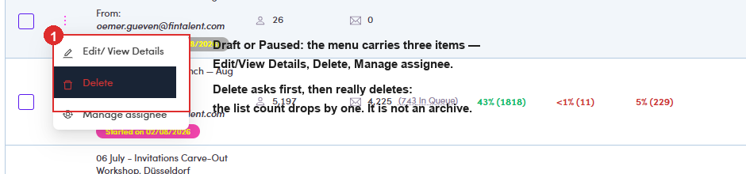
A5.2.1: the ⋮ menu on a Draft: Edit/View Details, Delete and Manage assignee. A Running ME shows the same three. - Bulk does one thing only. Tick rows → “N marketing email(s) selected” → Assign assignee. There is no bulk delete and no bulk status change. Reassigning owners is the whole feature.

A5.2.2: ① the selection bar with its single action · ② the Assignee column, with the role chip above each name.
A5.3 · Inside the ME
- Open it. Header: editable name, timezone, description and owner with the ⚙ badge and the Active switch. Tabs: Inbox, Template, People, Preview, Email Queues and Timeline. Two are conditional: Preview and Email Queues do not always show. A fresh Draft can legitimately show neither, so do not read their absence as a fault; the exact trigger is still being pinned down.

A5.3.1: ① owner + ⚙ + the Active switch · ② the tab row · ③ Force Send and the step's delete icon. - Template holds the single step. It carries the Force Send button from A5.7.3 ↗ plus a 🗑 delete on the step, deleting it empties the ME, so only do that on a Draft.
- ⚙ on the owner avatar → change the sending account. Same control as a campaign: a list of Fintalent accounts, the current one excluded; picking one changes the account the blast sends From.

A5.3.3: ① the ⚙ badge · ② the account list. Set this before Force Send: it decides the From address and where replies land.
A5.4 · The ME's own Inbox
A worked example, Talent Handbook Launch — Aug 2026: All 3,733 = Interested 2 + Not Now 1 + Out Of Office 1 + No Categories 2 + Not Response 3,723 + Opted Out 4. The categories and Not Response add up to All, so Not Response is the bulk of the tab on any healthy send. Silence is the normal outcome, and the few categorised rows are the work.
Opted Out sits apart, under its own Stops sending group with a 🚫 mark, not a reply category but a hard stop (7.9 ↗).
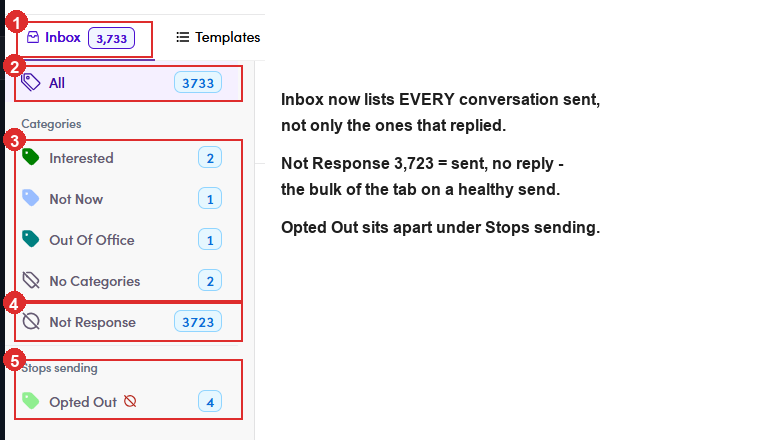
- The Inbox tab is this ME's replies only, with a category rail down the left: All, Prospect, Interested, Scheduled Call, Platform Signup, In Projects, Project Completed, Not Now, Not Interested, Email Updated, Left The Company, Out Of Office, Do Not Contact, Opted Out, No Categories, Bounced / Dropped, Open and Click.

A5.4: ① the category rail (Open and Click are engagement, not replies) · ② filters · ③ keyword search. - Bounced / Dropped and Opted Out are the two to read first after a blast, they decide whether the next ME to that segment should go out at all.
A5.5 · Add contacts to the marketing email
- Start from the marketing email, not from Contacts. Open the ME → People tab. An empty one says so plainly, and tells you the only way in:
“No people yet — Contacts added to this marketing email via the Contacts V2 bulk flow will appear here.”
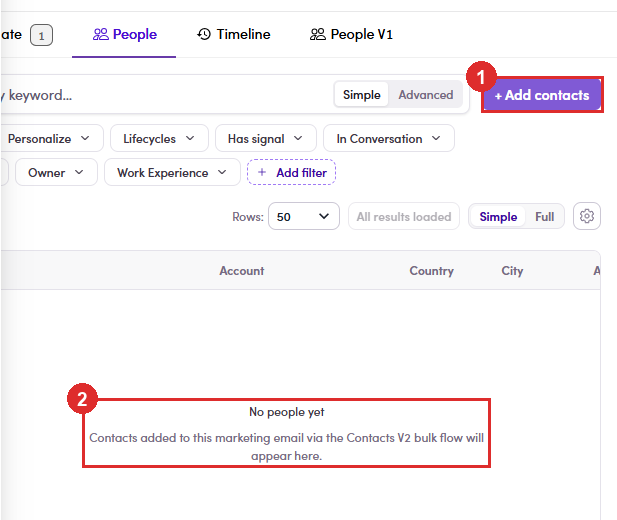
A5.5.1: ① + Add contacts, top right of the tab · ② the empty state naming the bulk flow. - + Add contacts does not open a picker. It takes you to Contacts. You land on the full Contacts list with a filter already applied: a chip reading Marketing Email: 1 excluded. That chip is doing real work: it hides everyone already in this ME, so whatever you tick next is genuinely new.
You have left the marketing emailThis is a normal Contacts page now. The full filter bar is yours: Lifecycles, Has signal, Countries, Work Experience, keyword search. Narrow the list here rather than ticking your way down 15,000 rows.
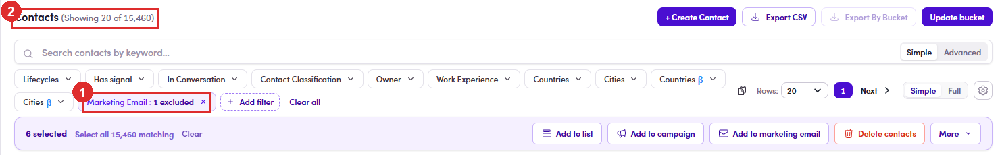
A5.5.2: ① the Marketing Email: 1 excluded chip · ② the row count you are working against. - Tick the contacts you want. A selection bar appears with the count, Select all N matching for the whole filtered set, and Clear. Of the actions on the right, the one you want is Add to marketing email, the neighbours add to a list or a campaign instead, and Delete contacts sits two buttons away.
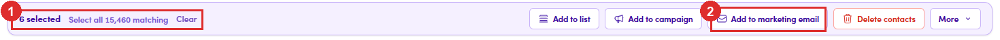
A5.5.3: ① the count and Select all N matching · ② Add to marketing email. - The drawer is two panes, and both matter. It opens titled Add N contacts to marketing email.
Pane What it does Left: Select marketing email every ME you can reach, searchable and sortable. Each row shows name · owner · status chip · N recipients, so you can tell a Draft from something already sending before you pick it. Right: the contacts split into three buckets: Valid · Missing + Invalid · Platform Signup, each with its own count. They are not a quality ranking: which ones you tick depends on what the email is for. See below. Read the legend above the table: “☑ Tick to add and ◉ Email to send”. Two different controls: the checkbox decides whether the contact goes in, the radio beside each address decides which address gets used.
What each bucket actually means, and when to tick it:
Bucket What is in it Tick it? Valid The safe ground. The address is confirmed working, so a send has a high chance of landing rather than being dropped. Yes: pre-ticked for you. Missing + Invalid Needs a human look. The work address is missing or unusable, so the pick falls back to a personal one, unverified rather than proven bad. Most are reachable; nobody has checked. Your call. Tick individually if you are willing to risk a bounce on that name; leave it if you would rather not spend the sender reputation. Platform Signup People who already have a Fintalent account, talent or client. Nothing to do with whether the address works. Depends entirely on the campaign. See the rule below. Platform Signup is a business decision, not a data-quality oneAsk what the email is for:The email is aimed at… Platform Signup Why Talents Tick all of them These are your talents. Leaving them out means mailing everyone except the audience. Prospective clients Judgement call Having an account already suggests they may be a client. Whether that makes them a target or means you should leave them alone depends on the campaign. Decide deliberately, do not let the default decide for you. When a contact has more than one address, the system has already chosen one. It picks by priority: a valid address first, then one belonging to a sponsor company, and so on down. The chosen address carries the filled radio; any others sit under Additional Emails.
You can overrule it right here. Click the radio next to a different address and that is where the email goes. Worth a look whenever someone has a work address and a personal one. The automatic pick is a sensible default, not a decision about which inbox this particular message belongs in.
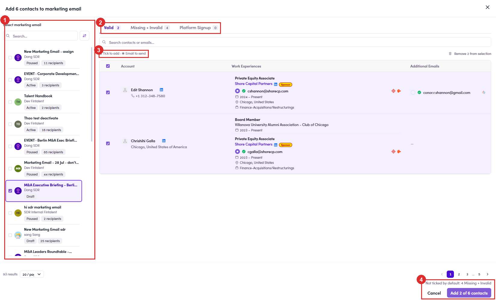
A5.5.4: ① pick the ME (status and recipient count on every row) · ② the three buckets · ③ tick-to-add vs email-to-send · ④ the confirm button and the line above it. - Tab 1: Valid: everything here is already ticked. Rows are shaded and the header checkbox is on. The address being used sits in the Work Experiences column beside the company, the work address, right under the Sponsor chip. In one example, 52 of the 62 picked there and not one fell back to a personal address.
Whatever is listed under Additional Emails is an alternative. It is normal for those to be red. They are not the address being sent to, so a red alternative is not a problem to fix.
Remove N from selection, top right, unticks the whole tab in one click. Useful when you meant to send only to the other buckets.
The icons mean the same thing in all three tabs. Hover any of them; these are the tooltips:
Icon Tooltip What it means for you green tick Valid the address is confirmed working red triangle Invalid known bad. Sending here costs you sender reputation grey circle Not verified never checked. Not proven bad, just unknown blue arrow Replied from this email this person has written back from that address before green person Platform Signup they hold a Fintalent account 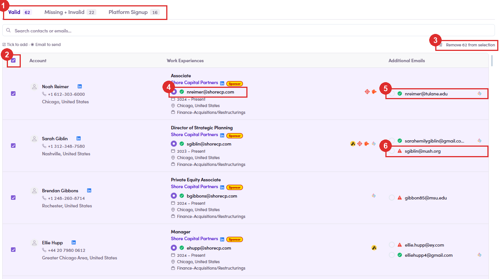
A5.5.5: Valid. ① the three counts, adding up to your selection · ② header checkbox on, every row ticked · ③ Remove 62 from selection · ④ the address in use, on the work experience · ⑤ an alternative address · ⑥ an alternative that is Invalid. Harmless, it is not the one selected. - Tab 2: Missing + Invalid: nothing ticked, and the pick has fallen back. In one example, 17 of the 22 had no usable work address, so the radio landed on a personal one under Additional Emails while the Work Experiences column shows the job with no address against it. That is what the tab name means: the work address is missing or unusable, not that the person is unreachable.
The blue Replied from this email arrow is the best reason to tick one of these by hand. Someone who has already written back from an address is a far safer bet than the bucket label suggests.
⚠ One row had no address selected at allNot every row here has a pick. Tick a contact whose radio is empty and you add someone with nowhere to send, check the radio, not just the checkbox.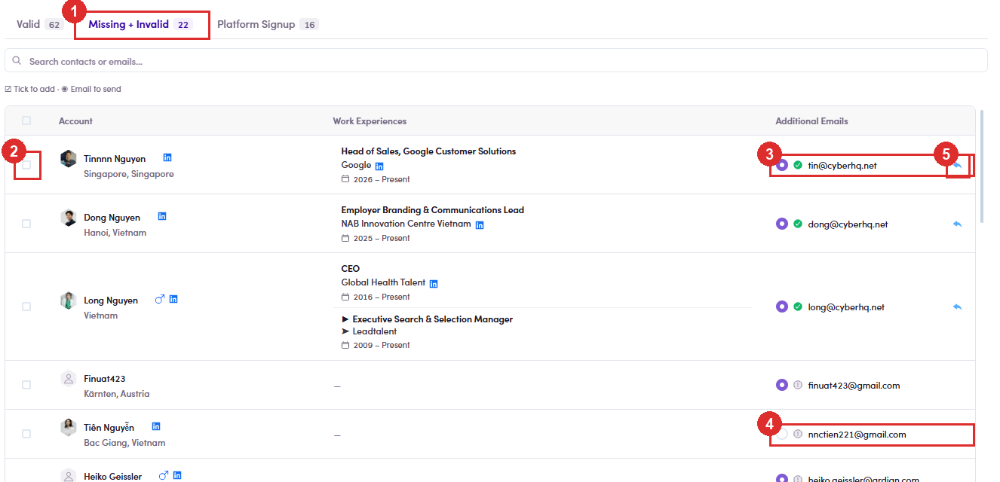
A5.5.6: Missing + Invalid. ① the tab · ② nothing ticked · ③ the pick fallen back to a personal address · ④ a row with no address picked at all · ⑤ Replied from this email. - Tab 3: Platform Signup: people who already hold a Fintalent account. Nothing is pre-ticked. All 16 rows picked a personal address; none had a work one. The marker is the green person icon at the end of the row, hover it and it reads Platform Signup.
This tab says nothing about address quality. An address in here can be green Valid and still sit outside the Valid tab, because holding an account is what put it here. Judge it on who the email is for, not on the data.
⚠ Skip this tab and you may miss the whole audienceIf the email is aimed at talents, these are your talents, leaving the tab unopened mails everyone except the people it was written for. Go back to the bucket table in A5.5.4 ↗ and decide deliberately.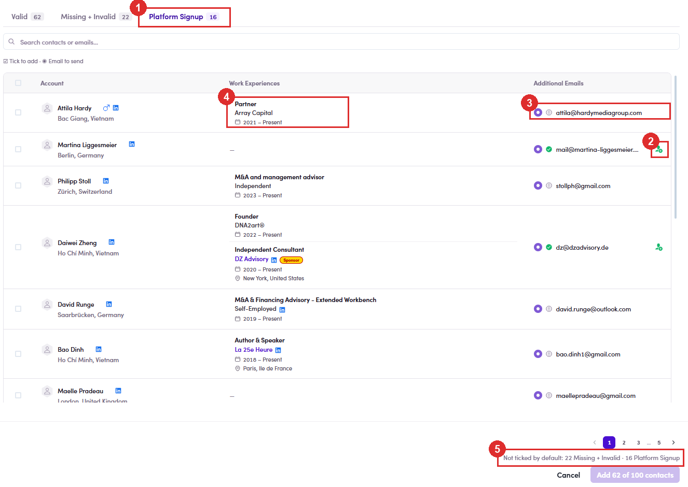
A5.5.7: Platform Signup. ① the tab · ② the green Platform Signup marker · ③ a personal address, Not verified · ④ a work experience carrying no address · ⑤ the line that names both unticked buckets. The N results count and page numbers along the bottom belong to the marketing email list on the left, not to the contacts, 93 results was 93 MEs. The buckets are not paginated; each tab shows all of its rows.
- ⚠ Read the button before you click it. It will not add everyone you ticked. Confirm reads Add 2 of 6 contacts, and directly above it: Not ticked by default: 4 Missing + Invalid.
Only the Valid bucket is pre-ticked. Contacts with a missing or unusable address are carried into the drawer but left unticked on purpose, so selecting six people and adding two is the expected outcome, not a fault. Worked example: six selected →
Valid 2, Missing + Invalid 4 and Platform Signup 0→ buttonAdd 2 of 6 contacts.If you want the excluded ones anyway, open the Missing + Invalid tab and tick them yourself, but fix the address first, or they will bounce (7.7a ↗).
- Confirm, and read the toast. It names both the number and the email: “Added to marketing email — 2 contacts added to M&A Executive Briefing - Berlin, October 2026.” That is your receipt: the one moment the system tells you what actually went in.
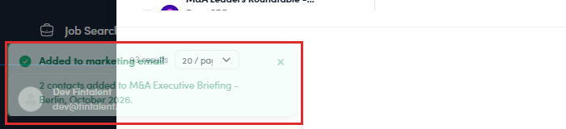
A5.5.9: ① the toast, bottom left over the sidebar. It names both numbers that matter: how many contacts went in and which marketing email they went into, and it clears on its own after a few seconds, so read it as it appears. A count lower than what you selected is the dialog holding back contacts with a missing or invalid email. - Check the People tab. Go back to the ME: the People tab badge should carry the new total. If it does not match what the toast said, something was dropped; re-run the add rather than assuming it landed.
A5.6 · Remove contacts from the marketing email
- Open the ME → People tab and tick whoever should not receive it. The selection bar is the same one you used to add: the count, Select all N matching, Clear. The action you want is Remove contacts.
Removing takes them off this marketing email only. The contact record itself is untouched: this is not Delete contacts, which lives on the Contacts page and is a different thing entirely.
- You get told twice, in two places, and they do not say the same thing.
Where What it says Banner, above the table Removed 1 contact, with an Undo beside it. Stays until you dismiss it. Toast, bottom left Removed 1 contact from M&A Executive Briefing - Berlin, October 2026, the only one that names the email. Clears on its own. If you work several MEs at once, the toast is the one that tells you which list you just cut into.
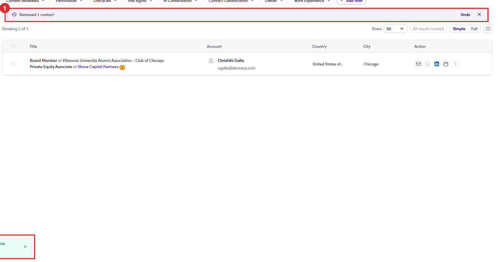
A5.6.2: ① the banner and its Undo · ② the toast, the only place the email is named. - Undo really does put them back. Worked example: two recipients, removed one, People went 2 → 1; clicked Undo and it went back to 2 with the contact returned. Because the banner waits for you rather than fading, a wrong bulk remove is recoverable, as long as you notice before you navigate away.
🐛 After Undo the table lies until you reloadThe People badge corrects itself, but the list underneath keeps the post-removal total, it read People 2 and Showing 1 of 1 at the same time. Refresh before you trust the table, and count off the badge, not the footer.
- Once you leave the page, Undo is gone. There is no removal history and no bin to fish them out of, the only way back is to add them again from scratch (A5.5 ↗). On a Select all N matching removal that is a real cost, so read the count in the bar before you confirm, not after.
A5.7 · Run a Marketing Email (activate + Force Send)
- Open the ME. Left menu → Sales Management → Marketing Emails, then click its name. The list tabs are All, Draft, Paused, Running and Finished, anything waiting on you is under Draft.
- Before you run it, check how much of it has been reviewed. The number lives on the Preview tab badge, and it reads reviewed / total.
Preview badge What it means 5,197 / 5,197 everybody has been reviewed. Safe to run. 0 / 1 nobody has. The SDR has not finished: send it back rather than running it. anything in between part-reviewed. The unreviewed ones still go out, and they go out on the default template as-is. This is the one number worth stopping for. Force Send only reaches reviewed contacts (A5.x.2 ↗), so a half-reviewed ME quietly sends to fewer people than the People count suggests, and the Run dialog will tell you the same thing again in A5.7.3 ↗, which is your second chance to notice.
- Activate it: the switch at the very top right of the
drawer, reading Draft. Flip it and a confirm opens, Run marketing email: “Sending
starts as soon as you confirm. This cannot be undone.” Under that sits a count line reading recipients, email steps, reviewed, and a warning that unreviewed recipients “will receive the default template as-is”. Then comes a checkbox, I understand N unreviewed emails will be sent. It keeps the Run button disabled until you tick it. Last is a Review them now link, which closes the dialog and opens Preview.
Read the three numbers before you tick anythingSay the ME holds 20 contacts but only 16 have been marked reviewed. The dialog prints 20 recipients, 1 email step and 16 reviewed and, underneath, 4 of 20 recipients have not been reviewed. They will receive the default template as-is. Those 4 still go out: on the untouched template. A reading of 0 reviewed means nobody on the SDR side has started; that is the moment to send it back rather than confirm.Confirm and the ME becomes Active (the list calls this Running), and the row picks up a Started on date in place of Draft (Created on…).Active is not the same as queuedTen minutes after confirming, an ME can still read Active with People 20 and Delivered 0 while both its own Email Queues tab and the site-wide Email Queues page show 0 rows. Activating sets the ME running; it is Force Send (A5.7.4 ↗) that pushes the emails into the queue. Do not read an empty queue straight after Run as a failure.It is easy to missThe switch sits right at the edge of the drawer, above the tab bar and past the description box. On a narrow browser window it can be pushed off the right-hand edge, widen the window rather than assuming the ME has no switch. It can fail the other way too: on a very wide window the whole header, name, description, owner and this switch, sometimes comes back blank and stays blank. So if the top of the drawer looks empty, resize the window before concluding anything is broken.
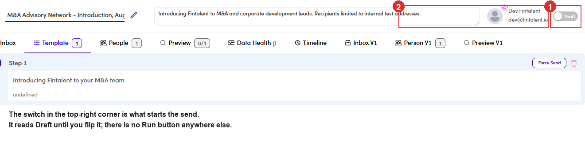
A5.7.3: ① the switch, reading Draft until you flip it · ② the owner block beside it. There is no Run button anywhere else on the screen. 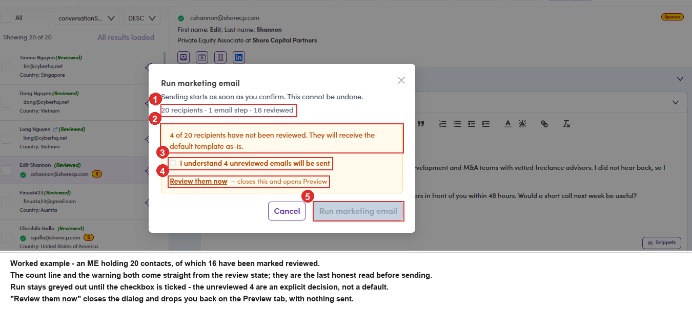
A5.7.3: the confirm, on a real ME: ① 20 recipients · 1 email step · 16 reviewed, read this line first · ② the amber warning naming the 4 unreviewed · ③ the acknowledgement you must tick · ④ Review them now, which backs out to Preview with nothing sent · ⑤ Run marketing email, greyed out until the box is ticked. - Force Send: on the Template tab, top-right of the Step 1 panel, beside the red delete-step bin. This is the button that actually pushes the emails into the queue.
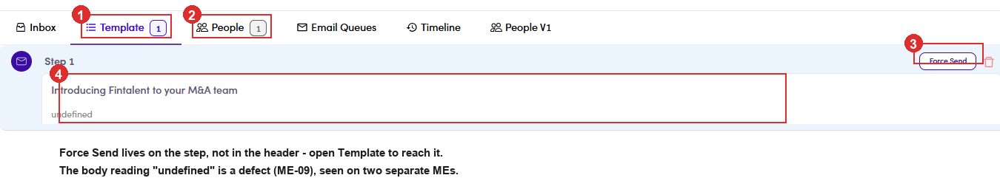
A5.7.4: ① the Template tab, where Force Send lives · ② People, the recipient count · ③ Force Send, on the step itself rather than in the header · ④ the step body. Note it reads undefined here, a defect reproduced on two separate MEs. Only contacts the SDR marked Content Reviewed are sent. Anyone left unreviewed stays put: which is the safety net, and also the usual reason the queue comes out smaller than the People count.
Its confirm is much thinner than the Run oneIt shows the Subject and the Content and nothing else, no recipient count, no mention of attachments. The merge fields are still raw ({{contact.firstName}}), and it is titled “Force Send Campaign Flow” even on a Marketing Email. Take your numbers from the Run dialog, because this one will not repeat them.At zero reviewed, nothing is queued, and nothing says soWorked example: an ME with 3 recipients, activated and force-sent with 0 reviewed, produced an empty Email Queue tab and no message of any kind. It reads exactly like a failed send. Marking all 3 reviewed and force-sending again produced all 3 rows at once. - Check the Email Queue tab. One row per email, and every row sits in exactly one of three states. The three counts add up to All. On Talent Handbook Launch — Aug 2026: All 5,197 = In Queue 372 + Delivered 4,820 + Cancel 5.
Status What it means Sent Date Can you still stop it? In Queue written and waiting. It has not gone anywhere yet, and it will go out on its own at the end of the day in the ME’s timezone. empty Yes: this is the only state you can cancel from. Delivered gone. It reached the mail provider and left. filled in No. There is nothing left to stop. Cancel pulled out of the queue before it went. It stays on the record as a row so you can see it existed. empty : already stopped; it will never send. Cancel only reaches the In Queue tabOnce a row flips to Delivered the email is out of your hands. If you need to pull something, pull it before the daily release. That is the entire window.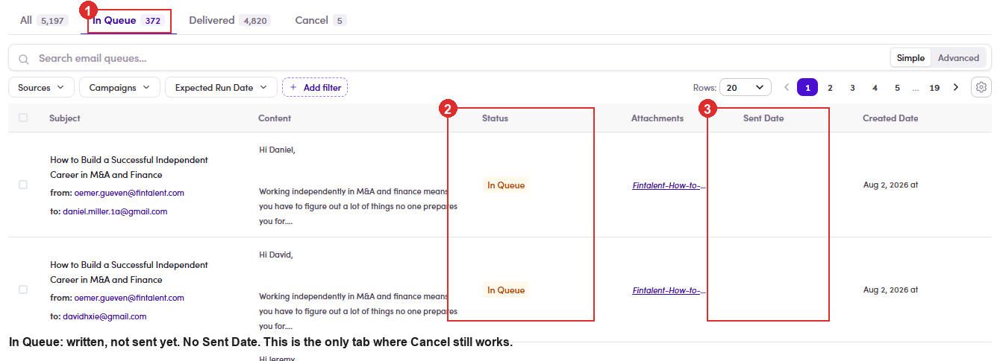
A5.7.5: In Queue 372: ① the tab · ② the amber In Queue chip · ③ Sent Date empty. Nothing has left yet. 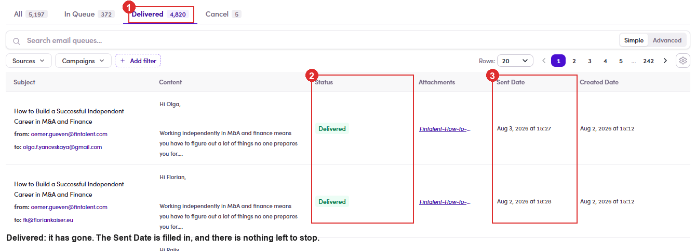
A5.7.5: Delivered 4,820: ① the tab · ② the Delivered chip · ③ Sent Date filled in. That is how you tell it really went. 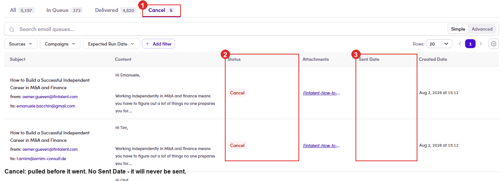
A5.7.5: Cancel 5: ① the tab · ② the red Cancel chip · ③ Sent Date empty. Pulled before it sent, kept as a record. The queue count should match the reviewed contacts, not the People count. If it comes out smaller, review is usually the reason (A5.x.2 ↗).
Full tour of the queue, its tabs and its row actions in 7.6 ↗. The SDR view of this tab can show 0 or “Couldn’t load” for a while, a display lag, not a failed send.
- Then hand it back. Replies land in the ME's own Inbox, and the SDR works them from there (Flow 7 ↗). Your part is done once the queue looks right.
A5.x · Edge cases
- Delete exists, but it disappears the moment the ME starts. The row ⋮ is short and changes with status:
ME status Row menu Draft Edit/View Details · Delete · Manage assignee Paused Edit/View Details · Delete · Manage assignee Running (“Started on…”) Edit/View Details · Manage assignee, no Delete So the window for deleting is before it has ever run, or while it is paused. Once a ME has started it stays in the list for good. There is no archive to move it to either.
Two statuses exist in the data that you never seeArchived and Scheduled are valid marketing-email statuses in the API and both appear in the status filter, but the list has no tab for either and no row action produces one. In one snapshot the five tabs accounted for every record (57 + 11 + 19 + 4 = 91). Treat them as not implemented rather than as something you can reach.
A5.x.1: a Draft ME: Delete is there. 
A5.x.1: the same menu on a Running ME: Delete is gone. - Force Send only reaches reviewed contacts. Same rule as A5.7.3 ↗: people the SDR never marked Content Reviewed stay behind. A queue smaller than the People count usually means review, not a bug, check People before you chase it. At zero reviewed the queue is not built at all, and nothing on screen says why. The tab simply reads “No email queues yet”. Before treating a force send as broken, check the reviewed count in the Run dialog (A5.7.3).
- Cancelled ≠ failed. In the example the queue reads Delivered 1 and Cancelled 2 of 3 people. Cancelled rows were pulled before sending (unreviewed, suppressed, or lifecycle-excluded), they never hit the provider, so they don't count against the domain.
- Change the sending account before, never during. The ⚙ sits on the owner avatar in the top-right of the ME header. Clicking it drops the full list of accounts, and picking one applies immediately, no confirmation, no toast, the header simply rewrites itself.
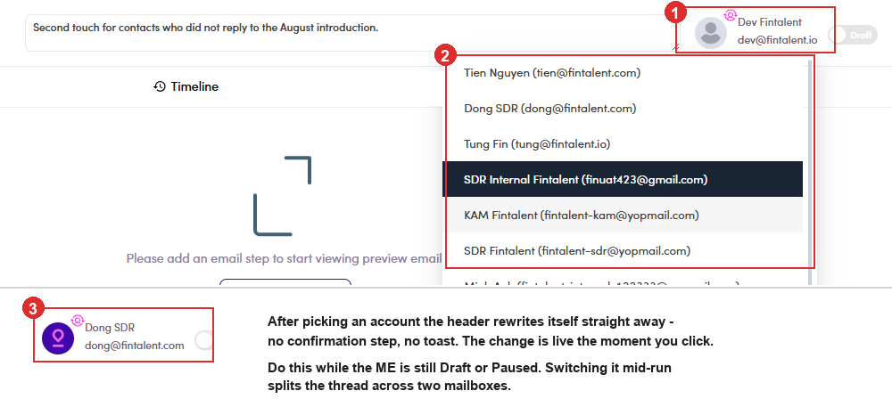
A5.x.4: ① the owner avatar with its ⚙ badge · ② the account list it opens · ③ the header a second later, now reading the new account. The switch takes effect on the spot, with nothing to confirm. Never mid-runSwitching the account on a Running ME splits the thread: what already went out keeps the old From, and replies to it land in the old inbox. Pause → switch → resume. Because the control asks for no confirmation, there is nothing to catch a mis-click, check the ME status before you touch it. - The Timeline tab works exactly as the campaign one, same actor + before→after format, same Simple / Advanced search. See A4.5 ↗ rather than repeating it here.
ADMINA6 · Approve a new talent (decides Active or Passive)
| Flow | What you do in it | When you use it |
|---|---|---|
| A6-C · Review the In Review queue ↗ | Work through the new sign-ups one profile at a time. Read what the system recommends, check it against the profile, then reject the person or approve them to Active or Passive. | Somebody new signed up. They sit at In Review and cannot be invited to anything until you
decide. |
| A6-D · Re-check an existing status ↗ | Go back over talents already marked Active or Passive. Filter for the ones where the system disagrees with the status on file, read them, and either change the status or leave it. | You want to know whether the statuses you already have are still right. Profiles change after they are approved; the status does not follow on its own. |
Both lean on the same recommendation, and the rule behind it is written out in A6-C.6 ↗. It is advice on every screen it appears, never an action.
A6-C · Review the In Review queue
In Review and waits for someone to look at it.
You have three ways out: reject the person, approve them to Active, or approve them to Passive.
The system offers a recommendation on every profile, but the button you press is the decision.- Open the queue. User Management → Talents, then the
N In Review button at the top right. It is the only way in; there is no In Review tab on the list.
Clicking it opens a drawer showing one profile at a time rather than filtering the table.
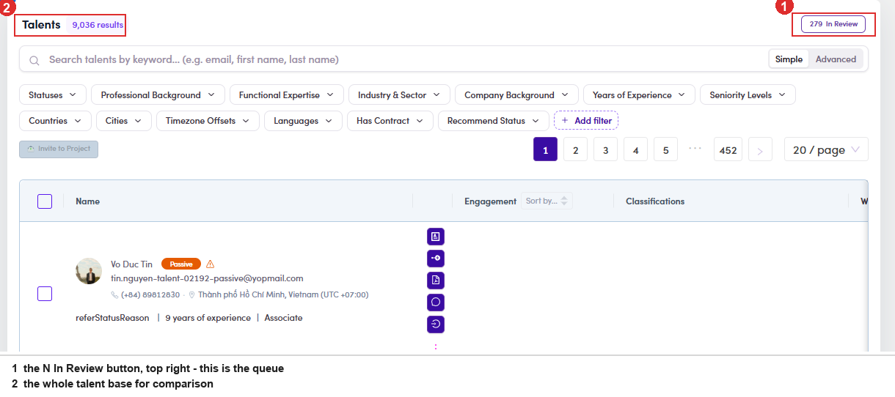
A6-C.1: ① the N In Review button, top right, the only door into the queue · ② the full talent count beside it. - Move between profiles without going back to the list. Top right of the drawer sits a
pager, ‹ N/280 ›. The ← and → keys do the same thing.
On a narrow window, use the keyboardThe pager sits at the far right edge of the drawer and is the first thing to fall off screen. The arrow keys keep working when the buttons are not visible, so a queue can be walked end to end without ever seeing the pager.
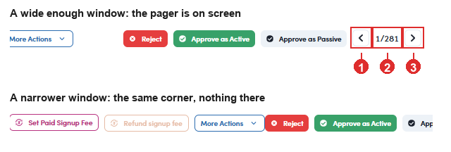
A6-C.2: ① previous profile · ② where you are in the queue · ③ next profile. Underneath, the same corner on a narrower window: the pager is gone, and the arrow keys are all you have. - Read the recommendation. The status chip reads In Review and carries a
⚠ warning icon beside it. Hover the icon and you get two lines:
Line What it is Example Recommend: <status> what the rule would pick if it decided Recommend: Active the sentence under it which of the five questions produced that answer Active, self-directed, and nothing ties them to a client company. The full rule, all five questions and every sentence it can print, is in A6-C.6 ↗.
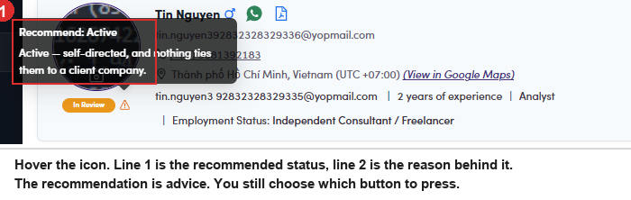
A6-C.3: hover the warning icon. Status on top, the reason underneath. - Check it against the profile yourself. The recommendation is a reading of three fields,
nothing more. Read the same three before you accept it:
What to read Where it is Why it matters Employment Status the header line, under the title Full-time or Part-time is the strongest signal for Passive. Freelancer, Unemployed and Other point the other way Current title and company Work Experiences, the rows with no end date wording like freelance or independent consultant says self-directed whatever the status field claims Company flag on the linked company: Sponsor, Portfolio or Corporate a current role at a flagged company is the one condition that outranks everything else The recommendation is advice, not an instructionIt reads fields; it does not read judgement. A profile can be technically self-employed and still be unavailable, or say Full-time and be about to leave. That is exactly why there are two approve buttons instead of one.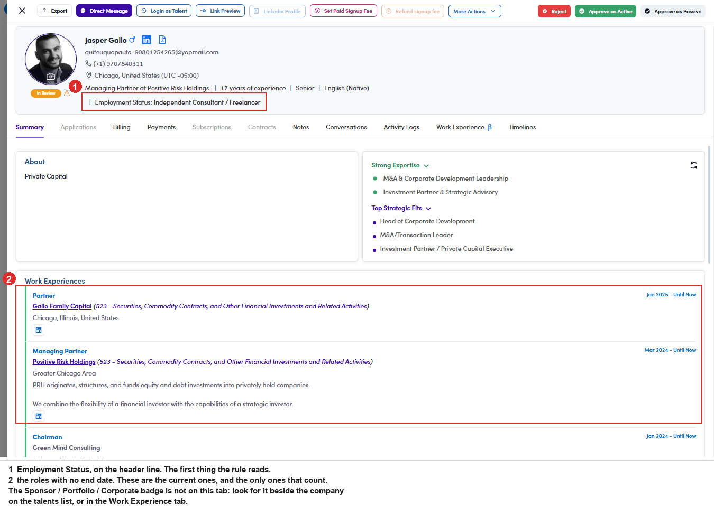
A6-C.4: ① Employment Status on the header line, the first field the rule reads · ② the roles with no end date, the only ones that count. The company flag is not on this tab. - Take one of the three routes, then check it landed. The toolbar at the top of the drawer
carries all three:
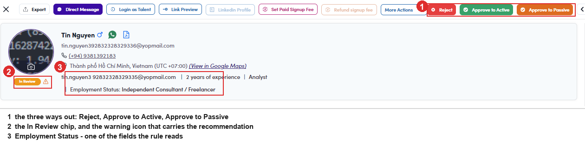
A6-C.5: the toolbar, with the three ways out: ① the three ways out · ② the In Review chip and the warning icon holding the recommendation · ③ Employment Status, the first field the rule reads. Button Resulting status When Reject (red) Rejected the person does not belong on the platform at all Approve to Active (green) Active they can take project work now Approve to Passive (orange) Passive they belong here, but somebody else already has their week A confirm opens repeating the name, email and title so you can check you are on the right record, with Exit and Approve.
The confirm does not name the statusIt asks “Do you want to approve this Talent?” and nothing more. Which status you are about to set came from the button you pressed, and there is no second chance to read it back. Check the button colour before you confirm.What happens next: the record leaves the queue and the count drops by one. The drawer stays open on the next profile, so a queue can be worked straight through. To confirm the status really changed, search the talent by name or email on the Talents list and read the chip.
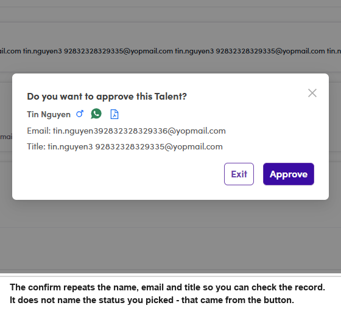
A6-C.5: the confirm names the record but not the status.
A6-C.6 · The rule that runs today
Five steps, in order, and it stops at the first answer
| # | What it reads | Outcome |
|---|---|---|
| 1 | Employment Status, and nothing else. Full-time or Part-time employee → Passive. Never answered → Active. Anything else (Freelancer, Other…) → carry on | decided here in most cases |
| 2 | Is any role marked current? No → there is nothing that could hold them | Active, stop |
| 3 | Does a current job title or employer contain a freelance keyword? | Active, stop |
| 4 | Is a current role at a company flagged portfolio, sponsor or corporate? | Passive, stop |
| 5 | Nothing matched | Active, the fallback |
The second one is the uncomfortable case. A blank field produces Active, so a talent who never finished sign-up is treated as available, and no current role, no employer and no company flag is ever looked at.
Every sentence the rule can print
Seven, no more. Whichever one you see on the tooltip, this is the step behind it:
| The sentence you see | It recommends | Decided at step |
|---|---|---|
| employed full-time | Passive | 1 |
| employed part-time | Passive | 1 |
| employment status was never answered, so availability is assumed | Active | 1 |
| no current role on the profile, so nothing marks them passive | Active | 2 |
| the current role reads as freelance or independent | Active | 3 |
| currently works at a client company (portfolio, sponsor or corporate) | Passive | 4 |
| self-directed, and nothing ties them to a client company | Active | 5 |
Not every talent carries a recommendation. Where the icon is missing the rule has no opinion on that record, which is not the same as agreeing with the status it already has.
The freelance keywords at step 3
Matched against the current job title and the current employer name. These are the ones seen firing, taken from the engine's own record of what it matched:
independent freelan self-employed
self employed remote contractor
freelan is a stem, so it catches freelance,
freelancer and freelancing. independent matches on its own rather than only in
independent consultant, which is how a talent whose employer is “Independent Record Label”
comes out Active. An independent record label is a company, not a way of working.And two of the keywords have nothing to do with being self-employed.
remote describes where
somebody sits, not who pays them; a full-time employee working from home matches it. contractor is closer
but still catches people on long contracts to a single client.How to read a company flag, and how not to
The flag is the S / P / Corporate badge sitting next to the company name, on a role with no end date. You see it on the talents list and in the Work Experience tab. No badge means no flag, and nothing else on the profile counts as one.
② Company Background =
PE-Backed / Portfolio Company, an
AI label inferred across the whole career, not a fact about today’s employer. Syed carries
PE-Backed (8 yrs) from past roles.③ the company’s own description: only S6 reads a description, and S6 is still open.
Getting this wrong is easy: on Syed’s record all three lookalikes say portfolio company, and the flag says nothing. Check the linked company before concluding.
A shortcut that has held on 4 of 4 records checked: the header line next to the status chip shows a green Corporate badge exactly when the current employer carries the flag. Arnaud and Athanasia have it; Syed and Mark do not, and neither of their current employers is flagged. Useful for a fast eye check, but confirm on the Work Experience row before acting on it.
What counts as junior or back office
Read the POSITION on the current row. It is authoritative.
Analyst, Associate, Junior,
Intern, Internship, Trainee,
Apprentice, Werkstudent, Working Student, Student, MBA Candidate,
Teaching Assistant, Investor Relations,
Fundraising, Fund Finance, Capital Formation, Fund Accountant, Fund Controller,
Taxation and Business Partner
Match whole words. Matching on part of a word turns “M&A International Manager” into an intern.
This is A6-C.7 ↗ from our business rule, moved into the intake path, same list, but it now runs at approval and before the company check.
A6-C.7 · The rule as proposed
The proposed order
| # | Question | Yes → | No → |
|---|---|---|---|
| Q1 | Is any current role at a company flagged Portfolio, Sponsor or Corporate? | Passive | Q2 |
| Q2 | Does a current role title or employer name indicate independent work? | Active | Q3 |
| Q3 | Is any role marked as current? | Q4 | Active |
| Q4 | Is Employment Status Freelancer, Unemployed or Other? | Active | Q5 |
| Q5 | Is Employment Status Full-time or Part-time? | Passive | Active, fallback |
Proposed keyword list for Q2: freelance, freelancer, fractional,
independent consultant, independent advisor, self-employed,
interim. Note what is not in it: remote and contractor, both of which
fire today, and bare independent, which is the source of the record-label false positive.
What actually changes
The questions are nearly the same. The order is reversed, and since the rule stops at the first answer, the order is the decision:
| Runs today | Proposed | |
|---|---|---|
| Asked first | Employment Status | Company flag |
| Asked last | Company flag | Employment Status |
| Blank status | early exit → Active, profile never opened | falls to the fallback, after the flag and the keywords have been read |
The profiles that come out differently
| Profile | Today | Proposed |
|---|---|---|
| Full-time employee, no flagged employer | Passive at step 1 | Passive at Q5 — same answer, more work |
| Full-time employee at a flagged company | Passive at step 1 | Passive at Q1 — same answer, better reason |
| Freelance wording in the title, current role at a sponsor | Active — the keyword fires before the flag is read | Passive — the flag fires first |
| Employment status blank, current role at a sponsor | Active — decided on one empty field | Passive — the flag is read first |
Decide these before it is built
| # | Question | Why it matters |
|---|---|---|
| 1 | Is a junior at a flagged company really Passive? | Under the proposal, an Analyst or Associate at a sponsor firm becomes Passive, because nothing overrides Q1. Two records were once ruled Active by hand for exactly this reason. The rule and those rulings cannot both stand |
| 2 | Should an advisory or sell-side employer be an exception? | Somebody at a boutique advisory is arguably a peer rather than a client. It has never been written into either rule |
| 3 | Do the loose keywords get fixed at the same time? | remote and contractor firing today, and bare independent matching company names, are wrong regardless of which order wins. Worth fixing whether or not the reorder happens |
| 4 | Blank employment status | The proposal stops treating it as an early exit, which is an improvement. It still ends at assume available on a field nobody filled in |
| 5 | Company matching quality | The biggest risk either way. Roughly 63% of talents have a current employer never matched to a company record, so the flag question cannot fire at all for them. Putting it first makes that gap matter more, not less. See A6.x.5 ↗ |
A6-D · Re-check the status of a talent you already have
A6-D.1 · Read what the system thinks
- The icon beside the status chip tells you whether the two agree. It is on the
Talents list and on the profile drawer, in both places, in the same shape:
Icon Meaning What to do ⚠ warning the current status does not match what the rule would pick worth opening; it may be right anyway ⓘ info status and recommendation agree nothing to do no icon the rule has no opinion on this record judge it by hand or leave it Hover either icon for the same two lines as in the queue: the recommended status, then the reason.
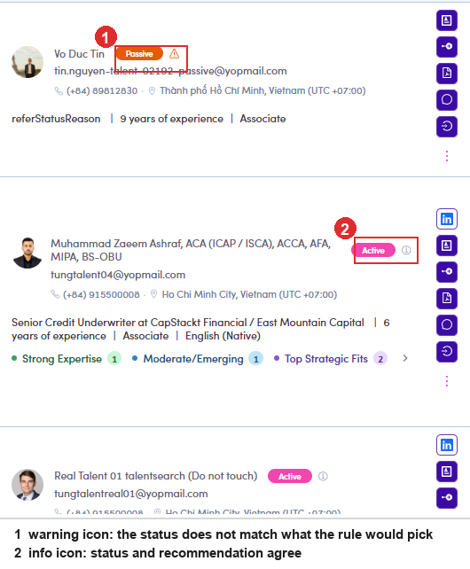
A6-D.1: ① warning, status and recommendation disagree · ② info, they agree.
A6-D.2 · Active → Passive
- Build the list of candidates. On Talents, set Statuses = Active. Then
+ Add filter → under Availability & Engagement tick Recommend Status, which pins it to the
filter bar. Open it and pick Passive. The dropdown offers only Active and Passive.
What comes back is every Active talent the rule would have made Passive. 737 of them when this was walked, so treat it as a working queue rather than a list to clear in one sitting.
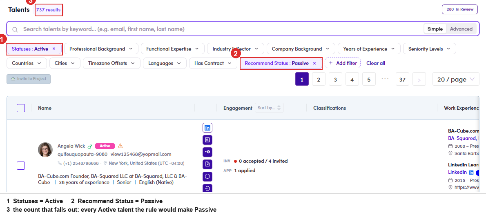
A6-D.2a: ① Statuses = Active · ② Recommend Status = Passive · ③ what falls out. - Open one and read it before you touch the chip. Same three fields as A6-C.4 ↗: Employment Status, the current title and company, and whether that company is flagged. Leaving it alone is a valid outcome, the rule is often pointing at a record that a human already judged correctly.
- Change it from the status chip. The chip on the profile carries a caret. Click it and
you get exactly one alternative, Passive. Picking it opens Set Talent Status to Passive, which asks for a
reason:
Reason Needs typing? Unable to verify freelance status (pre-selected) no Evidence insufficient no Reference unresponsive no Other yes, in the Reasons box Then Yes. The chip flips to Passive and the icon beside it changes from warning to info, because status and recommendation now agree.
Two things to watch in this dialogThe first reason is already selected when it opens. Press Yes without reading and you have filed “Unable to verify freelance status” on a record where that may be untrue.
🐛 And Other does not actually enforce anything. Picking Other and leaving the Reasons box empty saves without complaint, no error, no disabled button. The reason is meant to be required and is not.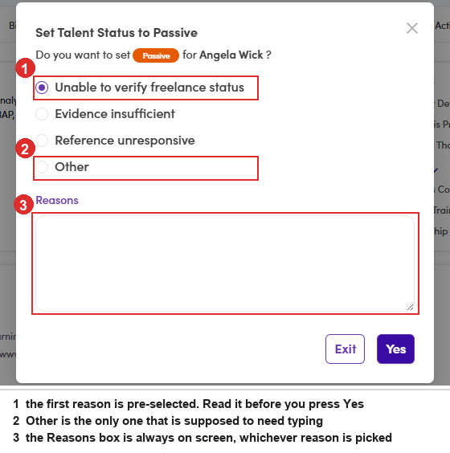
A6-D.2c: ① pre-selected reason · ② Other · ③ the Reasons box, on screen whichever reason is picked.
A6-D.3 · Passive → Active
- The same walk, with the filters the other way round and no reason to give. Set
Statuses = Passive and Recommend Status = Active, open a record, read it, then click the chip and pick
Active.
Set Talent Status to Active asks one question, “Do you want to set Active for <name>?”, and offers Exit and Yes. No reason list, no free text.
Only one direction is asked to explain itselfMaking somebody Passive takes them out of the invitation flow, so the system asks why. Putting them back does not, which means a record can go Active with nothing on file about who decided or why. If you want that written down, put it in Notes yourself.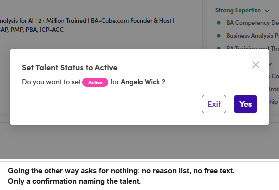
A6-D.3: the whole dialog. Nothing to fill in.
A6.x · Edge cases
- The In Review queue, new sign-ups waiting for approval. The N In Review button at the top right of the talents list opens the queue one profile at a time.

A6.x.1: ① status chip reads In Review and is not editable · ② Reject Talent → status becomes Rejected; Approve Talent → confirmation dialog, then the talent enters the normal pool · ③ pager, step through the whole queue without going back to the list · ④ Employment Status, visible on the header. Approving does not simply mean “Active”. The confirmation dialog repeats the name, email and title; on Approve the system then applies an automatic rule and picks the resulting status itself. The rule is the five-question spine in A6-C ↗, employment status, then the position and company of each current role, then the flag on those companies. It records when the status changed but not why, so the profile gives no explanation afterwards.
An unlinked company can never fire it. The trigger is the flag on the linked company, an ongoing role at a company that was never matched to the Mergermarket list does not fire Q5, whatever that company actually is. Roughly 63% of talents have a current employer in that state (A6.x.5 ↗).
This is where most wrongly-Passive talents come fromFreelancers get set Passive at approval time purely because they hold a current job at a flagged company, whatever the seniority of that job. AnAnalystorAssociateis supply, and the rule has no check for it. Nobody clicked anything, and because the rule writes no reason, the profile gives no explanation afterwards. If you are auditing Passive talents, start here.Ruled 28 Jul 2026: this is intended behaviour, not a defect, but it is narrower than the business rule. The system deciding a status at approval is by design. Two gaps remain, and both are for a human to close: it fires on a plain corporate flag, which is group D and out of scope; and it never reads Employment Status, so it cannot enforce the gate in A6-C.7 ↗. Neither gap is logged as a bug. They are the reason the the retired existing-records branch branches exist.
Two things worth knowing about the queue itself:
- After each decision the drawer advances to the next profile and the counter drops, so the whole queue can be worked without returning to the list.
- The queue drawer does not put the talent id in the URL, so a profile being reviewed cannot be linked to. Opening the same person from the list does give you an address you can copy, and the Approve / Reject buttons are there too, so use that route when you need to share or come back.
The chip is locked while the status is In Review, so a client has to be approved first and set Passive afterwards per A6-C.7 ↗.
- ReviewPassive: a Passive talent resubmitted their profile. The profile shows a Talent Resubmit since <date> panel next to the original Passive reason, and the toolbar offers three buttons instead of two:
Button Resulting status When to use it Approve Review Passive (green) Active the new evidence answers the original reason Reject Review Passive (red) Passive nothing material changed, back to where they were Reject Talent (red) Rejected they do not belong on the platform at all The Summary tab opens with a Talent Resubmit since panel carrying what the talent supplied to support the request: Reference Email, Reference Linkedin and Additional Context of Request. Those three fields are the evidence you are judging. An empty panel means they asked for reactivation without supplying anything.

A6.x.2: ① the chip reads Review Passive and is not editable · ② the three decision buttons · ③ the Talent Resubmit since panel with the supporting fields · ④ Employment Status, still worth reading. Always read the original Passive reason first. It is shown on the same screen. Approving without checking whether the resubmission actually addresses it defeats the point of the queue.
- You cannot change status for several people at once, but two bulk actions still affect the result. Bulk Actions offers Export PDF Talents, Add to list, Remove from list, Export Talents (CSV), Set Skip Review, Set Require Review, and nothing else. Every status change is one profile at a time; for a long list, Add to list first and split it between people.
Set Skip Review does not change the Active / Passive outcome. It flips the talent's internal status to Skip Review, but that field is not part of the automatic rule ↗, confirmed 30 Jul 2026 by a record with no Skip Review that the system still set Passive at approval. Whatever else the two review flags do, they do not decide the status. Set Require Review is the opposite action.
- The headline says one thing, the job history says another. Common and important. Seen in practice: a title reading "Freelance, former Private Equity Professional" on a profile whose work experience still shows an ongoing role at a PE fund. The title claims they left; the data says they did not. Open the row and check the end date before deciding.
- Most current employers are not linked, so company flags are missing. Roughly 63% of talents have a current role whose employer was never matched to the Mergermarket company list, no Sponsor / Portfolio / Corporate flag to read. For those people the title and the free-text company description are the only evidence. This is also why the Work Experience filter cannot replace the title check: every one of the strongest buy-side hits found sat at an unflagged company.
- No filter finds bosses of companies a fund owns. These are the people in group C, the CEO or CFO of a business a PE fund has bought. The box that ought to find them, Corporate / Industry → PE-Backed / Portfolio Company, is attached to nobody at all: zero people, everywhere. Reach them a different way: the Work Experience filter with company type = Portfolio and Currently, which returns 156 people.
- Where the Passive reason is saved, and why the profile looks empty. The reason you type is written to the activity log, not to the talent record, which has no field of its own holding it. It surfaces in the tooltip on the status chip and in the Passive since panel.
The Activity Logs tab is the audit trail. Each entry reads “Admin <name> changed talent status to <status>” with a timestamp. Two limits to know:
- A status set by the automatic rule at approval carries no reason, the entry only says the status changed.
- The entry for an approval reads “approved talent review (moved from Review Passive)” even when the talent was in In Review, not Review Passive. The wording is fixed, so do not read the previous status from it.
- A company can be tagged with the wrong type. The tags come from an outside data source, so they are not always right. The company data has investment banks flagged as sponsor, and at least one talent linked to an entirely different company than the one named in their title. When a familiar name produces a surprising result, check the company record before concluding the talent is misclassified.
- Going Passive does not stop any work already under way. Passive only removes someone from the project-invitation flow. Running contracts, timesheets and invoices are unaffected, see B3 ↗.
- Sending a talent back to In Review. More Actions → Switch to In Review opens a drawer listing the talent's applications, with the rule stated at the top: “Can't switch if application status is Connected / In Interview / Draft Agreement / Hired”. Confirm with Switch and the status returns to In Review, which brings the Approve / Reject buttons back. The internal status is left untouched.
The rest of that menu: Delete, Delete Permanently, Parse CV, Upload CV, Update gender, Skip Project Invites, Hero from website and Hidden from website.
ADMINA6† · Approve a new talent · audit
A decision-maker’s view of the same rule documented in A6 ↗. What it costs when it is wrong, what to fix first, and what is still undecided. The operator’s view, with the click path, stays on the A6 page.
Validated on live records · Sections 1–7
Approve a new talent, the decision, audited
Reverse-engineered from live behaviour, not from source. Scope: the admin app,
In Review queue → Approve Talent, the moment the system
chooses a status on its own, with no picker and no reason recorded.
- Walked
- 30 Jul 2026
- Access
- Read‑only
- Validated
- 7 records · 2 by tooltip
- Queue
- 2 live · 286 in sample
- Rule
- 7 steps · 2 reach Passive
- Register
- 12 defects · 3 quick wins
- Decisions
- 5 settled · 3 open
A job title never makes anybody Passive. After the employment-status gate, only a Mergermarket flag on the current employer can produce Passive, and a junior title vetoes even that. The flag is necessary, not sufficient.
Which means the decision rests almost entirely on one lookup that fails quietly: roughly 63% of talents have a current employer that was never matched to a company record, and an unmatched company can never raise a flag. Every journey below treats that lookup as the load-bearing step.
Executive summary
Audience: Product / PM / CEO- Quick win 1, check seniority before checking the employer. The rule
running today has no seniority test at all, so an
Associateholding a job at a flagged company is filed as a client. One live record: a 7-year M&A associate at a boutique investment bank, shut out of every project invitation from his first day, no reason recorded. Worth: the single largest class of wrong verdicts. About a day. - Quick win 2: stop treating a missing answer as an answer. 27% of the queue never finished sign-up and has no employment status. Today they are filed Active on the strength of one unread field, without the profile being opened. Worth: removes the largest blind branch in the rule. Under a day to gate; the policy call is the slow part.
- Quick win 3: record why. An automatic Passive stamps
passiveDateand writes no reason, so the profile cannot explain itself afterwards and nobody can audit a batch. Worth: makes every future disagreement checkable instead of re-derivable. About a day. - There is no rule page and no status picker. The decision happens on the Approve click, and a tooltip on that button is the only warning, it names the outcome but never which test produced it.
- Exactly two things make somebody Passive: the employment status they picked at sign-up, and a flag on the company of a role marked current. Everything else in the walk can only push towards Active.
- Four of the seven validated records turn on that flag step, and two of those four turn on the company simply not being linked to any record. The verdict for those two is decided by a missing row, not by anything about the person.
- Company matching is the weakest link in the chain. Three faults in seven records, all at the deciding step: one company held two records carrying different flags and the role linked to the wrong one; one linked to nothing; one linked to a subsidiary acquired in 2016 instead of the parent.
- The timeline reads like a human decision when it is not one. An automatic
change is stamped with the approving admin’s name. The only reliable discriminator is the
transition recorded inside the entry,
InReview → Passiveis the machine; anything else is a person. - Two beliefs held earlier are wrong and have been withdrawn: that a
corporateflag is out of scope, and that the internal Skip Review flag gates the check. A record with no Skip Review was still filed Passive at approval. - The register below scores 12 defects. Three are quick wins. The three most valuable things to fix are the missing seniority test, the blank employment status, and the silence of an unmatched company.
What the rule reads
Audience: engineeringFive inputs, and a longer list of things that look like inputs and are not. The second list is where the mistakes come from, on one record every lookalike said portfolio company while the actual flag said nothing at all.
| Input | Field | Where it comes from | Key states |
|---|---|---|---|
| Employment status | talent.employeeStatus |
picked by the talent at sign-up; shown on the profile header line | FullTimeEmployee · PartTimeEmployee ·
Freelancer · Unemployed · Other ·
blank: 27% of the In Review queue |
| Current roles | workExperiences[] where ongoing = true |
talent-entered | none (6% of the queue) · one · several. ongoing = true
can sit on a row whose to date has already passed, the UI trusts
the flag and prints Until Now |
| Position | workExperiences[].position |
talent-entered, one per row | free text. Differs from the profile headline on 49% of records that have a
current role, headline “Investment Manager (Infrastructure Private
Equity)”, row Investment Leader |
| Company name | workExperiences[].company |
talent-entered, free text | often a placeholder rather than a company: Freelance,
Self-employed, Various, N/A, or the person’s own
name |
| Company flag | linkedCompany.isSponsor / .isPortfolio /
.isCorporate |
set by the Mergermarket match on that work-experience row | no linked company at all, about 63% of current employers ·
linked but unflagged · S / P / Corporate. On
screen: the badge beside the company name in the Work Experience tab |
Read by nothing in the rule, the profile title, the
company description, the Company Background labels,
totalApplications, totalAccepted, seniorityLevel,
and internalStatus (Skip Review / Require Review).
Every one of these has been mistaken for evidence at least once.
|
|||
The three most convincing impostors, all seen on one record: a role description
reading “CFO of VC-backed SaaS…”, text the talent typed about
themselves; a Company Background of PE-Backed (8 yrs), an AI label inferred
across a whole career, not a fact about today; and the company’s own description. The flag on
that record: none.
The walk
Audience: engineering / ProductSeven tests, top to bottom, first match ends the walk. A talent walks between one and seven of them. Order is load-bearing: S5 sits in front of S7 because a junior at a flagged employer must come out Active, and testing the flag first makes that impossible.
| Step | Test | On yes | What it costs to evaluate | Sample queue 286 records |
|---|---|---|---|---|
| S1 | Employment status is Full-time or Part-time employee? | Passive | one field. The profile is never opened. No escape hatch: applications and accepted invitations do not save them | 36 · 13% |
| S2 | Employment status is blank? | Active — open, see §07 | one field | 76 · 27% |
| S3 | No role marked current? | Active | + a count of rows with ongoing = true. Nothing left to test |
18 · 6% |
| S4 | A current role’s position or company contains freelance wording? | Active | + read the position and company of every current row | 9 · 3% |
| S5 | A current role’s position is junior or back office? | Active | same two fields, matched on word boundaries. The company is never read | : new |
| S6 | A current role’s company is advisory or sell-side? | Active | + the company record. In the flow; has never fired | : new |
| S7 | A current role’s company carries a Mergermarket flag? | Passive | + the flag lookup on every current company. S, P and
Corporate all count |
35 · 12% |
| : | Fell through everything | Active | the full walk, nothing proved them Passive | 112 · 39% |
Outcome on the sample queue: Passive 71 (25%) and Active 215 (75%). Counts are the rule as built today, which has no S5 and no S6. Those two steps are the rebuild, and they will move records out of the 12% and the 39% rows. 46% of the queue never gets past S2: the employment-status field decides it alone.
Flow: the deciding path
Admin clicks Approve │ ├─ S1 Employment status is Full-time or Part-time? │ YES → PASSIVE no escape hatch │ NO ▼ ├─ S2 Employment status is blank? │ YES → ACTIVE still an open question │ NO ▼ ├─ S3 Any role marked current? │ NONE → ACTIVE nothing to test │ AT LEAST ONE ▼ ├─ S4 Freelance wording in the position or company? │ YES → ACTIVE │ NO ▼ ├─ S5 Position is junior or back office? │ YES → ACTIVE the company is never read │ NO ▼ ├─ S6 Company is advisory or sell-side? │ YES → ACTIVE not built yet │ NO ▼ ├─ S7 Company carries a Mergermarket flag? │ YES → PASSIVE sponsor, portfolio OR corporate │ NO ▼ no flag, or no linked company └─ ACTIVE fallback
The flag is necessary, not sufficient
After S1, a Passive verdict requires a flag, but a flag does not produce one. S4, S5 and S6 each hold a veto. A title can only ever veto; it can never trigger.
| Title on the current row | Company flag | Result | Live case |
|---|---|---|---|
| freelance wording (S4) | flagged | Active | not yet seen |
| junior / back office (S5) | flagged | Active | Iman Dakhlaoui · Athanasia Panteli |
| advisory / sell-side (S6) | flagged | Active | not yet seen |
| nothing to veto with | flagged | Passive | Arnaud Leblanc |
| nothing to veto with | no flag | Active | Syed Ishaque Hasib · Mark Cox |
| junior / back office | no flag | Active | not yet seen |
The pair that fixes the step order in place: Iman Dakhlaoui: flagged
employer, still Active, because Associate vetoed at S5 before S7 ran; and
Mark Cox, no veto available, still Active, because S7 found no flag to fire.
Same verdict, opposite reasons. Move S5 behind S7 and the first one breaks.
Approve one talent out of the queue
| Stage | What the admin does | What the screen gives back | Expected result | Defect |
|---|---|---|---|---|
| 1 Open | Clicks N In Review | The first profile opens in a drawer with a 1 / N pager | Step through the queue without returning to the list | PP-12 |
| 2 Read | Reads the header line and the Work Experience tab | Employment Status on the header; position, company and flag badge per row | Enough to answer S1–S7 by eye | PP-02 |
| 3 Predict | Hovers Approve Talent | Tooltip: “Talent status will be updated to Active”, or a Passive variant naming full-time employment or a flagged company | The outcome, in advance | PP-09 |
| 4 Approve | Clicks Approve in the confirm dialog | No status picker. The rule runs and writes the status | Record leaves the queue; Approve / Reject disappear | PP-03 |
| 5 Verify | Reopens the record from the list | The status chip, now editable | Chip matches what the tooltip promised | PP-07 |
- Happy
- Tooltip and chip agree with the admin’s own reading; one click per record; the pager advances.
- Disagrees
- Approve anyway, then flip the chip. It is read-only while the status is In Review, so correcting is always a second, separate act.
- No evidence
- Employment status blank, or no role marked current: the rule answers Active without the profile being read. The admin has only the position text to go on.
- Flag wrong
- Verified three times in seven records, a duplicate company record, an unmatched company, a subsidiary standing in for its parent. The chip is confidently wrong and records no reason.
Correct a verdict the rule got wrong
| Stage | What the admin does | What the screen gives back | Expected result | Defect |
|---|---|---|---|---|
| 1 Unlock | Waits for approval to finish | The chip becomes editable only once the status is Active or Passive | Correction is possible | PP-12 |
| 2 Switch | Clicks the chip, picks the other value | The dropdown offers exactly one alternative | Status changes | , |
| 3 Explain | On Active → Passive, picks a reason | A radio group, with Other and a free-text box | A reason is stored on the record | PP-03 |
| 4 Trace | Opens Timelines | An entry with the admin’s name and the transition | From now on the record counts as hand-set and a migration will leave it alone | PP-07 |
- Happy
- One profile, two acts: approve, then correct. The timeline shows a transition that is not
InReview → Passive, which is what marks it as a human decision. - Asymmetry
- Passive asks for a reason. Active does not, so a corrected-to-Active record carries no explanation of why the rule was overruled.
- No trace
- The talent audit log only starts around April 2026. On older records a Passive with a stamped
passiveDateand no entry at all cannot be told apart from a hand decision. - Not bulk
- Status cannot be changed for several people at once. A batch means opening every profile.
Validated cases
Audience: Product / engineeringSeven live records. Records 1–2 were predicted first and then checked against the system’s own Approve tooltip; 3–7 were settled by ruling. Every one of them changed or confirmed something in the walk, and no case failed because a field was read wrongly. The misses were all missing steps or undecided policy.
| # | Record | Current role | Stops | Rule | On the record | What the case settled |
|---|---|---|---|---|---|---|
| 1 | Thomas Tawse Freelancer · UK |
none: 4 rows, all closed; last ended Jun 2026 | S3 | Active | In Review tooltip agreed | No current role means nothing to test. The walk stops at three checks. |
| 2 | Yakob Sarakhman Freelancer · Ukraine |
Professional Corporate Intelligence Analyst at Independent Consultant |
S4 | Active | In Review tooltip agreed | Freelance wording is matched in the row’s company field, not only the position. |
| 3 | Iman Dakhlaoui Freelancer · Paris · 7 yrs |
M&A and Project Finance Associate at FINERGREEN, flagged Corporate |
S5 | Active | Passive rule disagrees | S5 must run before S7. The employer is flagged; only the junior position saves him. |
| 4 | Athanasia Panteli Freelancer · Barcelona · 12 yrs |
Senior FP&A Analyst at Criteo, flagged Corporate |
S5 | Active | Passive rule disagrees | The position beats seniorityLevel. The record is labelled Manager; the row says Analyst, and the row wins. |
| 5 | Arnaud Leblanc Freelancer · Barcelona · 14 yrs |
Head of Real Estate Finance at The Social Hub, flagged Corporate |
S7 | Passive | Passive agrees | A corporate flag counts, the same as sponsor and portfolio. No veto was available, so S7 decided. |
| 6 | Syed Ishaque Hasib Freelancer · London · 16 yrs |
Chief Financial Officer at Fin Edge, no linked company |
S7 | Active | Passive hand-set, reason recorded | An unmatched company can never raise a flag. The role description says VC-backed; the rule cannot see prose. |
| 7 | Mark Cox Freelancer · US · 31 yrs |
Director Board of Directors at Dollar Bank, linked, unflagged |
S7 | Active | Passive predates the audit log | A title never triggers Passive. Board seat, ex-investment-banking, 21 years in corporate development, and Active is the correct answer. No board-seat step was added. |
Scored against 276 existing Active records with hand verdicts, the rule as built today agrees on 169, 61%: 8 wrongly Passive, 99 wrongly Active. The errors are lopsided, and no word list closes the wrongly-Active side, because the rule never looks for buy-side signal in a position. It reads the position only to find an exit.
Defect register
Audience: Product / PM / CEOPriority = Impact − Effort. A quick win is Impact ≥ 4 with Effort ≤ 2. Sorted by priority descending, quick wins first. Each row: symptom → consequence for the person using it → cause.
| ID · JN | Symptom | Consequence | Cause | I | E | P | Quick win |
|---|---|---|---|---|---|---|---|
| PP-01 J1 |
No seniority test anywhere in the walk. A junior title reaches the flag step and is filed as a client. | A 7-year M&A associate at a boutique investment bank is excluded from every project invitation from day one. | The rule reads the current position only to look for freelance wording; there is no junior or back-office list. | 5 | 1 | 4 | Quick win |
| Fix | Insert S5, hard-stop A, matched on word boundaries against workExperiences[].position, before the flag step. | ||||||
| PP-03 J1 J2 |
An automatic Passive stamps passiveDate and writes no reason. |
The profile cannot explain itself later; a batch cannot be audited; every disagreement has to be re-derived by hand. | Only the manual path collects a reason. The rule writes the status and the date and stops. | 4 | 1 | 3 | Quick win |
| Fix | Store the step that fired, in the same shape the manual reason uses, and show it beside the chip. | ||||||
| PP-02 J1 |
A blank employment status is read as “not full-time” and waved to Active. | 27% of the queue is decided on a field nobody filled in, without the profile being opened. | S2 tests for membership of a set; blank fails the test and falls to the Active branch. | 4 | 2 | 2 | Quick win |
| Fix | Treat blank as unknown, separately from not full-time. Either continue the walk on the position alone, or hold the record for a human. | ||||||
| PP-04 J1 |
One company holds two records with different flags, and the role links to the wrong one. | The verdict turns on which duplicate got matched, not on any fact about the company. Finergreen: the correct record is unflagged, the linked one is flagged Corporate. | No dedupe on the company list; the work-experience match picks one of the two. | 5 | 3 | 2 | : |
| Fix | Dedupe by name and website; until then, surface every candidate match on the row so the admin can see the ambiguity. | ||||||
| PP-07 J1 J2 |
An automatic status change is stamped with the approving admin’s name. | Reading the name instead of the transition, an auditor concludes a person weighed the decision, and drops from the queue exactly the records the queue exists to find. | The history entry records the actor of the approval, not the author of the status. | 3 | 1 | 2 | : |
| Fix | Attribute the change to the rule, and keep the admin as the approver in a separate field. The transition InReview → Passive already carries the signal, make it the visible one. | ||||||
| PP-08 J1 |
ongoing = true on a row whose to date has already passed. |
A finished job counts as current. On one record the end date is four months in the past and the UI still prints Until Now. | Two fields encode the same fact and nothing reconciles them; the UI trusts ongoing. |
3 | 1 | 2 | : |
| Fix | Decide which field wins, then make the other one derived. Until then, flag the contradiction on the row. | ||||||
| PP-11 J1 |
The freelance word list is not published, and it is incomplete. | A record can exit to Active for a reason nobody outside the code can see. remote matches nothing at all; fractional appears in 11 titles and is in no list we hold. |
The list lives in the implementation. Two examples were named in a flowchart; the rest is unknown. | 3 | 1 | 2 | : |
| Fix | Publish the list. Add fractional, sole trader, sole proprietor; drop remote; guard independent so it does not match a company that merely starts with the word. | ||||||
| PP-05 J1 |
An unmatched current employer silences the deciding step. | About 63% of current employers are unmatched, so for most records the flag step cannot fire whatever the company actually is. | The flag is read from the linked company record. No link, no flag, no Passive. | 5 | 4 | 1 | : |
| Fix | Improve matching, and treat unmatched as unknown rather than as unflagged. The two are not the same answer. | ||||||
| PP-10 J1 |
seniorityLevel describes the person, not the current role. |
A 12-year record labelled Manager is actually working as an Analyst. Trusting the label would file her as a client. |
One enum for a whole career: Analyst · Associate · Manager · Senior. |
3 | 2 | 1 | : |
| Fix | Read the row’s position. Keep the enum as a corroborating signal only; it must never veto the row. | ||||||
| PP-09 J1 |
The tooltip names the outcome but never which test produced it. | The admin cannot tell a correct verdict from a coincidence, so a wrong reason survives as long as the right answer comes out. | The prediction is computed in the browser and returns a status, not a cause. | 2 | 1 | 1 | : |
| Fix | Name the step in the tooltip, “Passive: current employer is a flagged company”. | ||||||
| PP-06 J1 |
A work-experience row links to a subsidiary instead of the parent. | Criteo resolved to HookLogic, acquired by Criteo in 2016. Both are flagged Corporate here, so the verdict held, by luck. |
Name matching has no notion of a corporate hierarchy or an acquisition. | 3 | 3 | 0 | : |
| Fix | Prefer an exact parent-name match over a fuzzy subsidiary hit, and show which entity was chosen. | ||||||
| PP-12 J1 J2 |
The status chip is read-only while the status is In Review. | A known client must be approved first and corrected second. The wrong status exists, briefly, on every corrected record. | The chip only switches between Active and Passive; In Review is set by the review actions. | 2 | 2 | 0 | : |
| Fix | Offer the outcome in the approve dialog, so one act sets the intended status. | ||||||
Quick-win shortlist
Audience: Product / PM / CEOCheck seniority before checking the employer
Product, A junior analyst is the product, not the customer. Right now holding a job at a recognised company is enough to file one as a client, and nothing on the profile says why. This is the largest class of wrong verdicts and the cheapest to close.
Engineering: Add S5 between the freelance-wording test
and the flag lookup, matching hard-stop A on word boundaries against
workExperiences[].position for rows with ongoing = true. Order
matters: S5 must short-circuit before the flag is read.
Record why the rule decided what it decided
Product, A status with no reason cannot be reviewed, appealed or trusted. Every argument about a verdict currently starts by rebuilding the reasoning from scratch.
Engineering: Persist the step that fired alongside
passiveDate, reusing the shape the manual reason already writes, and render it
next to the status chip.
Stop treating a missing answer as an answer
Product, More than a quarter of the queue is filed without anyone reading the profile, because an empty field passed a test it should not have been eligible for. Decide the policy once and the largest blind branch closes.
Engineering: Separate blank from not full-time at S2. Then either continue the walk using the position alone, or route the record to a hold state. The code is small; the decision is the work.
Open questions & unverified
Audience: Product / engineeringBlank employment status: Active, or hold for a human? 27% of the queue rides on this, and it is a policy call, not a technical one.
S2 · blocks PP-02
Keep S6, and on what evidence? It has never fired in seven records. The case it exists for is a senior person at a sell-side boutique, on the one record available, S5 got there first. If it stays: does it read the company name, its description, or a NAICS code?
S6 · the Finergreen description is the only worked example
Should S3 trust ongoing or to when they contradict each other? No
verdict changed on the record where this surfaced, which is why it is still open.
PP-08 and Mark Cox, to = Mar 2026, still marked ongoing
The full freelance word list. Two examples were named in a flowchart; everything else in there is unknown to us, so S4 has to be read as “the rule may exit to Active for a reason you cannot see”.
Dev · blocks PP-11
Whether seniorityLevel being Analyst or Associate
should fire S5 on its own when the position text does not look junior. No record has
produced that combination yet.
PP-10 · Athanasia Panteli decided the reverse case only
Three rows of the truth table have no live case behind them: freelance wording with a flag, advisory employer with a flag, and a junior position with no flag. All three are predicted, none observed.
§03 · truth table
The sample step distribution is the shape, not the live figures. Live data carries 2 In Review records against the sample’s 286, and many of the sample rows are obvious test data.
§03 · 286 records
Effort scores assume the change stays inside the rule and needs no company-data work, except PP-04, PP-05 and PP-06, which are scored as data work and are the reason none of them is a quick win.
Engineering review
Is aNo: it counts, the same as sponsor and portfolio. S7 asks only whether the company is flagged at all.corporateflag out of scope?Add a board-seat step?No. A title never makes anybody Passive; the flag decides. Mark Cox is Active and that is correct.Does Skip Review gate the check?No. A record withinternalStatus = nullwas still filed Passive at approval.Read the profile headline or the row?The row. The two disagree on 49% of records that have a current role.DoesNo. The position wins.seniorityLeveloverride the position?
Existing Active and Passive records are out of scope for this document, nobody re-reviews them by hand. They will be handled by a migration, for which the same seven steps are the specification.
ADMINB1 · Invite talents to a project
- Project Management → Invite Talents. The page asks you to select the project first. The dropdown lists each project as a card: title, client & contact, #PR id, seniority / experience / rate type / duration / timezone / languages, and its running score, “X invited and Y applied”.

B1.1: pick the project; each option shows client, #PR id and invited / applied counts. - Filter the pool. The full talent pool loads (9,000+). Cut it down with the filter bar, Statuses, Invited Status, Professional Background, Functional Expertise and Industry & Sector, Classification, Years of Experience, Seniority Levels, Countries, Cities, Timezone Offsets, Languages and Has Contract.
- Read a talent row before inviting: the Active badge, their title & experience, a Contracts chip (“1 Active and 1 Completed”), and the Engagement column, INV accepted/invited, APP applied/hired and CTR active/completed contracts. Row icons open LinkedIn, the CV (PDF) and chat.

B1.2–3: filter the pool; each row carries the engagement stats and a contracts chip. - Tick the talents → Invite Talents. Selecting rows reveals the 👤 Invite Talents button (top bar). It sends the project invite to everyone selected; the project's invited count goes up and the talent shows under Invited Status.

B1.4: tick talents → Invite Talents.
TALENTB2 · Log & submit timesheet (the talent does this, on the talent portal)
Fill in the billing address and payment info early, without them logging still works, but submitting is blocked: B2.x.7 ↗.
B2.1 · Open the Timesheet screen
- Sign in to the talent portal (
talent.fintalent.io) with the talent account.
B2.1.1: the Independent Consultant Sign In screen of the talent portal. - Open the ☰ menu (top left) → group Work → Timesheet. (Timesheet lives in the ☰ menu: it is not on the bottom navigation bar.)

B2.1.2: ① the Work group · ② the Timesheet entry. - Pick the project to log against. With only one Active contract the system selects it for you. The name shows in the top bar with an Ongoing label, nothing to do. With several Active contracts, click that bar to open the list and switch project; each project has its own calendar, totals and submission queue. Details in B2.x.5 ↗.

B2.1.3: the project bar with its Ongoing label; with a single Active contract the system picks it automatically. - Read the totals panel before doing anything, these three numbers measure the whole flow:
Line What it means … submitted Total hours to bill locked in, the number the money follows. Worked: … Total hours actually logged. Can exceed the submitted figure when the talent has billed less than they worked. … pending submission Hours logged but not yet submitted. At 0h the Submit button is greyed out. 
B2.1.4: ① submitted = hours to bill · ② Worked = hours logged · ③ the Submit button, enabled only when hours are pending. The submitted line is a button, not a label. The › on the right is easy to miss, click the line and the full submission history opens, which is the only place the talent can see what was actually locked in, day by day:
In the dialog What it gives you Timesheet date From → To Narrows the list to a period; the two totals above recalculate for that period. This is how you check a single billing round rather than the whole engagement. Hour(s) worked · Hour(s) to bill The pair, side by side, for the selected range. One row per day Date · Hour(s) worked · Hour(s) to bill, where the two figures diverge is visible immediately. Export to CSV Downloads the same list. Use it to reconcile against an invoice, or to keep a record before the period rolls over. The dialog also states the rule in the product's own words: “Hour(s) to bill — the hours you're charging for. You can bill less than you worked, never more.” That is the same constraint the admin side reads in B3.2 ↗.

B2.1.4: ① the submitted line, clicked · ② the date filter · ③ both totals, recalculated for the filter · ④ the rule, stated in the dialog · ⑤ one row per day, worked next to to bill · ⑥ Export to CSV.
B2.2 · Log work
- Go to the right week. Use ‹ / › next to Today.

B2.2.1: ① Today plus the ‹ › arrows change week · ② hours logged for the week. - Drag on the hour grid in the correct day column, from start time to end time.

B2.2.2: drag vertically inside the right day column, from start to end time. - The Record New Timesheet Entry dialog opens, check the Date, correct the start / end time, and a Note is mandatory (it describes the work and is printed in the invoice appendix).

B2.2.3: Date · start–end time · Note (required) → Create. - Click Create. The entry appears on the calendar in light purple = not submitted. Dark purple means submitted: locked.

B2.2.4: light purple = not submitted (editable, deletable) · dark purple = submitted (locked). - Edit or delete an unsubmitted entry. Two different actions, easy to mix up:
- Click the body of the entry → opens Modify Timesheet Entry, change the time or the Note, then Update.
- Click the ✕ in the top-right corner of the entry → deletes it.

B2.2.5: ① the ✕ delete button · ② click the entry body to edit · ③ the colour legend (submitted / pending) · ④ hours still pending submission. - Which days can be logged? A greyed-out day cannot be logged: four reasons:
Case Why Day before the contract Start date No contractual work existed yet. Day already submitted Hours to bill are locked in. Day in the future Only work already done can be logged. Day already on an invoice Submitted and then billed by Admin, locked permanently. A gap day inside an invoiced range, loggable but NOT billable The day cell is not greyed out, the talent can log and submit normally, but Admin cannot invoice it. Those hours are stranded for good.What to do: if a day inside an already-invoiced period was missed, do not log it retroactively. Those hours will sit there unbillable. Tell Admin/Ops first.Side Jul 9 (a gap inside the invoiced range Jul 8–10) Talent Day cell is white → drag creates an entry → Create works → submit works Admin Create Client Invoice does not prefill the service period, Quantity = 0; opening the picker shows Jul 8, 9, 10 all disabled → unselectable 
B2.2.6: ① greyed-out day = cannot be logged · ② today.
B2.3 · File an expense report (only if there are out-of-pocket costs)
- Click + Add expense report (directly below Submit Timesheet) → the Add new expense report dialog opens.
- Fill in the required fields: Expense report date (when the cost was incurred), Description (goes onto the invoice), Currency (defaults to the contract currency), Quantity and Amount. The Total line calculates itself as Quantity × Amount. You can also Upload file to attach the original receipt.

B2.3.2: ① date + description · ② Currency · Quantity · Amount · ③ Total, calculated · ④ receipt attachment. - Click Save. The panel on the right changes from 0 expense report to 1 expense report.
- Review / edit / delete: click the N expense report line → the Expense reports dialog: one row per item (date, description, Amount, Quantity and Total Amount) with ✎ edit and 🗑 delete buttons, an Expense date filter, and a Grand total at the bottom.

B2.3.4: ① one row per item · ② edit / delete · ③ Grand total. This is what gets added to the client invoice.
B2.4 · Submit & edit the timesheet (locking in Hour(s) to bill)
- Click Submit Timesheet (enabled only when pending submission > 0h).
If the dialog opens with no submit button and a “Update your billing or payment details” warning instead, the account is missing its billing address / payment info. Fix it in B2.x.7 ↗ and come back.
B2.4.1: ③ the Submit Timesheet button, enabled only while hours are pending. - The Select Timesheet for Submission dialog lists one row per pending day (not per entry, several entries on the same day are merged). Everything is ticked by default; at the top there is a “N working days selected” counter and an Uncheck all link. Narrow the list with the Timesheet date range (From → To).

B2.4.2: ① counter + Uncheck all · ② the editable Hour(s) to bill column · ③ the submit button spells out how many days are selected. - Adjust Hour(s) to bill if needed. Each row has two columns:
Column Editable? Meaning Hour(s) worked No Exactly what was logged, kept as the reference. Hour(s) to bill Yes The hours actually charged. Defaults to the logged hours; lower it when only part of the time was agreed. What counts as “edited”: the two columns on the same row differ. Equal = logged hours kept as-is; different = the talent deliberately set a different billable figure.

B2.4.3: a real example: ① worked 02:30:00 · ② to bill 02:00:00 → different = edited. ③ the Jul 10 row unticked (turns white) · ④ the counter now reads 1 working day selected. You cannot bill more than you worked, and it corrects you without saying soType a figure above the logged hours and the field accepts it while you are typing, then silently snaps back to the logged hours the moment you click away. No error, no red text, no toast. Measured on a 2.5 h day:You type While typing After you click away 9 or 2.6, above the logged hours shows what you typed 2.5, pulled back down 0 0 0. Allowed, you can bill nothing −1 −1 0, pulled back up Why this matters: opening the confirmation counts as clicking away. So if you type 9 and go straight for Submit, the field is already back to 2.5 before the dialog appears, you submit a different number from the one you typed and nothing tells you. Read the figure in the box, not the one you typed, before confirming.

B2.4.3: a 2.5 h day: ① 9 typed into Hour(s) to bill · ② the same field after clicking away, back to 2.5, with no message in between. - Decide which days to submit. The button at the bottom rewrites itself to match the ticked rows: both days ticked → Submit all 2 working days; untick one → Submit 1 working day. Read that button before clicking: it is the fastest way to see what you are about to lock in. Details in B2.x.3 ↗.
- The Submit Timesheet confirmation appears → click Yes. (Clicking No returns you to the list; skip this dialog and nothing you did takes effect.)

B2.4.5: “Once submitted, it cannot be edited” → Yes.
B2.5 · Verify after submitting
- pending submission must drop by exactly what you just submitted. It does not have to reach 0h:
What you just did pending afterwards Ticked every day, then submitted 0h Unticked some days (partial submit) > 0h, exactly the hours of the days left behind Seeing pending > 0 after a submit is not a bug, check whether a day was left unticked.
- submitted rises by the total hours to bill you just locked in; Worked rises by the total hours logged. The gap between the two is exactly what was edited in B2.4.3 ↗.
Example 1: submit everything: before: submitted 14:40 / worked 16:30. Log 4h (Jul 3) + 3h (Jul 4) = 7h, submit with to bill 3:30 + 3:00 = 6:30. After: submitted 21:10 (14:40 + 6:30), worked 23:30 (16:30 + 7:00) and pending 0h.
Example 2: partial submit: before: submitted 21:10 / worked 23:30 / pending 0h. Log Jul 8 (2:30) and Jul 10 (1:30) → pending 4h. Tick only Jul 8, lower to bill to 2:00, submit. After: submitted 23:10 (+2:00 = hours to bill), Worked 26:00 (+2:30 = hours logged) and pending 1:30 (Jul 10 still waiting).
- The submitted day turns dark purple and can no longer be edited; a day left behind stays light purple, keeps its ✕ button and is still editable.

B2.5: example 2 above: ① Jul 8 dark purple = locked in · ② Jul 10 light purple = still pending · ③ pending 1h30 (not zero) · ④ the submitted day column header reads 02:00 = hours to bill, not the 02:30 that was logged. - Check the colour legend. The Calendar box in the top right lists only the states actually present: Dates already submitted (green / dark purple) and Dates pending submission (light purple). No pending line means everything has been submitted.
That completes the talent's part: Admin takes over: B3 · Manage timesheet → invoice ↗.
B2.6 · What happens to it after you submit
- It is approved the instant you submit. There is no waiting, no review queue, nobody to chase. The submission is created already Approved, and the account recorded as approving it is your own.
The label does not say “Approved” thoughYour side shows Submitted. Admin's side shows Approved. Same record, two words, so “has it been approved yet?” has no answer you can read off the screen, because the answer is always yes. See B3.0 ↗ for the admin view of this.
- Open the summary of everything you have submitted, click the “N hours submitted” panel on the right. It opens Time Sheet of <your name> with the full date range in the title.
In the dialog What it gives you Timesheet date a From → To filter, for pulling out one billing period. Hour(s) worked / Hour(s) to bill the two totals for whatever range is showing, the gap between them is everything you trimmed at submit time. one card per day date, hours worked, hours to bill, side by side. 
B2.6.2: ① the date-range filter · ② worked vs to bill for that range. - Export to CSV sits at the bottom left of that dialog, and it exports what the filter is showing. Set the range first, then export: that is the quickest way to produce a per-period record for your own books.

B2.6.3: Export to CSV, bottom left. - Nothing here is editable. The dialog is a record, not a form. There is no way back into a submitted day from it. If a submitted figure is wrong, you cannot fix it yourself; ask Fintalent through Ask question (B2.x.6 ↗).
B2.x · Edge cases
- Daily contracts: an extra Day(s) to bill column. On a per-day contract the submit dialog adds a Day(s) to bill column that is calculated, not directly editable: one working day = 8 hours (log 8h → 1 day; log 6h → 0.75 day). The talent still only edits Hour(s) to bill; the day count follows from it.

B2.x.1: Daily contract: Day(s) to bill = hours ÷ 8, shown next to Hour(s) to bill. Known display defectWhen Hour(s) to bill is edited, the Day(s) to bill column in this dialog does not recalculate immediately. It keeps showing the value derived from the logged hours. The invoice total is still correct (it derives from hours to bill). See B3.x.4 ↗. - Log daily, or batch several days into one submit? Either works: the talent's choice. Submit right after logging a day, or log a whole week and submit once (the dialog lists every pending day).
- Partial submit: three days logged, only two locked in. The submit dialog is where you choose which days get locked; it is not a “send everything” button.
Action What happens in the dialog Open the dialog Every pending day is pre-ticked; the counter reads “N working days selected”. Untick a row That row turns from purple to white; the counter drops; the button rewrites itself (Submit 1 working day). Uncheck all Clears everything: handy when you only want one or two days and prefer to tick them back. Timesheet date filter Narrows the list to a date range, useful when the queue is long. Example: the talent logged the 5th, 6th and 7th, but the 7th still needs client confirmation → untick the 7th and click Submit 2 working days. The 5th and 6th are locked (dark purple); the 7th stays light purple, still editable and deletable, and remains in pending submission, ready for a later submit.
Consequence: one contract can have several submit rounds, and Admin can issue a matching number of invoices, see B3.x.3 ↗.
- What if something was entered wrongly?
- Before submitting: fixable: click the entry body to open Modify Timesheet Entry (change time / Note → Update), or click ✕ to delete it and log again.
- After submitting: not fixable; the confirmation said “Once submitted, it cannot be edited”. Tell Admin/Ops before the invoice is issued.
- After an invoice exists: invoiced days are locked permanently and only Admin/Ops can intervene. A gap day inside an invoiced range is loggable but not billable, do not log it retroactively, tell Admin/Ops. See B2.2.6 ↗.
B2.x.4: ① ✕ deletes · ② click the entry body to edit. Both exist only on light purple entries; dark purple ones have neither. - A talent with several Active contracts at once. The project bar at the top becomes a selector, click it to switch. Things to remember:
- The calendar, the three totals (submitted / Worked / pending), the submission queue and the expense reports are all per project, switching project replaces everything on screen.
- Submissions never merge across projects: each one submits separately, and Admin invoices per contract.
- The URL carries
?projectId=…: if the numbers look “wrong”, first check the project name in the top bar.
B2.x.5: the project bar with its Ongoing label; with several contracts, click here to switch. - Ask question: reach Fintalent without leaving the flow. The Ask question button (below Add expense report) does not open a form; it jumps straight into Chat, to the Fintalent Team conversation attached to the selected contract (
/chat/<contractId>). Use it after a wrong submit, a missing day, or when the billable hours are unclear.
B2.x.6: ① the two chat threads: Client (Application) and Fintalent Team (Conversation) · ② the messages · ③ the compose box. - No billing address / payment info → submitting is blocked. A talent with an Active contract who has not filled these in can still log work normally. Entries are created, pending submission grows, but at the submit step the dialog has no Submit button, only a warning:
“Update your billing or payment details — Due to UK DAC7 regulations, we're required to collect additional billing or tax information from freelancers with an active contract…”

B2.x.7a: ① where the Submit button should be → the DAC7 warning instead · ② the Update billing button · ③ the day list still renders normally, which is why it looks submittable. Easy to misreadThe block happens at submit time, not at log time. A talent can log a whole week before discovering they cannot submit, so fill these in as soon as the contract goes Active.Where to fill them in: click Update billing inside the warning, or go to My Profile → My Earnings (
/earnings). The page has two separate cards and both must be completed to clear the block:
B2.x.7b: ① Billing (invoicing address) · ② Payment method (where the money goes) · ③ Paid Earnings · Referral Earnings · Pending Invoices. - Add billing address → the Tax & Payment Information drawer: Account Type (Individual Professional / Firm : Company), name, Birthday, email, phone, Address / City / Postcode / Country and Tax Identification Number (TIN). It also carries Recipients / Cc / Bcc, who receives the invoice. Fields marked * are required.

B2.x.7c: ① Account Type · ② personal details · ③ address · ④ TIN is required, VAT is optional. - Add payment method → a single Bank info field (free text: bank name, account number / IBAN / SWIFT…) → Save.

B2.x.7d: ① the Bank info field · ② Save.
Once both are saved, return to B2.4 ↗. The submit dialog shows its normal button again.
- Add billing address → the Tax & Payment Information drawer: Account Type (Individual Professional / Firm : Company), name, Birthday, email, phone, Address / City / Postcode / Country and Tax Identification Number (TIN). It also carries Recipients / Cc / Bcc, who receives the invoice. Fields marked * are required.
- An expense dated on a day with no logged work → easily missed. An expense reaches an invoice only if the date on the expense falls inside the invoice's Service period, and that period is prefilled from the days that have submitted hours.
Situation Result when Admin creates the invoice Expense dated on a day with logged work Included automatically, added straight to the total. Expense dated on a day without logged work Does not appear, the prefilled Service period never reaches that date. Example: the talent logs work on Jul 20, logs nothing on Jul 22, but files a 75 EUR expense dated Jul 22. Admin creates the invoice → Service period prefills as Jul 20 → Jul 20, the total is just 2h × 120 = 240 EUR, and no expense line appears.

B2.x.8a: ① the prefilled Service period covers only the day with logged work · ② Additional items is empty; the Jul 22 expense was not picked up. The fix (Admin does this): extend the Service period end date to cover the expense date. The item appears in the form immediately, with its own Total, and is added to the invoice.

B2.x.8b: ① end date changed to Jul 22 · ② the expense appears at once: 75 EUR. So the talent should tell Admin/Ops in advance when filing an expense on a day with no billable hours, so the date range gets widened at invoicing time.
ADMINB3 · Timesheet → draft client invoice
B3.0 · Approve the submission first
approvedBy is set to the talent's own user id, verified by submitting one and reading it straight back. approvedDate stays empty, so it is not going through the approve action either.
Platform-wide: the only Pending Approval rows are from January 2024, and Rejected is 0. Nobody has ever rejected anything, because nothing has ever waited to be rejected. The gate below is real and it works; it just never gets anything to hold. Logged as TS-09.
Until that changes, read this section as: how to pull something back and review it deliberately, not your daily queue.
https://admin.fintalent.io/timesheet-submissions). It is a real, guarded admin page, 592 records, but nothing in the left menu links to it. If you have never seen it, that is why.- What the page holds. One row per submitted period, titled Timesheets. Columns: Actions, Total Hours, Project, Client, Talent, Status and submit date. The panel on the right filters by Search, statuses, Projects, Talents, Clients.
Statuses are Pending Approval, Approved and Rejected, the same three the talent sees, under different names (B3.x.9 ↗).

B3.0.1: ① the table · ② the filter panel. - The row menu changes with status, the same way the Resources one does:
Row is ⋮ offers Pending Approval Edit/View Details · Switch to Draft · Approve · Reject Approved Edit/View Details · Switch to Draft · Switch to Pending Switch to Pending is how you get anything into this queue at all. Because submissions arrive approved, the only way to review one deliberately is to put it back to Pending yourself, then Approve or Reject it. It is also the undo if you approved something by mistake.

B3.0.2: a Pending Approval row: Approve and Reject only exist here. - Approve → “Do you want to approve this timesheet?” → Yes. That is the whole thing: no comment, no reason.
- Reject asks for a reason and will not proceed without one. The modal carries a required Admin comment box; the confirm button is red. Write something the talent can act on. This is the only thing they get back.

B3.0.4: ① Admin comment, mandatory · ② the red Reject. - Check the hours before you decide: the 👁 in the Actions column opens the submission, and it goes three levels deep:
Level What you get Timesheet project, talent, start/end date, total worked, then one row per day with its own status. Tracking timesheet (👁 on a day) the individual time entries for that day, start time, end time, time worked, description. Edit time (✎ on an entry) From, To and Description, all editable, with Update. 
B3.0.5: ① the day rows · ② the 👁 that opens one. 
B3.0.5: ① the entries behind that day · ② the ✎ that edits one. - 🐛 Edit time opens, but you cannot use it. The dialog appears underneath the Tracking timesheet dialog that launched it, only its title and its buttons peek out, and nothing in it can be clicked: not the From or To fields, not Description, not even Cancel or Update.
The two dialogs are stacked the wrong way round, Tracking timesheet sits in front of the Edit time box it just opened. Every click aimed at Edit time lands on the dialog covering it instead, which is why nothing responds. There is no way round it from the screen: close both and edit the entry from the timesheet row.
What to do instead: press Esc to get out, and Reject with a comment (B3.0.4 ↗) so the talent fixes and resubmits. Do not tell a talent their hours have been corrected from this screen, on this build, they cannot have been.
If this is fixed, the reach is wider than you would expectThe control is offered on Approved submissions too, not only pending ones, and the talent is told their timesheet cannot be edited after submitting. Once it works, an edit here will be invisible to them, with no notification and no record of who changed what. Worth agreeing a rule before it goes live.
B3.0.6: ① the Edit time title, poking out above · ② its Cancel and Update, poking out below. Everything between them is covered, and all of it is unclickable. - Only then move on. Approved hours are what B3.1 onwards works with. Sync Data and Create Client Invoice do not check this screen for you.
B3.1 · View & sync the timesheet
- Left menu → Contracts & Invoices → Timesheets.

B3.1.1: ① the Contracts & Invoices group · ② the Timesheets entry at the bottom of it. - Filter down to the talent with the Select talents box (type a name or email, then pick). Use the Talents with Active Contract toggle to see only people with a running contract.

B3.1.2: ① the Select talents box with a talent chosen (Active chip + name). - Click Sync Data on the talent's row, this pulls in whatever the talent has just submitted.

B3.1.3: ① Sync Data in the Actions column · ② Create Client Invoice. - Sort the list to find the work, instead of scrolling it. Two buttons sit above the table:
Sort by Use it when Unbilled Hours you are doing a billing round and want whoever has the most waiting, first. Last Issued Date you are checking who has not been billed for a while. The list runs to dozens of pages, so pair this with the page-size selector at the top right rather than paging through.
- Read the talent's row: three things decide what happens next:
What you see What it means (Commitment · cycle · rate) e.g. Hourly · Every 14 days · 120 EUR: cross-check against the contract. Unbilled: N h Hours submitted but not yet invoiced. Exactly what is about to be billed. “X hrs to bill · Y hrs worked” A discrepancy warning: shown only when the two differ. It comes with the date range that will go on the invoice. B3.1.5: ① talent filter · ② contract (commitment · cycle · rate) · ③ View Timesheets · ④ Create Client Invoice · ⑤ invoice history (each block shows date range + hours + amount). This screenshot was taken after everything had been billed, so no Unbilled figure and no warning are visible, both appear only while hours remain uninvoiced.
B3.2 · View Timesheets: check before billing
- Click View Timesheets on the talent's row → opens that talent's monthly calendar.

B3.2.1: ① View Timesheets · ② invoices already created, shown on the same row. - Reconcile the three totals in the top left:
Figure Must equal Total hours to bill the submitted total on the talent portal, the number the money follows. Total hours worked the actual logged hours. Total uninvoiced hours what has not been invoiced yet, matches Unbilled in B3.1.5 ↗. 
B3.2.2–B3.2.3: ① the three totals · ② each day cell reads “X hrs to bill · Y hrs worked” · ③ month navigation. - Check the day cells. A cell shows “X hrs to bill”; when that day was adjusted it shows “X hrs to bill and Y hrs worked”, along with the time range and the Note the talent wrote.

B3.2: the three totals on top; each day cell shows both to bill and worked whenever they differ. - If the numbers agree, close this and move on to invoicing. If they do not, stop: check with the talent before billing.
B3.3 · Create Client Invoice
- Click Create Client Invoice (on the talent's row in Timesheets, or via Client Invoices → Create new Client Invoice).
The form opens empty: that is normalEven though you clicked from a specific talent's row, nothing is filled in and almost every field is greyed out. Only the Contract picker is active. Nothing happens until you choose a contract, so do that first and the rest of the form comes to life.
B3.3.1: ④ Create Client Invoice, right on the talent's row. - Pick the Contract: this is the step that fills the form. Above the picker sit two chips, Active and Completed, which decide which contracts are offered. A finished engagement still has hours to bill, so a Completed contract is a legitimate choice, just make sure it is the one you meant.
One talent can hold several contracts at once, and they are listed by commitment + project, e.g. Hourly Project and Daily Project for the same person. Pick the wrong one and the rate, the unit and the currency all come out wrong, see B2.x.5 ↗.
The moment you choose, a summary bar appears at the top of the form. Read it before anything else: it is the fastest sanity check that you are billing the right work:
Row What to check PROJECT the engagement being billed. CLIENT company name, billing address and VAT number. Watch for a red “Name is missing” chip here. The client record is incomplete, and that gap will print on the PDF. Fix the client record before creating the invoice. EMAIL · TALENT who the invoice goes to, and whose hours it bills. CONTRACT rate + commitment (100 EUR / Hourly), the bank account (WISE EUR), the payment terms (Net 10), the start date, and where the contract came from (Pandadoc). The same bar carries five links: View Timesheets, View Contract, View Project, View Talent and View Client, so every cross-check can be done without abandoning the half-filled form.
- Now check every prefilled field. The figures come from the contract and the uninvoiced timesheet range. Prefilled is not the same as correct:
Field Must be Contract / Project / Client the contract you are actually billing. Service period start / end the uninvoiced date range (B3.1.5 ↗). Issued Date defaults to today. Billing rate = the billing rate on the contract (what the client pays). Quantity = hours to bill (Hourly) or = days to bill (Daily), not the logged hours. Amount calculated as Quantity × Billing rate. Multiply it yourself as a check. Currency · Fintalent Bank as per the contract (e.g. EUR → WISE EUR). Client billing address · VAT as per the contract. Description talent name + period, composed for you. Four controls on this form that are easy to walk past:
Control What it is for File invoice (PDF) → Upload File (top of the form) Attach your own PDF for this invoice. Leave it empty and Fintalent generates the PDF itself (B3.4 ↗). Do not confuse it with the expense receipt upload further down, different field, different document. ↻ next to Quantity Recalculates Quantity from the timesheets. Use it after changing the service period, instead of doing the arithmetic yourself. View created invoices · View timesheets (links on the Service period labels) Answer “has this range already been billed?” and “what is actually logged in it?” without leaving the form. Additional items (bottom) Add non-fee lines while creating, not only when editing afterwards. They appear on the invoice as (incl. N additional items). The “X hrs to bill and Y hrs worked” warning is repeated right above Quantity, and the label states the hard limit: up to 2 decimal places. Read both one last time here.

B3.3.3: Service period · Billing rate · Quantity = hours to bill · Amount calculated. - Review the expense reports (if the talent filed any). Expenses do not sit on the fee line, they land at the bottom of the form, one row each. Check each of them:
What to look at Check against Description What the talent wrote, clear enough that the client understands what they are paying for. Currency Matches the contract currency. Quantity × Amount = Total Calculated; Total EUR is what actually joins the invoice. File invoice expense The receipt. “no files yet” means the talent attached nothing, ask for it before billing, or Upload File yourself if you received it another way. To drop an invalid item from this invoice, click ⊖ at the start of its row; to add something beyond the fee, click ⊕ Additional items.

B3.3.4: ① Description · Currency · Quantity · Amount · ② Total EUR joining the invoice · ③ the receipt attachment (currently no files yet) · ④ drop this item · ⑤ add a new one. An expense the talent filed is missing?It falls outside the Service period: usually because the talent dated it on a day with no billable hours. Widen the date range and it appears: see B2.x.8 ↗. - When everything checks out, click Create. The invoice is created in Draft, tagged Timesheets (date range), review it straight away in B3.4 ↗. If there were expenses, the total already includes them.
B3.4 · Review the new invoice & check the PDF
- No need to leave the Timesheets page. Once created, go back to the list. The invoice appears on that talent's own row: number, type, Draft status, date range, hours and Total Amount. With expenses it also reads “(incl. <amount> and N additional item)”: that line alone tells you how many non-fee items are on the invoice, without opening it. Each billing round is one block, stacked in order.
B3.4.1: ② the invoices created so far, shown directly on the talent row of the Timesheets page. - Click the invoice block → the Update Client Invoice drawer opens in place. It already contains: the ⤓ download PDF button next to the title, the status dropdown + Update, the full editable form, and the links View Timesheets, View Contract, View Project, View Talent and View Client.

B3.4.2: ① the drawer with its ⤓ download button · ② status + Update · ③ contract & timesheet summary. - Click ⤓ → wait a few seconds and the PDF opens in a new tab (it is fetched from storage, not pushed through a download prompt).
The other route: menu Contracts & Invoices → Client Invoices → find the invoice → the Actions column has 👁 (view detail) and ⤓ (download PDF), identical result. Use it when you need to search across many invoices and talents.

B3.4.3: ① the ⤓ button sits right next to the invoice number, inside the detail drawer. - Page 1: the money. Cross-check: invoice number, client address + VAT, HOUR(S) (or DAY(S) on a Daily contract), RATE, AMOUNT, TOTAL AMOUNT DUE, the due date (from the contract's Payment terms) and bank details.

B3.4.4: the fee line and TOTAL AMOUNT DUE with its due date. - Page 2: the timesheet appendix. Lists every day the talent logged, with time ranges and Notes. This is what shows the client the actual work.
Two numbers, two purposesThis appendix prints the hours the talent logged, so the client can see the real work. The hours the money is calculated from are still hours to bill on page 1. If the talent reduced the hours at submit time, the two pages will differ, and that is by design, see B3.x.4 ↗.

B3.4.5: the appendix: each day + time range + the Note the talent wrote. - If everything agrees, go to the Issue Client Invoices flow. If not, void or edit the invoice before sending it.
B3.x · Edge cases
- Daily contracts: Quantity is in DAYS. One working day = 8 hours. Example: the talent logs 8h (Jul 13) + 6h (Jul 14) = 14h and locks in to bill 8h + 4h = 12h → Quantity = 12 ÷ 8 = 1.5 days → Amount = 1.5 × 500 USD = 750 USD. On the PDF the column changes from HOUR(S) to DAY(S).
B3.x.1: the hours ÷ 8 = days conversion, visible in the Day(s) to bill column when the talent submits. - What “Total Hours Worked” means on the list page. The figure in the header and in the table column of the Timesheets page is the total hours to bill (the billable number). To see the actual logged hours, open View Timesheets. Only there are to bill and worked shown as separate lines.
B3.x.2: ① only inside View Timesheets are hours to bill and hours worked separated. - Several billing rounds on one contract. Each round takes only the uninvoiced part; days already on a previous invoice are never billed twice. The talent's row keeps the history of every invoice created, with its date range.

B3.x.3: three billing rounds on the same contract, stacked in order: ① Jul 1–2 · ② Jul 3–4 · ③ Jul 8–10 (this one also carries an expense). - The two PDF pages disagree: know this before a client asks. Page 1 is calculated from to bill, page 2 lists the actual logged hours, so the two pages can show two different figures:
- Hourly: page 1 = 6.50 hours and page 2 = Total Hour(s) 7.00.
- Daily: page 1 = 1.50 days and page 2 = Total Day(s) 1.75, same unit on both pages, which is the most confusing case.

B3.x.4: ① page 1 charges from hours to bill · ② page 2 lists the actual logged hours. The invoiced amount is still correct (it follows to bill). Whether an explanatory line should be added to the appendix is still open.
- Nothing can be billed until the talent submits. Hours that are logged but not submitted sit in pending submission on the talent side, they never reach Unbilled, so they do not appear when you create an invoice. Ask the talent to submit first.
B3.x.5: ③ the pending submission figure on the talent side. This has not reached Admin yet. - Open the invoice straight from the Timesheets page, no detour through the menu. After creation each talent row carries the invoice block (number, timesheet range, hours, amount and status). Click that block → the Update Client Invoice drawer opens in place, already offering:
- the ⤓ download PDF button next to the title;
- the status dropdown (Draft → Issued → Paid…) and the Update button;
- the PROJECT / CLIENT / TALENT / CONTRACT / TIMESHEET summary bar and the links View Timesheets, View Contract, View Project, View Talent and View Client;
- the whole invoice form, editable.
B3.x.6: ① the Update Client Invoice drawer (with its download button) · ② status + Update · ③ contract & timesheet summary. Faster than the Client Invoices → search route in B3.4 ↗ when you have just created the invoice and want to check it immediately.
- Editing an invoice that is still in Draft. A Draft invoice remains fully editable: open the drawer as in B3.x.6 ↗, make the change, then click Update (top right). The drawer closes and the Timesheets row updates.
What you can change Effect Service period start / end date Changing the range recalculates Quantity, and any expense falling in the new range is pulled in (see B2.x.8 ↗). Billing rate · Quantity Amount recalculates from the new values. Description · Client contact · Fintalent Bank Account Changes what is printed on the PDF. Additional items Add / remove / edit non-fee items. Type (Standard Invoice…) Changes the invoice type. After editing, download the PDF again (B3.4.3 ↗) to be sure the file matches the corrected figures. The PDF is regenerated from the latest data.
Draft only, and Draft is where your job endsEdit freely while the invoice is still Draft. The status dropdown does offer Issued, Paid and Archived, but do not touch it: moving an invoice on belongs to a different flow, marking it Paid triggers work further downstream, and once it leaves Draft it is no longer freely editable. Finish your checks, leave it Draft, hand over. - The talent sees different words for the same three states, and one of them is misleading.
Admin sees Talent sees Pending Approval Waiting Approval Approved Submitted Rejected Rejected Approved reads as “Submitted” on the talent side, which is the same word they saw before you touched it. So a talent has no way to tell from the label whether you have approved them yet. If they ask, check this screen: do not take their word for the status.
- “Timesheets have changed, please check again”. Seeing this on a Draft invoice means the source timesheet changed after the invoice was created, the talent submitted more days, or an admin pressed Sync Data and newer figures arrived.
Reconcile without leaving the invoice: the link row at the top of the drawer includes View Timesheets. Clicking it opens the talent's timesheet calendar on top, with all three totals (hours to bill / worked / uninvoiced) and every day cell. Closing it with ✕ returns you to the same invoice.
Opened this way the calendar gains a colour legend, and it answers the "which days am I actually billing?" question at a glance:
Cell colour Meaning Pink: Current invoice days this invoice covers Orange, Other invoices days already billed on a different invoice, never billed twice, see B3.x.3 ↗ White logged but on no invoice yet. This is what uninvoiced hours counts The legend appears only on the calendar opened from an invoice. The one opened with View Timesheets from the talent row in B3.2 ↗ has no colours, because there is no "current invoice" to colour against.

B3.x.8: ① the View Timesheets link inside the invoice drawer · ② the calendar opens on top, three totals ready to check against Service period and Quantity. If they differ, correct the invoice and click Update. Never send an invoice while this message is showing, the figures on it may be stale.
ADMINB4 · Publish a resource
B4.1 · Open Resources
- Left menu → Content Management → Resources. You can also go straight there with the URL /resources (
https://admin.fintalent.io/resources).
B4.1.1: the Resources entry under Content Management. - The four tabs are the status filter, and each carries its own count. Everything you do to a resource for the rest of this flow moves it between them.
Tab Holds All every resource, whatever its status. Draft written but not released. Talents cannot see these. Published live. Archived retired. Also invisible to talents, but kept. Below the tabs: a keyword search, quick filters for Type and Source, and Add filter for Display Page and Published Date. The table shows Information (thumbnail, status chip, publish date, title, description), Type, Source, Display Page and Categories.
Categories is a column, not a filterYou can read a resource's categories in the table but you cannot filter on them here. Talents can: their page has a Categories picker. If you need to audit by category, sort it out visually or ask on the talent side.
B4.1.2: ① the four status tabs with their counts · ② how many rows the current tab is showing. - Narrowing the list. Four things sit above the table, and they do not all do the same job:
Control What it does Status tabs the main split, All / Draft / Published / Archived, each with its own count. Everything below narrows within the tab you are on. Search resources free text over title and description. Filters as you type and moves the tab counts with it. Type · Source · Display Page · Published Date quick filters. Each opens a list of values with a checkbox, plus Paste list and a Search or type custom value box. Add filter not a filter. It opens Customize Quick Filters: tick which of the four get pinned to the bar. Type and Source are pinned by default; add the other two yourself. Each value has two ways in. Hover a value and two circles appear on the right: ✓ keeps only that value, ✗ excludes it. So you can just as easily ask for “everything except Internal”.

B4.1.3: Source opened: the three values, the include / exclude circles on each row, and Paste list on top. What you picked shows as a chip on the bar, Type: Video, Source: Youtube. Drop one with its ×, or wipe the lot with Clear all. Filters stack, so those two together mean Youtube videos only.

B4.1.3: ① the two chips, each removable on its own · ② Clear all · ③ the result count, down from 27 to 6. Filters do not survive a refresh, and the link is not shareableThey hold while you stay on the page, but reload and the chips are gone and the list comes back unfiltered. The address bar writes?bResourceTypes=[object Object]instead of the value, so sending someone that URL sends them an unfiltered page. If you need to hand over a specific set, say which filters to set rather than pasting a link.
B4.2 · Create one
Click Create New, top right. A drawer opens over the list. Then work down the form in order, because the second field changes what the rest of it looks like.

You only have to fill in the required fields. Those are the ones carrying a * next to the label, and the form will not let you create the resource until each of them has something in it. Leave one empty and it turns red with This field is mandatory under it.
Everything else is optional and you can skip it. The list below walks the whole form, required and optional together, so you can see what each field does before you decide whether you need it.
- Title: required. This is what a talent reads on the card, so write it for them, not for the file.
- Resource Type: Video or PDF. Set this before anything else. It decides which fields exist below, and once the resource is saved you cannot change it (B4.x.3 ↗).
Type What appears Video Source (required) + Video URL (required) PDF Source and Video URL disappear; Upload PDF File takes their place, required 
B4.2.2: the two fields only Video has: ① Source · ② Video URL. 
B4.2.2: switch to PDF and Upload PDF File replaces them. - Source (Video only): where the video comes from. It changes what you have to supply:
Source What you do Youtube paste the video link into Video URL. Vimeo same: paste the link into Video URL. Internal upload a video file from your own machine. Play it back in the drawer before you press Create. That is the only moment you can catch the wrong file, and Resource Type is locked afterwards. - Status: what happens the instant you press Create. Default is Draft.
Status The moment you press Create Draft Not on the talent portal. Safe: keep editing, publish when you are happy. Published Live immediately. Talents can see it as soon as the drawer closes, so be sure it is right first. You can still edit it or change status afterwards. Archived Not on the talent portal. Goes to storage. Still editable, and you can move it back out. Nothing here is one-way: all three statuses can be swapped later from the row menu (B4.5 ↗).
- Display Page: which talent screen also gets a block with this resource on it. Optional.
Leave it blank and nothing breaks: the resource still shows up on the talent Resources tab like everything else. It just does not get an extra placement anywhere. Full breakdown of the three values in B4.3 ↗.
- Categories: how the resource is classified. Two values exist: Profile Tips and Interview Prep. You may leave it empty, pick one, or pick both.
Worth filling in: this is the only field a talent can filter on in their Resources tab (B5.2 ↗). Empty means harder to find, not just untidy.
- Published At: the date on the card, and the switch that decides whether a talent can see it at all.
You set… What happens nothing publishing fills it in for you, whichever way you publish. Normal case. a past date visible immediately once the status is Published; the card just carries that date. a future date held back until that day. This is how you line a resource up in advance. To schedule something, publish it and post-date it, set Status = Published and Published At to the day you want it to appear. It stays out of sight until then and needs nothing further from you.
Post-dating a Draft does nothing: the status never flips on its ownA future date on a Draft leaves it a Draft forever; there is no Scheduled status and nothing switches it over when the day comes. There are Drafts carrying dates well in the past, still sitting in Draft. The date gates visibility; it does not publish. So schedule with Published + future date, never with Draft + future date.Full consequences of the date, including the empty case, in B4.x.1 ↗.
- Description: a line or two under the title on the card. Optional; the card renders fine without it.
- Thumbnail: the picture on the card. Optional, and what you get when you skip it is not the same everywhere:
Left blank on… Admin list Talent card PDF a red PDF icon plain grey fintalent.com placeholder Video, any source grey box with a ▶ plain grey fintalent.com placeholder A Youtube or Vimeo link does not bring its own pictureChecked with a published Youtube resource that has no thumbnail: neither the admin table nor the talent card pulls the video's cover image. The card is rendered as an empty placeholder. There is no<img>on it at all. If you want a picture, upload one.
B4.2.9: PDF, no thumbnail: the admin table falls back to a PDF icon. 
B4.2.9: Video (Youtube), no thumbnail: a grey box with a play symbol, not the Youtube cover. 
B4.2.9: the same two on the talent side: ① the video · ② the PDF. Identical placeholder; only the badge tells them apart.
B4.3 · Decide where it shows
- Display Page has three values, and each one puts a block on a different talent screen. This is the field people skip.

B4.3.1: the three values: Home, Project, Project Details. - What each one does: all three were checked against live counts:
Display Page Puts a Resource block on Home the talent's Home page, low in the left column, under the standing FAQ cards. Project the project list (Work), at the bottom of the filter sidebar. Project Details a single project's page, top of the right column. Every block is split Videos (n) / Documents (n) and scrolls as a carousel. See all three in B5.4 ↗.
It is not a filter on the Resources pageDisplay Page does not restrict who finds the resource. A published resource appears on the talent Resources page regardless, Display Page only adds the extra placement. Leaving it blank is allowed and simply means “Resources page only”.
B4.4 · Publish it
- Status defaults to Draft, so a resource you just created is invisible to talents until you say otherwise. You can publish from inside the drawer (set Status → Published) or later from the row menu.
- From the list: row ⋮ → Set Publish. The menu always offers the two statuses the resource is not currently in, so what you see depends on the row:
Row is Menu offers Draft Edit/View Details · Copy Resource Link · Set Publish · Set Archive Published Edit/View Details · Copy Resource Link · Set Draft · Set Archive Archived Edit/View Details · Copy Resource Link · Set Draft · Set Publish 
B4.4.2: the row menu on a Published row: the two moves offered are Set Draft and Set Archive. - Confirm. The dialog names the resource, shows the status change as chips, and tells you what publishing means, “It will be visible to users on the selected display page.” If you left Display Page empty, read that as the Resources page.

B4.4.3: ① what publishing does · ② Confirm. - Publishing stamps Published At for you: verified: a Draft with no date came back with the date and time of the confirm. That date then shows in the Information column and on the talent's card. It matters more than it looks: see B4.x.1 ↗.
B4.5 · Edit, draft, archive
- Edit: click the title, or ⋮ → Edit/View Details. Same drawer, retitled Update Resource: <title>, and the button now reads Update. Two things differ from Create: Resource Type is greyed out, and Published At is already filled.

B4.5.1: ① Resource Type, locked · ② Published At, stamped at publish. - Swap the file without recreating the resource. The drawer shows the stored filename and a Change PDF File / Change Thumbnail button. Use this to correct a bad upload. The resource keeps its link, its date and its place.
- Pull it back: Set Draft hides it from talents while you fix it; Set Archive retires it for good. Both are reversible, and neither destroys anything.
- Copy Resource Link puts the file's own URL on your clipboard, handy for pasting into an email. Read B4.x.4 ↗ before you send it anywhere.
- Change a whole batch at once. Tick the checkbox in the table header (or individual rows) and a bar appears above the table: Bulk Actions, a running N resources selected, and, when your selection is a full page, Select all N resources to take the rest of the filtered set with it.
Bulk Actions offers Note Publish N resources same effect as publishing each one by hand. Archive N resources the batch equivalent of Set Archive. There is no bulk Set Draft: pulling things back out of Published is one row at a time.
Pairs with B4.1.3 ↗: filter down to exactly the set you mean, tick the header box, act once.

B4.5.5: ① the selection bar with the running count · ② the two actions, each naming how many rows it will touch.
B4.x · Edge cases
- Published, and still nobody can see it. The date is a gate, not a label. The talent Resources page shows a resource only when its Published At is today or earlier. Status alone is not enough, and the comparison is what matters:
Published At Talent sees it? today or earlier Yes. a future date No: hidden until that day arrives. This is the scheduling behaviour, and it does work. empty No. Nothing to compare against, so it never passes the gate. Proved rather than assumed. 27 Published, talent saw 19. Took one visible resource, changed nothing but its Published At to 1 December, and the talent count dropped to 18 with that resource gone from the list. Put the date back and it returned. The other 8 of the 27 have an empty date and are invisible for the same reason.
The quickest way to see what a talent seesOn the admin list, pin the Published Date quick filter (B4.1.3 ↗) and set its To to today. What comes back is exactly the set on the talent Resources page, in the example above, that is the 19. Anything in the Published tab but not in that filtered list is published and unreachable.But the placed blocks do not check the date at all. A resource with a future or empty date still shows in its Home / Project / Project Details block (B5.4 ↗). Counted in one example: Home block 17, of which only 12 are on the Resources page. So a talent can watch a video on their Home page and then fail to find it by searching.
What to do: a future date is a legitimate way to line something up in advance, publish it and post-date it. An empty date is never deliberate: spot those in the Published tab as a row with a status chip and no date under it, and fix with Edit.
- There is no Delete. Not in the row menu, not in the drawer. A resource can only be moved between Draft, Published and Archived. Archive is the delete: use it, and stop looking for a bin.
- Resource Type is locked once saved. You cannot turn a Video into a PDF later. If you picked wrong, archive it and create the right one. There is no conversion.
- Copy Resource Link gives you a public link. It points at the file in S3 and opens for anyone who has it, no login, no membership, no paid-signup check. Every gate described in B5 ↗ applies to the app, not to that URL. Treat it as publishing to the open web: fine for something you would put on the website, wrong for anything client-confidential.
- Validation does not always show you everything at once. On a Video, an empty form flags Title and Video URL together. On a PDF the file check comes second, submit an empty form and you only get This field is mandatory! under Title; fill the title in, submit again, and only then does PDF File is required appear. Fix, resubmit, and re-read the form rather than assuming the first pass listed everything.

B4.x.5: a Video form submitted empty: ① Title · ② Video URL, both flagged in the same pass. - One switch turns Resources off for the whole platform. Config Management → Payment Config → Subscription → Restrict Talent Modules is a multi-select, and Resource is one of the choices. Add it and every talent loses the menu entry and all five blocks at once, nothing about the resources themselves changes, so the admin list will look perfectly healthy while the talent side is dark.
The field currently holds Deal Intelligence Feed, Network, Team and Subscription, and Resource is not among them. If Resources ever go missing for everyone at once, look here first.

B4.x.7: ① the four modules currently switched off · ② Resource, the unticked fifth option. Ticking it turns the whole feature off. - No Display Page is a valid answer. The field has no asterisk and saves empty. The resource is then reachable only from the talent Resources page. Which is the right choice for reference material nobody needs pushed at them, and the wrong one for something you want seen.
TALENTB5 · Find a resource
B5.1 · Who can see them
- Three conditions, and all three have to hold. Fail any one and the talent loses the Resources menu entry and every block described in B5.4 ↗. It is one switch, not several.
Condition What satisfies it Talent status one of Active · Passive · In Review · Review Passive. Note what that includes: a Passive talent still gets resources, and so does someone still In Review. Module not restricted Resource must not be listed in Restrict Talent Modules, a platform-wide switch, see B4.x.7 ↗. Signup fee paid the talent has paid the one-time access fee. - When it fails, the menu entry is simply not there. Nothing is greyed out and nothing explains why, Resources is absent from the navigation, so most talents will never know the section exists.
Typing the URL gets a message that liesThe route still resolves. A talent who has an old link or a bookmark lands on the page and is told “No resources found — Try adjusting your search or filter”. That reads as an empty search, not as a locked door. They will fiddle with the filters, find nothing, and report that the library is empty. If someone says that, check the three conditions above before you go looking for a bug.
- Only Published reaches them. The talent side cannot ask for Draft or Archived at all, the server decides, so there is no filter a talent could set that would expose unfinished material.
B5.2 · The Resources page
- Resources in the top navigation (bottom bar on a narrow screen).

B5.2.1: the Resources entry. - Three controls and a live count. They stack: set two and you get the intersection, and the count under them always tells you how many cards survived.
Control How it behaves Search resources… free text, filters as you type, no button to press. Matches title and description, so a word from the summary finds it too. All Types single choice: Video or Document. “All Types” is the reset. Categories multi-select: Profile Tips and Interview Prep, the field admins set at B4.2.6 ↗. Chosen values sit in the box as chips; click the × on a chip to drop just that one. N resources found the honest number of cards below. Quickest check that something you published has gone live. Unlike the admin side, these actually work, compare B4.1.3 ↗. A resource with no Categories can only be reached by search, never by the Categories filter.

B5.2.2: ① Search · ② All Types · ③ Categories · ④ the count. 
B5.2.2: All Types opened: only Video and Document. - Read a card. Thumbnail with ▶ for video or 👁 for document; a ⬇ Document chip on PDFs or a duration badge on videos; then title, description, #category chips and Published at <date>. Cards whose thumbnail is a plain Fintalent placeholder are ones nobody uploaded an image for.
B5.3 · Open one
- Clicking a card opens its own page, ← Back To Resources, the title, the published date, the category chips and the description. What you can do there depends on the type:
Type Actions PDF 👁 View Document and ⬇ Download Document Video ▶ Watch Video, nothing else 
B5.3.1: a PDF: View Document and Download Document side by side.
B5.4 · Where the blocks appear
- There are exactly five places a Resource block can be rendered, and no others. All five are the same component with a different Display Page passed in, so a resource never appears somewhere its Display Page does not name.
# Screen Display Page Where on the screen 1 Home. Standard layout Home left column, below the FAQ cards. Heading reads Resource. 2 Home: deal-intelligence layout Home right column, below Recent deal activity / Weekly deal calls / Boutique network. Heading reads Resources. 3 Project list (Work) Project bottom of the filter sidebar, past Preferred Country. 4–5 Project detail Project Details in the apply / CTA panel of the right column. Two layout variants exist in the code; only one renders, so you see a single block. Two different Home pages, same URL/overview renders one of two layouts and the block moves column between them. A talent with Deal Intelligence Feed access gets layout 2 (right column, plural heading); everyone else gets layout 1 (left column, singular heading). Same resource, different place, so “it is not on my Home page” may just mean the other layout. - Home: the block sits under the standing FAQ cards. Do not confuse it with those: How to write a winning pitch and the rest are fixed page content, not resources, and no admin setting moves them.

B5.4.2: Display Page = Home, standard layout. - Project list: the bottom of the filter sidebar under Work.

B5.4.3: Display Page = Project. - Project detail: top of the right column, beside the briefing.

B5.4.4: Display Page = Project Details.
B5.x · Edge cases
- “No resources found” usually is not about the filters. The message is the same whether a search genuinely matched nothing or the talent has not paid the signup fee. Check payment first: see B5.1 ↗.
- Videos cannot be downloaded. Only PDFs get a download button. If a talent needs a video offline, there is nothing in the product for that.
- A block can show more than the Resources page. The blocks list every published resource for their Display Page. The Resources page additionally requires Published At to be today or earlier, so anything post-dated or undated is missing from it while still sitting in its block. A talent can watch a video on their Home page and then fail to find it by searching. Admin side of the same gap: B4.x.1 ↗.
OPSO1 · Your Ops workspace
O1.1 · Your Ops menu
- Under Sales Management an Ops/Admin sees more than an SDR: besides Segments, Inbox and Meetings, you also get Contacts and Companies (the data tables), plus Email Queues, Email Logs and Signals. Head to Segments (Lists): the page has tabs Talent, Company and Contact, per-row Actions (👤+ add members, assign and 🗑 delete), an Assignee column and a Category column (the SDR label).

O1.2: Segments (Lists) as Ops: full menu on the left (incl. Contacts/Companies), tabs, Actions · Assignee · Category columns, + Create New.
O1.x · Edge cases
- Preview what the SDR sees, "View as role → SDR". From your profile control you can switch the UI into the trimmed SDR view (no Contacts/Companies; just their lists + Inbox). Use it to check exactly what a rep will get before you hand a list over.
O1.x.1: View as role → SDR: the preview banner + the trimmed SDR menu.
OPSO2 · Create a list
O2.1 · Open Segments (Lists)
- Left menu → Sales Management → Segments (Lists). This is the page that holds every list.
O2.2 · Switch to the Contact tab
- At the top, click the Contact tab. Why this tab: the page holds three kinds of list, Talent (candidates), Company (companies), and Contact (people you email). When you click + Create New next, the modal's Type field is locked to whichever tab you're on, you can't change it there. An outreach list must be a Contact list, so stand on the Contact tab first; otherwise you'd create a Talent/Company list you can't use for outreach.
O2.2: the three tabs (Talent · Company · Contact) + + Create New (top right). Type is locked to the active tab.
O2.3 · Create the list
- + Create New (top right) → the Create List drawer: Type (Contact, pre-set), List name* and optional SDR list checkbox (see edge case) → Create. The empty list now appears on the Segments page, ready to fill (O3).

O2.3: Create List: Type · List name · SDR list checkbox (with the exclusivity rule).
O2.x · Edge cases
- "SDR list", one contact, one SDR list. In the Create List drawer, tick the SDR list checkbox (circled below) to make it an exclusive rep list. The rule: a contact can belong to only one SDR list, if they're already in one, adding them to a second SDR list is skipped (they stay in the first, and a toast tells you. See O3.x.6). This is what guarantees a rep's contacts aren't also being worked by another rep. Non-SDR lists have no such limit.

O2.x.1: the SDR list checkbox ticked (card highlighted) + its exclusivity rule. In-app copy mismatch: real behavior is skip-and-keep-firstThe Create-List checkbox helper currently reads the opposite ("A contact can belong to only one SDR list, adding it here removes it from other SDR lists", i.e. move). The real behavior is skip-and-keep-first: a contact stays in its first SDR list and the second add is skipped (see O3.x.6). That in-app helper copy should be corrected. - Edit the name. You don't re-create a list to rename it. Step by step: ① open Segments (Lists) → the Contact tab → find the list's row. ② Click the list name → it turns into an inline text field. ③ Type the new name → confirm with ✓ (or ✕ to cancel). The row updates in place.

O2.x.2: click the list name to rename it inline (✓ save · ✕ cancel). - Edit the category (the SDR label). The category is what makes a list an exclusive SDR list (one contact → one SDR list, see O2.x.1). Step by step: ① open Segments (Lists) → the Contact tab. ② Tick the list's checkbox → an action bar appears. ③ Click Set SDR to give it the SDR category, or Clear category to remove it. (A list that already has the category also shows an ✕ on its SDR badge in the Category column, a one-click clear.)

O2.x.3: select a list → the action bar's Set SDR / Clear category (the Category-column badge ✕ also clears). - Delete a list. On the Segments row's Actions column click the red 🗑 Delete icon → confirm. This removes the list only: the contacts themselves stay in Contacts and in any other list (same idea as removing members, just for the whole list).
OPSO3 · Add contacts to list
O3.1 · Add from the Contacts page
- Open Contacts (left menu) → the full contact table.

O3.1.1: Contacts: the table + filter bar + search. - Select the contact(s): tick the checkbox on each row you want. A blue action bar appears: Add to list, Add to campaign, Add to marketing email, Delete contacts and More.

O3.1.2: tick rows → the action bar with Add to list. - Click Add to list (in the action bar) → the Add to list drawer opens with Apply to = Selected (n).
- Select the target list: search and tick the list you want in the drawer.

O3.1.4: Add to list drawer: Apply to = Selected → tick the target list (circled) → Add to N list(s). - Click Add to list (the drawer's confirm button) → done. Verify on the list's Members tab (the count can lag a moment).
O3.2 · Add from inside the list (list detail)
- Open the list detail, Segments (Lists) → the Contact tab → click the list → its Members tab.

O3.2.1: list detail, Members tab → + Add members (top right). - Click + Add members → the Add contacts to "<list>" picker opens. Contacts already in this list are auto-excluded (a Custom List filter chip does this), so you only see people you can still add.

O3.2.2: the picker: the Custom List chip auto-excludes current members; tick contacts on the left. - Select the contact(s): tick each row, or the header checkbox (whole page), or Select all N matching. A "N selected" action bar appears.

O3.2.3: rows ticked → 20 selected · Select all matching + the action bar's Add to list. - Click Add to list in the action bar → they join the list; the Members count updates.
O3.3 · Add from a company's Employees tab
- Open Companies (left menu) → click a company → its detail.

O3.3: a company's Employees tab: tick employees → Add to list. - Open the Employees tab: the company's whole staff on file (Foresight Group shows 485).

O3.3.2: the company detail's Employees tab: the full staff list with the same filter bar. - Select the employee(s): tick each row, or the header checkbox / Select all N matching. A "N selected" action bar appears with Add to list.

O3.3.3: employees ticked → 20 selected · Select all 485 matching → Add to list. - Click Add to list → the list picker opens (Apply to = Selected) → tick the target list → Add to N list(s). Good for grabbing everyone at one firm.

O3.3.4: from Employees you still pick a list (testing-sdr-list-v3 ticked) → Add to 1 list(s).
O3.x · Edge cases
- Use a filter. Click a filter chip (e.g. Lifecycles, Countries, Work Experience and Owner) → the dropdown lists every value, each with a ✓ (include) and an ✕ (exclude) on the right → click to narrow the table. + Add filter pins more. Filter first, then select (O3.1.2).

O3.x.1: the Lifecycles filter open: each value has ✓ include / ✕ exclude (circled). - Use keyword search. Type in the "Search contacts by keyword" box (names, titles and companies) → the table filters live. Combine with filters.

O3.x.2: keyword "Managing Director" → the table narrows to 1,897 matching. - Select all N matching (bulk). Instead of ticking one page, tick the header checkbox then click "Select all N matching" → the bar shows All N matching selected → Add to list adds the whole filtered set. ⚠ Note: you must have at least one filter or keyword active first, without a filter, Select-all-matching won't let you Add to list (it stops you from dumping the entire database into a list by accident).

O3.x.3: with a keyword filter active: All 1,897 matching selected → Add to list. - View a contact's detail first. Click a contact's name/title → the profile drawer opens (facts, Work Experience, Signals and Conversations) so you can check who they are before adding.

O3.x.4: the contact detail drawer. - Add via "+ Add contacts" (Campaign / Marketing Email). Open the Campaign (or Marketing Email) → the People tab → click + Add contacts (top right) → the contacts picker opens → filter/tick → Add. This loads that campaign's / ME's audience, the reason SDRs can't add people themselves.

O3.x.5: a live campaign's People tab (1 person) → + Add contacts (top-right) opens the contacts picker. - Duplicates & SDR-list skip: read the toast.
- Already in this list → the contact is silently skipped; no duplicate row is created and the count doesn't double-count them.
- Already in another SDR list → the contact is skipped, not added. A contact can live in only one SDR list at a time (the exclusivity rule, O2.x.1), so the system protects the existing assignment and shows a toast with the count skipped (e.g. "1 contact(s) skipped, already in another SDR list"), telling you they were skipped because they're already in another SDR list. To move them, first remove them from the old SDR list (O4), then add.

O3.x.6: the toast: some added, but a contact already in another SDR list is skipped (not moved), the other rep's assignment is protected. - Verify the count while adding. The point here is just to look, you don't tick any list. Flow:
- Select the contact(s): this is what makes the Add to list button appear (no selection → no button).
- Click Add to list → the Add to list drawer opens.
- Verify: way A: read the Members column. Every list in the drawer shows its current member count (e.g. 17072026v3 = 359). A quick eyeball: no clicks, no ticking.

Way A: the drawer's Members column: each list's live count. - Verify: way B: open the list's detail. Click the list's name → its detail opens right there → the Members tab shows the exact count ("Showing X of N") and the actual people.

Way B: click the list name → detail opens with the live count (here 359).
- Add to several lists at once. The Add to list drawer isn't one-list-only. Tick as many lists as you want (use the search to find them). The confirm button counts your picks: with two lists ticked it reads "Add to 2 list(s)" → click it and the selected contact(s) are added to all those lists in one go.

O3.x.8: two lists ticked in the drawer → the confirm button becomes "Add to 2 list(s)" → Save adds to both.
OPSO4 · Remove members
O4.1 · Remove a member
- Open Segments (Lists) → the Contact tab.
O4.1: Segments (Lists), Contact tab: every list, with Members / Assignee / Category columns. - Select the list: click its name to open it.
- You land on the list detail → the Members tab (the list's people).
O4.3–O4.4: the list's Members tab: tick the member(s) you want to remove. - Select the contact(s): tick the checkbox on each member's row (or the header checkbox to grab the page).
- In the action bar click Remove from list → confirm. Removing only breaks the membership link: the contact itself is untouched (they stay in Contacts and in any other list). Verify the drop in the Members column (Segments page or the list's Members tab; see O3.x.7).

O4.5: Remove from list in the action bar → the Remove from list confirm dialog.
O4.x · Edge cases
- Narrow with a filter first. Before removing, use the members filter (Lifecycles, keyword and etc.) to show only the people you want gone, then tick and Remove. Saves hunting through the whole list.
- Select all matching (bulk remove). Tick the header checkbox to grab the visible page, or use Select all matching to select every contact matching the current filter (not just the page) → Remove from list clears them in one go.
- Skip the confirm: untick the checkbox. Beside Remove from list in the action bar sits a checkbox that is ticked by default, that's why every Remove pops the Remove from list dialog (so you can't wipe members by accident). Untick it and Remove runs immediately, with no confirm dialog, for the rest of your session; re-tick it to bring the safety prompt back.

O4.x.3: the checkbox unticked (tooltip: "Confirm before removing: Off") → Remove runs with no confirm dialog.
OPSO5 · Assign a list to an SDR
Assign a list to an SDR: step by step
- Open Segments (Lists) → the Contact tab.
- Find the list you want to assign (the one you filled in O3).
- In that row's Actions column click the Assign assignee icon (the gear/assign icon, the middle of the three row-action icons: add-members, assign and delete). The current owner (if any) shows in the Assignee column with a role badge.

O5.3: the Actions column: Add members · Assign assignee (middle, circled) · Delete. - The Assign assignee drawer opens: every user with a Roles filter (Admin, Sale Admin and SDR …). Search / filter and tick the assignee, usually the SDR (e.g. Dong SDR).

O5.4: Assign assignee: user list + Roles filter → tick the person. - Click Save → the Assignee column now shows them; the list appears in their Segments (Lists), and because it's an SDR list it's exclusively theirs.
O5.x · Edge cases
- Edit / re-assign the owner. Open the Assign assignee icon on the row again → pick a different person → Save. This replaces the current assignee (the list moves from the old owner's Segments into the new one's).

O5.x.1: re-assigning 17072026v3: the current owner (SDR Internal Fintalent) is pre-ticked → tick a different person → Save. - Bulk-assign several lists at once. Step by step: ① in Segments (Lists) tick the checkbox of each list. ② In the action bar click Assign assignee (N). ③ Pick the mode: Add new (adds this owner alongside existing ones) or Overwrite (replace owners) (clears existing owners first). ④ Tick the assignee → Save.

O5.x.2: bulk Assign assignee across N lists, with Add new / Overwrite (replace owners) mode. - Clear the owner. Fastest way: hover the assignee on the row → a ✕ appears right after their name → click it to remove the owner → the Assignee column shows , again and the list is held by nobody. (You can also open the Assign drawer and clear the selection.)

O5.x.3: hover the assignee → the ✕ (circled) appears; click it to clear the owner in one click.
SDRFlow 1 · Log in & find your workspace
1.1 · Log in
- Open
admin.fintalent.io. If you're not signed in, the login screen appears, Email, Password and Log In.
1.1: the login screen: just Email, Password, Log In. - Type the Email and Password the Admin gave you → click Log In.
1.2 · Your workspace
- Log In drops you on Campaigns, your workspace inside Sales Management. Move around with the left menu (8 items); your account card is bottom-left. No Contacts/Companies pages: your lists and Inbox are the entry points.

1.2: where Log In lands you: the Campaigns page, with the Sales Management menu on the left.
Here's what each menu item is for:
| Menu | What you do here | What you can't |
|---|---|---|
| Segments (Lists) | Open the lists assigned to you and work the members, Flows 2–6. | Can't create a list, assign, or add/remove members, Ops owns that (O2–O5). |
| Inbox | Read replies and reply in-thread: Flow 4. | It's a reply queue: nothing to "create". |
| Meetings | : | : |
| Message Templates | Full create / edit / delete, use & build in Flow 3.x.1. | , |
| Snippets | Full create / edit / delete, use & build in Flow 3.x.2. | , |
| Documents | Full create / edit / delete, the 🗂 file library, Flow 3.x.3. | , |
| Campaigns | View / build multi-step campaigns: Flow 6. | Can't add people: Ops loads the audience. |
| Marketing Emails | View / build a single-blast email, Flow 7. | Can't add people: Ops loads the audience. |
1.x · Edge cases
- Already signed in. Opening the address again skips the login screen and drops you straight back into your workspace, no need to log in again. Your session lasts until you log out (1.x.6).
- Forgot / need to change your password. There's no self-serve reset: contact the Admin and they'll help you reset it.
- Where I can open my account? Your account card is at the bottom-left of the sidebar (avatar, name, email and a refresh icon, that's all; no view-as/eye control on an SDR login). Click your name/avatar to open Update Admin Information (5 tabs: General Setting, Billing, Payment, Activities Log and Email Configuration); log out from the account card's control (1.x.6).

1.x.3: the account card (avatar · name · email · refresh); click your name to open settings. - View your profile info. On General Setting you can see your First name, Last name, Phone number, Avatar (and Email and Roles). You can't change these yourself: to update your name, phone, or avatar, contact your Admin.
1.x.4: General Setting: view your name · phone · avatar · Email · Roles (read-only, Admin updates these). - Your email signature. Why it matters: your signature is the sign-off block with your name, title, company, phone and booking link. It gets added automatically to the bottom of every email you send. That keeps every message looking the same, and it means the prospect always knows who you are and how to reach or book you. On the Email Configuration tab you can view your current Signature, Sender Name, and default attachments. You can't edit these yourself: to set or change your signature, contact your Admin.
1.x.5: Email Configuration: Signature, Sender Name, default attachments (view-only for you). 
1.x.5: the payoff: your signature is added automatically to the bottom of every new email you compose, no retyping. - Log out. Use the log-out control on your account card to end the session.
SDRFlow 2 · Find a target contact
2.1 · Open your assigned list
- In the left menu click Segments (Lists) (the first item under Sales Management) → the page shows only the lists assigned to you, with member counts & created date. Empty page → no assignment yet, ask Ops. Your list is fixed: you can't add/remove members.

2.1: the lists assigned to you. Click one to open it.
2.2 · View the contacts
- Inside the list you get the members table: Title, Account (name) , Country, City, Lifecycle Stage, Signals, Last Contact ↓ (sortable) , Action icons (✉, WhatsApp and LinkedIn). "Showing 0 of N" just means it's still loading.

2.2: the members table: Title · Account · Country · City · Lifecycle · Signals · Last Contact · Actions.
2.3 · Pick & read a contact
- Click the Account (name) or the Title → the profile drawer opens: action bar Send email, WhatsApp and LinkedIn; facts (Phone, Location, LinkedIn, Experience, Lifecycle and Labels); collapsible Work Experience, Education and Certificates; the Conversations rail on the right edge.
2.3: the profile drawer opens over the list: everything you need to decide and personalize. - Open Work Experience (the number = how many roles) for their real role, firm and dates, your personalization goldmine.

2.4: Work Experience expanded: roles + companies + dates. - Check Signals: a fresh reason to reach out. The Signals column has two kinds, and knowing which is which tells you how to open the conversation:
- ⚡ Signal (news): a recent event at the company (a fund launch, an acquisition, a live auction, e.g. "BauWatch ticks live…", "Wafra launches fund…"). This is the type that can draft an email for you, see Flow 3 · Way 4.
- 💼 Job (title / role change): a person-level change such as a new title or role (e.g. "Associate Partner – M&A…"). Good context for a personal note, but it does not pre-draft an email.

2.5: the two signal types: ⚡ Signal = company news (red), 💼 Job = title/role change (blue). 
2.5: click a signal → its detail opens: headline · source · date, plus Use this email content to reply / Copy email, EN / DE (⚡ Signal only). 
2.5: "+N" clicked: every signal for the contact, each with its age.
2.x · Edge cases
- Filter by Lifecycles. Click Lifecycles → every value has a ✓ and an ✕:
- ✓ include = keep only contacts at that stage (show them, hide the rest).
- ✕ exclude = hide contacts at that stage (drop them, keep the rest).
- Several ✓ together = OR: a contact matches if it's at any ticked stage.

2.x.1: Lifecycles filter: ✓/✕ per value, Has/No radios, Paste list. - Keyword search. The box over the table searches names, titles, companies, and remembers Recent searches. Search + Lifecycles combine. More list filters → Flow 8.1 ↗

2.x.2: keyword search with Recent searches memory. - "Held by teammates": check before you email.
Why: so two reps don't work the same company at once. If a firm already has someone at Interested or higher (Interested, Call Scheduled, Platform Sign Up, In Project and Project Completed), a teammate probably has a live deal there, emailing a different person makes the firm hear two Fintalent voices and can hurt that deal.
How: open your list → expand the company rail (») → click a company (①). The table then splits in two:- White rows = yours: contacts in your list; work them normally (never shown twice).
- Gray rows = held by a teammate, not in your list but in a teammate's at a hot stage; a "N held by teammates" pill shows the count (②). Don't email them: hover the ⚠ to see who holds whom, then align with that teammate first.

2.x.3 · step: the left company rail is collapsed to logos only by default; click the » toggle at its top to expand it. 
2.x.3 · result: ① pick a company → ② the "N held by teammates" pill + gray rows (Case 2). - View a company's detail. In the left company rail, click the company name (highlighted in the image) → its detail drawer opens on the right with the firm's profile. Use it to sanity-check a firm before working its people. Each field:
Field What it shows Name + logo The company name, with status chips (e.g. Sponsor · In Conversation). Description One-line summary of the firm: sector, size, region (e.g. "PE firm, EUR 50–250m enterprise value, DACH"). Alias names Other names / spellings the firm is also known by. Industry The firm's industry classification. Website Company website: opens in a new tab. Location HQ city & country. LinkedIn The company's LinkedIn page: opens in a new tab. Email domains The firm's email domains (e.g. dbag.com, dbag.de): handy to sanity-check a contact's email address. Parent Parent company, if any (: when there's none). 
2.x.4: click the company name in the left rail (highlighted) → the company detail drawer opens on the right. - Sort by Country / City / Last Contact. Country, City and Last Contact are sortable columns, click the header to sort (click once = A→Z / oldest→newest, click again = reverse; empty values group first). Sort by Country / City to work one geography at a time; sort by Last Contact to surface who's gone quiet (feeds Flow 5).
2.x.5: click Country · City · Last Contact headers to sort. - Filter by Has signal (two levels). Besides Lifecycles (2.x.1), the members bar carries a Has signal filter, so the bar over your contacts is Lifecycles and Has signal, and the company rail has its own. It's the same word at two levels:
- Members bar (right, over contacts) → Has signal: Yes keeps people who personally have a signal; the Signals column then has a value on every row (⚡ news / 💼 job). E.g. 359 → 246.
- Company rail (left, over firms) → expand it (») and its bar shows Lifecycle and Has signal (+ 🔍 search). Has signal: Yes keeps firms that have a signal, the best ones to open with. E.g. 111 → 29.

2.x.6: members bar = Lifecycles · Has signal; company rail = Lifecycle · Has signal (+ 🔍 search). - Simple vs Full view. Top-right of the table is a Simple / Full toggle. Simple (default) shows the lean columns; Full adds more detail per row. Switch anytime: it only changes what you see, not the data.
- Show / hide columns. The gear ⚙ button (next to the Simple/Full toggle) opens a column picker, tick the columns you want shown, untick the rest. Handy when you only care about Signals or Last Contact.
- "Showing 0 of N": the list is still loading. A count of 0 with grey skeleton rows just means the members are still fetching (can lag a moment on big lists). Wait a beat: it fills in.

2.x.9: Showing 0 of N + grey skeleton rows = still loading; it populates in a moment. - "+N": a contact with several roles. When someone holds more than two jobs, the extra ones are folded behind a small "+N" chip in the Title / Work Experiences cell. Click +N to expand every role inline (past & present); click the ▲ that appears to collapse them again. The same +N pattern in the Signals column hides extra signals, click it to see them all.

2.x.10 · before: two roles shown; the +N chip hides the rest. 
2.x.10 · after: click +N → all roles expand inline (click ▲ to collapse).
SDRFlow 3 · Send a 1:1 email
3.1 · Four ways into compose
- Segments (Lists) → open your list → find the contact's row.
- In the Action column (right side) click the ✉ icon → compose opens for that contact, without leaving the list.

Way 1: click the ✉ icon in the row's Action column (far right, circled) → compose opens for that contact.
- Open the contact (click the name/title) → the profile drawer opens.
- In the action bar at the top click Send email → compose opens.
Way 2: the Send email button in the profile action bar (top-left of the drawer).
- Open the contact → on the right edge click the vertical CONVERSATIONS tab to expand the rail.
- In the rail click New Email → compose opens, with the existing thread history right there.

Way 3: the Conversations rail: thread list + New Email (and ↩ reply arrows).
- Two ways to reach a signal.
From How A contact you are working Contacts → the Signals column on their row → click the signal. Best when you already have a person in mind. The news itself Signals in the left menu → click any row. Best when you are hunting for a reason to reach out. The Signals column is off until you switch it onOut of the box the contact list shows 7 of 10 available columns and Signals is not one of them, Title, Account, Country, City, Lifecycle Stage, Last Contact and Action. Add it from the ⚙ Column settings gear at the right of the filter bar, where Signals sits in the list.🐛 Do not use the search box in that panel to find it. Typing signal returns an empty list even though the column is there, scroll the list instead. Reproduced every time.
Simple / Full are two different presets, each with its own column set. Full does not include Signals either (it swaps in Owner, Work Experiences, Additional Emails, Campaign, Marketing Email), so switching preset is not a shortcut to getting the column.
- Read the signal before you use it. The detail opens as a panel: on the left the story and its facts, Subcategory, Published, Modified, Country and AI topic, then TOPICS, BIDDERS (with a Sponsor chip where it applies) and TARGETS. On the right, two tabs: Article and Email Template.
Article is the source story in full, ending in a Link to original source. Read it: the draft on the other tab is only as good as your grasp of what actually happened. The 1 / 20 pager top-right walks you through the other signals without closing the panel.
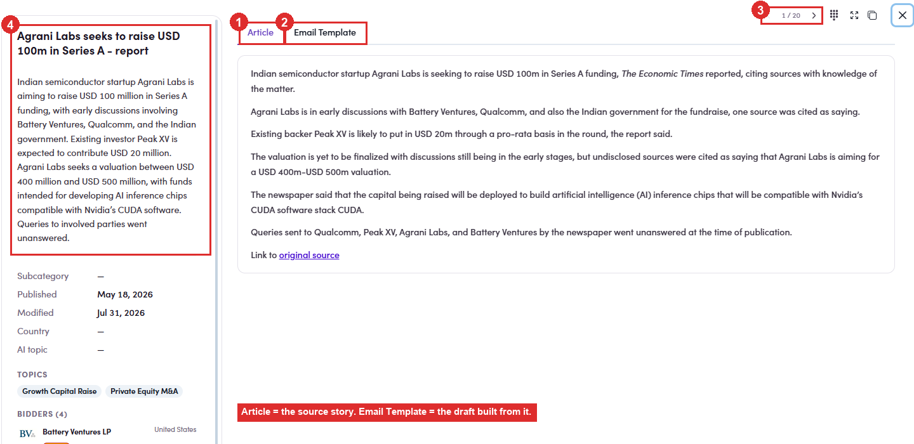
3.1.4b: ① Article, the source story · ② Email Template, the draft built from it · ③ the 1 / 20 pager · ④ the facts panel: topics, bidders, targets. - Email Template: the draft is already there. Nothing to press to make it appear. Across the top: an English / German switch; on the right three actions:
Button What it does Regenerate throws the current draft away and writes another. Use it when the angle is wrong, not to fix a word. You can edit freely once it is in compose. Copy email copies the text only. For when you want it somewhere other than Fintalent. New Email the one you want: opens compose with the draft already in it. The body keeps
{{contact.firstName}}as a variable, not a name, it resolves when the email goes out, which is why it still looks like that in the draft (3.x.1 ↗).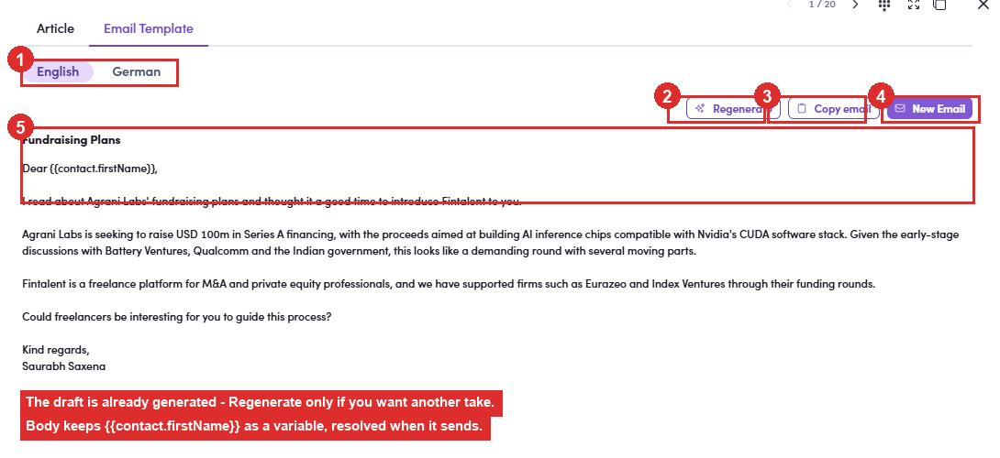
3.1.4c: ① English / German · ② Regenerate · ③ Copy email · ④ New Email · ⑤ the draft, already written, with the merge variable intact. - New Email → compose opens carrying the draft. The window arrives with From set to your mailbox, the subject filled in from the signal (Fundraising Plans), the body written out in full and your signature appended. The bottom bar has the usual 📎 attach, Snippets, Template and </> and Send.
⚠ To is empty: that is the one thing it cannot guessComing in from the Signals page there is no contact attached, so To arrives blank and you add the person yourself. Coming in from a contact's Signals column the person is already known, but check the field before you send either way: a draft this complete makes it easy to hit Send on an email addressed to nobody, or to the wrong person.
From here it is the ordinary compose window, finish at 3.2 ↗. Edit it before you send. The draft names the deal correctly but it is written by a machine; a sentence in your own words is what stops it reading like a circular.
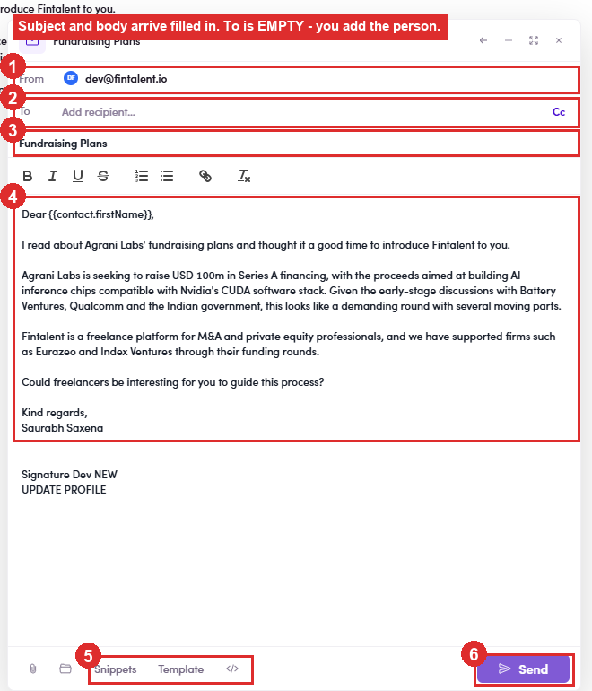
3.1.4d: ① From, your mailbox · ② To, empty · ③ subject, filled · ④ body, filled · ⑤ Snippets / Template · ⑥ Send.
Not yet covered: the same trick starting from Job Search, not walked, so nothing is claimed about it here.
Replying to someone who already wrote to you is a separate job, see Flow 4 · Answer replies.
3.2 · Compose & send (same window for all 4 ways)
The whole job here is to send a good email successfully, 4 steps:
- Check From / To / Cc. Both address fields are pre-filled: check them before sending:
- From = your own mailbox, filled in automatically from the email set up on your SDR profile. You can't change it in compose: it's set by your Admin (you only view it → Flow 1 · your account ↗).
- To = the contact's email, pre-filled from the person you started from. You can change it or add extra recipients, type an email and press Enter (each becomes a chip; the ✕ removes it).
- Cc = copy someone else: click Cc at the right of the To row → a Cc field appears → type their email and press Enter.

3.1: ① From = your profile email (view-only) · ② To = the contact's email (editable, add more) · ③ Cc = copy someone in. - Type the Subject yourself in "Add a subject" at the very top. For a new email it starts empty and does not auto-fill, even from a Template (known bug). The Send button blocks an empty subject, so you can't forget.

3.2: the subject box (red frame): type it yourself. - Write your message in the body (personalize with their role & signal from Flow 2). Want to start from a Template, drop in a Snippet, or attach a file? See Edge cases (3.x).
- Proofread → Send. It auto-logs into Conversations, your signature (Flow 1.x.5) is appended automatically, and there is no recall.
- See your sent email. The moment you send, your email is logged to the contact's Conversations. There are two ways to open it, both land on the same Conversation:
- From the list: click the contact's 💬 conversation icon (Last Contact column) → the Conversations drawer opens with your email at the top of the thread, marked "just now", sent by you.
- From the contact: open the contact and switch to the Conversations tab.

3.5: your just-sent email sits at the top of Conversations ("just now"); the right pane shows it in full.
3.x · Edge cases: write faster with Templates · Snippets · Documents
Three helpers speed up composing. For each: use it in the compose bar, and build your own from its menu page. ✅ your SDR account can create / edit / delete all three.
3.x.1 · Templates: full pre-written emails
- Use it in compose: click Template in the compose bar → Insert appends to your draft, Replace overwrites it (incl. the EN 01–05 set). Even from a Template the subject box still needs typing (3.2 bug).

Use: Template: Insert / Replace + search. - Build your own: Message Templates (left menu) → + Create New → fill Name* (how it shows in compose, e.g.
EN 06 - Follow-up), Topic*, Source Type, Subject EN / DE and body EN / DE (two rich-text editors) → Create. Edit/delete via row actions; filter by Topics.
Create: Name* · Topic* · Subject EN/DE · rich-text body EN/DE.
3.x.2 · Snippets: short reusable blocks
- Use it in compose: click Snippets → search → click = inserted at the cursor (EN | DE toggle).

Use: Snippets: search + EN/DE, insert at cursor. - Build your own: Snippets (left menu) → + Create New → Private toggle (ON = only you; OFF = shared), Name*, Type and Content English* / Content German → Create. Edit/delete by hovering the row.

Create: Private toggle · Name* · Type · Content EN*/DE.
3.x.3 · Documents & files: attachments
- Use it in compose: 📎 uploads a file from your computer; 🗂 attaches from the shared Document library (Common, Contact and Campaign filter checkboxes, Published files only).

Use: 🗂 Select Documents: shared files (Published only). - Build the library: Documents (left menu) → + Create New. Fill in Name*, then Type*, which decides the compose tab it lands under: Common, Contact or Campaign. Set Status* to Draft or Published; only a Published document can be attached. Is Star and Is Public are optional. Attach the File*, then Upload File → Create. Retire with Archived, not delete.

Create: Name* · Type* · Status* (Draft→Published) · Upload File.
3.x.4 · No email? Get in touch on WhatsApp / LinkedIn instead
Instead of email you can get in touch on another platform, straight from the actions on the platform. Both icons live on the contact's action bar (profile drawer) and in each row's Action column. A coloured icon works; a gray one means that data is missing.
- WhatsApp. Open the contact (Flow 2) → the action bar shows Send email, WhatsApp and LinkedIn → click WhatsApp. Green = a usable phone is on file → it opens a WhatsApp chat in a new tab (
wa.me/‹number›). Gray = no phone (or the number is too ambiguous to dial) → nothing happens; ask your Admin to add a phone.3.x.4: the action bar: Send email · WhatsApp · LinkedIn. - LinkedIn. Click LinkedIn (action bar, or the icon in a row's Action column). Blue = a valid LinkedIn URL is on file → it opens that stored URL as-is in a new tab (the app only checks it's a
linkedin.com/lnkd.inlink, it doesn't rewrite it). Gray = no/invalid URL → nothing happens; ask your Admin to add the URL.3.x.4: the ✉ · WhatsApp · LinkedIn icons in each row's Action column (coloured = usable).
SDRFlow 4 · View replies & answer replies 🔴
4.1 · View & answer a reply
- Open the replies: click Inbox in the left menu: one row per contact who wrote back (auto-replies / OOO land here too). Each row has two columns:
- Account: who it's from: avatar, name, email address, phone, and city / country.
- Last Email: the most recent message in that thread, shown in three parts:
- Subject (bold, top line): the email's subject (e.g. "Re: How mid-cap PE firms staff DD in 5 days").
- Preview (grey, middle): the opening line of the body, so you can triage without opening it.
- Date (bottom): when it arrived (e.g. "Jul 17, 13:11").

4.1: Inbox: one row per reply (Account | Last Email). - Spot which messages are replies, and glance at the auto chip. The clearest signal is the direction arrow next to the sender in the thread:
- ↙ inbound arrow + the contact's name = a reply from the prospect (their words), the message to read and answer.
- ↗ outbound arrow + your own name = an email you sent (e.g. "Dong SDR ↗").
Chip On What it means Your move Delivered your send Sent & delivered: the prospect hasn't opened it yet. Give it time, then follow up. Open your send The prospect opened your email (or it isn't classified yet). Warm signal: worth a follow-up. ⚠ Dropped your send The email did NOT go out. It failed to send. Send it again: this one needs your attention. Interested Call Scheduled their reply The system read the reply as a positive signal. Read it, then set the contact's Lifecycle. Out Of Office Not Interested … their reply The system's quick read of what they wrote. Read it, then set the Lifecycle. 
4.2: ① a reply = ↙ inbound arrow + a real chip ("Out Of Office"); ② your send = ↗ outbound arrow + your name; ③ your send's chip = a delivery status (Delivered · Open · ⚠️ Dropped). 
4.2 · chips: the coloured reply chips down the thread list: Out Of Office · Interested · Not Now, the system's quick read of each reply. (Your own sent rows instead carry a delivery-status chip, Delivered · Open · ⚠️ Dropped.) - Read the email, and know where it came from. Click any row → the contact opens on Conversations: the thread list is on the left, the selected message on the right. Expand all unfolds the whole exchange. Read what they actually wrote: the chip is only a hint.
What a "thread" is: one conversation = every email exchanged with that contact under one subject, grouped together. Each item in the left list is a thread; a small count badge (e.g. 2, 3 and 12) shows how many messages it holds. Click to open it, then use the › / Expand chevron to unfold every message in order.
Anatomy of a thread row (left list):- Avatar + name: who the latest message is from.
- Direction arrow: ↗ = an email you sent (e.g. "Dong SDR ↗"); the prospect's name with no outbound arrow = their reply.
- Source icon (small ✉): hover it to see where a sent email came from (see the table). A reply has none.
- Auto chip: the system's read (Out Of Office, Interested and Not Now …) → see 4.2.
- Count badge = messages in the thread and Date = when the latest one arrived.
Source What it means How to tell Direct You wrote & sent it yourself, 1:1 (Flow 3). ↗ your name, no source icon. Campaign Sent by an automated campaign sequence the contact is enrolled in. Source icon → tooltip "Campaign: [name]". Marketing Email Sent as part of a marketing email send. Source icon → tooltip "Marketing Email: [name]". 
4.3: hover the ✉ source icon on a sent email → the tooltip names where it came from (here Marketing Email: V1 …). Direct 1:1 sends show no source icon; campaign sends read "Campaign: …". Reply vs no replyA thread with an inbound message means the prospect wrote back, answer it (4.4 / 4.5). A thread that's only your own ↗ sends has no reply yet, that's a follow-up candidate (Flow 5 ↗).
4.3 · actions: the three action arrows sit at the top-right of the open message: ① Reply all · ② Reply · ③ Forward. - Decide: reply or not. If it needs an answer, reply (4.5). If it doesn't (e.g. a plain "not interested" or an auto-reply), skip replying and just classify the contact (Flow 3) so it leaves the queue.
- Click Reply: the single ↩ arrow at the top-right of the open message (circled below). It answers only the person who wrote, the normal choice for 1:1 outreach. The subject auto-fills as RE: [the original subject] (you can still edit it). (The double-arrow Reply all and the Forward arrow sit right next to it, see Edge cases.)

4.5: the Reply button (single arrow) at the top-right of the message. - What opens: a compose window with the subject already set to RE: …, the sender pre-filled in To, and the original message quoted below. It stays in the same thread.

4.6: Reply clicked: RE: subject, the sender in To, the quoted original. - Write your message → Send.
4.x · Edge cases
- Reply all: the double ↩↩ arrow (left of Reply, circled below) answers the sender plus everyone else on the thread's To/Cc. Use it only when several people are genuinely in the conversation (an assistant or colleague was copied). Same compose window as Reply, but the To line is pre-filled with every email address in the thread, so your one reply goes out from your mailbox to all of them at once. Hover the button to preview the full recipient list (e.g.
To: oemer.gueven@fintalent.com, dz@dzadvisory.de), and remove anyone you don't want before you send. Like Reply, the subject auto-fills as RE: [original subject].
4.x.1: hover Reply all (leftmost of the three) → the tooltip previews every recipient (To: tien@fintalent.com, tin@cyberhq.net) before you send. - Forward: the ➡ arrow (right of Reply, circled below) sends this message on to someone new. Same window, but To starts empty for you to type the new recipient; the original message is carried in the body. The subject auto-fills as FW: [original subject].

4.x.2: the Forward button (arrow pointing right), rightmost of the three. - Filters. The Inbox bar carries the full set; + Add filter opens Customize Quick Filters (pin filters, Reset defaults) to build your own quick bar. Use it to slice big queues (only DACH, only CFOs). Full Inbox-filter reference → Flow 8.3 ↗
Filter What it narrows · how to use Lifecycles by contact stage, same ✓/✕ tool as 2.x.1 Contact Classification contact type: Talent · Client · Other (each ✓/✕; Has/No radios + Paste list) Owner which teammate owns the contact, pick yourself to see only yours Work Experience career facts, the power filter (fields below) Countries · Cities the contact's location, pick a geography (DACH, UK…) + Add filter Customize Quick Filters, pin/unpin which filters show on the bar (Reset defaults) Every dropdown works the same: each value has a ✓ include (keep only these) / ✕ exclude (hide these); Has / No … radios catch records with/without any value; Paste list takes one value per line; several ✓ together = OR.
Work Experience filters by career, not just the contact record. A top Match any (OR) / Match all (AND) toggle decides whether a person must meet one or all of: Company type (Sponsor, Corporate, Portfolio), Email validity (Valid, Invalid, Validating, None), Currently / Past, Position (job title) and Company (or Has / No linked company, plus + Filter by linked company: city, country, bucket, classification), Company Description and Company country / city. E.g. Work Experience → Company type = Sponsor took a 27-reply queue to 25 (every remaining row a sponsor firm).

4.x.3: the Work Experience filter inside Inbox; + Add filter pins more. 
4.x.3 · panel: the full Work Experience panel: Match any/all · Company type · Email validity · Currently/Past · Position · Company/linked · Description · country/city. - The orange "In Queue" tag. A message tagged In Queue is accepted but not sent yet (waiting in the send queue). It clears to a normal sent message once it goes out. It just means "on its way", don't re-send.

4.x.4: the orange In Queue tag on a message (circled): accepted, waiting in the send queue, not sent yet. - Show / hide columns. The gear ⚙ (top-right, next to Simple / Full) opens Column Settings, tick the columns you want in the Inbox, untick the rest (search the list, or Reset to defaults). Account stays locked on; expand it to choose which fields show inside that cell (Phone, Location, LinkedIn, Lifecycle, Contact type, Lists and Labels…). Handy for trimming a busy Inbox down to just what you triage on.

4.x.5: the gear ⚙ Column Settings: tick / untick columns, expand Account to pick its in-cell fields, or Reset to defaults.
4b · Schedule a call (spot it in your replies → book → reply with the link → manage)
4b.1 · Spot the call in your replies
- Find the ones that asked for a call. There are four ways in, not one. The signal is almost always a reply; the difference is where you go looking for it.
The call came up in… Where you look Any reply, all channels at once Inbox in the left menu → Lifecycles filter → Call Scheduled. The widest net, and the usual starting point. A reply to one marketing email Open the ME → its own Inbox tab. It has its own filter bar: Last replied · Lifecycles · Contact Classification · Owner · Work Experience, so you can narrow to Call Scheduled within that one send. URL carries &marketingEmailTab=Inbox.A reply to one campaign Same shape: open the campaign → its Inbox tab → same filters. A direct 1:1 message, or no reply at all Contacts → Lifecycles filter → Call Scheduled, then open the person. Booking proactively? Skip the filter entirely and go straight to the contact, nothing downstream requires a reply to exist. The per-ME and per-campaign inboxes are the same screen scoped down. Use them when you are working one send and do not want the rest of your replies in the way; use the global Inbox when you are clearing the day.
Unresolved: what the ME Inbox Lifecycles filter actually readsThat tab lists Account and Last Email and its search box says “Search contacts by keyword”, which points at it filtering the contact’s lifecycle, same as the global Inbox. There is a view that it filters each reply’s lifecycle instead. Which would make it a different tool entirely. Not settled (the dropdown would not open long enough to capture the request). Do not build a habit on this until somebody confirms it. - Two chips share the name: know which one you are looking at. This trips people up, because both say much the same thing at different levels:
Chip Sits on Means Scheduled Call (dark) a single reply, next to the sender's name in the thread the system read that message and judged it to be about arranging a call. This is the one that tells you what to do. Call Scheduled (green) the contact, in the Lifecycle Stage column where this person sits in the pipeline. This is what the Lifecycles filter searches. So you filter on the contact's lifecycle to build the worklist, then read the reply chips inside the thread to find the message that actually asks for something.
The reply chip can be buriedA thread collapses to its most recent message. A conversation showing No Categories at the top can still hold Scheduled Call replies further down, expand the thread before deciding nothing is there.
4b.1.2: two replies the system tagged Scheduled Call, inside a thread whose own chip reads No Categories. - Open it and read what they are asking for. The chip only says “this is about a call”. It does not say which call, or what they want doing about it. Real example:
What a Scheduled Call reply looks like“Apologies for the short notice — our investment committee moved to Thursday morning, so I need to shift our 10am call. Could we do Thursday 4pm CET instead, or alternatively Friday 9am CET? Same agenda, and please keep Katharina on the invite…”
Read closely: that one is a reschedule, not a new booking, and it names two options in their timezone. Sort out which you are dealing with before touching the Meetings screen. A reschedule goes through 4b.x.1 ↗, not through 4b.2.
Clicking the row opens the contact on Conversations, with Meetings as the tab beside it, carrying a count, so you can see whether this person is already booked before you read a word.

4b.1.3: the part that decides what you do next: they are moving an existing call, and offering two slots in CET.
4b.2 · Book the call
- Two ways in, and they are not identical. The difference is who fills in the participant:
From How Participant email The contact: any row in a list, Contacts, or a ME's People tab the 📅 icon in the Action column, “View meetings with <name>” → + Create meeting filled in already, with a picker if they have several addresses Meetings in the left menu + Create meeting, top right empty and required, you type the address yourself Prefer the contact route when you are answering a reply. It carries the right address for you, and it is one click from the conversation you are already in. The Meetings route is for when you have the address in your head and not the contact on screen.
Typing the address on the Meetings route still resolves the person: the title comes back as “Fintalent call — <their name>”.
The contact route is two clicks, and the second one catches people out. The calendar icon does not open the booking form. It opens the contact, on its Meetings tab. The form is behind + Create meeting in the top right of that panel:
- 📅 on the contact's row → the contact opens on Meetings.
- + Create meeting, top right, or the Create meeting link in the middle when the contact has none yet. Both open the same form.

4b.2.1: ① what the 📅 icon opens: the contact on its Meetings tab · ② + Create meeting. The button that opens the form. The Meetings route is one click. Meetings in the left menu, then + Create meeting in the top right, the same corner as on the contact panel, so the two routes feel alike once you know them.

4b.2.1: the other way in: ① Meetings in the left menu · ② + Create meeting, which opens the same form. One difference from here: Participant email arrives empty, and it only accepts an address that already belongs to a contact, see 4b.x.3 ↗.

4b.2.1: the Meetings route: ① Participant email empty and marked required · ② Date & time · ③ the title, waiting to be resolved from the address. - Fill the form. Only one field can stop you.
Field Required What to do with it Participant email yes Prefilled on the contact route. If they have several addresses, the picker decides which one gets the invite. Date & time yes The form says it outright: “the meeting cannot be created without a start time”. Confirm starts disabled, but do not trust it to stay that way: see 4b.x.9 ↗. Timezone prefilled Defaults to yours, not theirs. Read it again if you agreed a time in their local clock, see 4b.x.2 ↗. Duration 30 minutes Change only if you agreed otherwise. Title · Notes optional The title is prefilled and is what shows in their calendar. Notes are for you. 
4b.2.2: ① Date & time, the one field that blocks you · ② the timezone it will be read in, yours, not theirs. - Save, and copy the link before you close the panel. The confirmation shows the meeting, the full Zoom join link, and a Copy join link button. Nothing has been emailed to anyone.
Closed it too soon? The link is not lost: Copy join link is on the meeting's row for as long as the booking exists (4b.4 ↗).

4b.2.3: the link is generated for you; the only thing to do here is Copy join link.
4b.3 · Reply to their email with the details
- Answer in the same thread. Go back to the reply that asked for the call and use the ↩ reply arrow on it, exactly as in Flow 4 ↗. Keeping it in-thread is what makes the booking make sense to them.
The compose window does not carry the linkWhether you reply in the thread or use Send email from the meeting row, the message opens with the participant filled in, your signature, the quoted original, and no join link. Paste it in yourself, or they get a confirmation they cannot act on.

4b.3.1: ① the subject carries RE: and the original wording, which is what keeps it in their thread · ② Send, once the link is in. - Write the three things they need: the date and time with the timezone spelled out, the duration, and the join link. Time is the part that goes wrong, “Friday 31 July, 15:00 CET (08:00 UTC)” is worth the extra seconds.
Doing this often? Build it once as a Snippet with the fixed wording and paste the link into it, 3.x ↗.

4b.3.2: ① the body arrives with your signature and nothing else, paste the link here · ② then Send.
4b.4 · Manage booked calls
- Where to look, depending on what you are asking:
You want… Go to Every call you host Meetings in the left menu. Tabs All · Upcoming · Completed · Cancelled, plus search and filters by Host · Contact · Activity Date. The Contact filter is the quick way to pull every call with one person without leaving the page. Which contacts have a call booked at all Contacts → Add filter → Has meeting (under OUTREACH, beside Campaign and Marketing Email). Turns the contact list into “everyone with a booking”, the reverse of the Contact filter on the Meetings page. One contact's calls the 📅 icon on their row → the contact opens on its Meetings tab, same four sub-tabs, scoped to them. Just the number, without opening anything the small badge on that same 📅 icon. No badge means no calls. The Meetings tab in a contact you already have open it sits next to Conversations, with its own count. To cancel the meeting's row → ⋮ → Cancel meeting. 
4b.4.1: how you narrow the list: ① the four tabs with their counts · ② search by keyword · ③ filters by Host · Contact · Activity Date. - What each control on a row does. Four of them, and the first two are not the same thing:
Control Opens Use when  Join meeting
Join meetingthe ordinary join link, the same one the contact got you want to see what they see, or you are joining a call somebody else hosts. You may land in the waiting room.  Start as host
Start as hostthe host start link, carrying a host token this is the one to use on the day. It opens the room with host rights, admitting people, recording, ending the call. The token is short-lived, so start it near the time, not hours before.  Copy join link
Copy join link: sending or resending the link to the contact.  ⋮
⋮Send email · Cancel meeting the only two row actions. There is no edit. If you take one thing from this sectionSend the contact the join link. Open the call yourself with Start as host. Handing out a host link would let whoever holds it run your meeting.
4b.4.2: the four, left to right: ① Join meeting · ② Start as host · ③ Copy join link · ④ ⋮, which holds Send email and Cancel meeting. - Cancelling, and what it destroys. ⋮ → Cancel meeting asks first, and the dialog is worth reading: “This removes the Zoom meeting and its join link for everyone.”
Confirm and the booking leaves Upcoming and lands in Cancelled. It is not deleted, so the history stays. The contact is not told. If a real person was expecting that call, the cancellation email is yours to write.
The tab counters do not refresh on the spot, they still read the old numbers until you reload the page. Do not take that as the cancellation having failed.

4b.4.3: read the warning, then Cancel meeting commits it. Keep meeting backs out.
4b.x · Edge cases
- They ask to move it, the whole sequence. This is the common one, and there is no reschedule button, so it goes:
- Their reply arrives asking to move or drop the call.
- ⋮ → Cancel meeting on the old booking. The old link is dead from that moment.
- New time agreed? Create meeting again, and it mints a completely new Zoom meeting. Checked in practice: cancelling meeting
…630530and rebooking produced…971737, a different number and a different password. - Reply in the same thread with the new link, and say plainly that the earlier invitation no longer works. Their calendar still holds the old one.
- No new time? Cancel and leave it. The contact keeps the Call Scheduled lifecycle until somebody changes it, so fix the stage by hand or the inbox filter will keep offering them to you.
- The form warns you before you start. Your account has no Zoom. Meetings are created on a Zoom account tied to you as the host. If nobody has linked one to your admin record, the form says so in a banner the moment it opens, and Create meeting stays greyed out no matter what you fill in:
What you will see“Your account has no Zoom user linked yet. Ask an admin to set your Zoom user ID before scheduling meetings.”
There is nothing to fix on your side, no setting, no retry. Ask an Admin to set your Zoom user ID. Meanwhile, either ask a colleague who is set up to host the call, or send a link from your own Zoom by hand. Know what that costs you, though. A booking made outside Fintalent will not appear on the Meetings page, it will not show on the contact, and it gives you no Start as host button.
Verified on a real SDR account with no Zoom user (SDR Internal Fintalent). Note the block is a guard, not a failure: the form refuses up front rather than letting you fill everything in and erroring on save.

4b.x.2: ① the Zoom warning, shown before you type anything · ② the second guard from 4b.x.3 ↗ · ③ Create meeting, greyed out · ④ the account this was reproduced on. - The address has to belong to a contact. On the Meetings route you type the address yourself, and typing one the system does not recognise produces a second guard:
What you will see“No matching contact found for this email. A contact is required to create a Zoom meeting.”
So the Meetings route is not a free-text shortcut. It is a search. A booking always hangs off a contact record, which is what makes it show up on their Meetings tab and behind the calendar icon on their row.
If the person is not a contact yet, create the contact first, then book from their row, the contact route (4b.2 ↗) sidesteps this entirely, because the participant is already resolved. Watch for it when the same person writes from a second address: the address on the thread may not be the one on their record.
- Every row shows the time twice, and the second one is the safety net. First line: the start in the meeting's timezone (31 Jul 2026, 15:00 GMT+7). Underneath, in orange, the same moment in GMT+0. Since the create form defaults to your timezone and not the contact's, the GMT+0 line is how you check you booked the hour you actually agreed.
- A contact with several addresses. The invitation follows whichever address is selected in Participant email. If the thread you are replying to runs on a different address, change it on the form, afterwards the only fix is cancel and rebook.
- The contact has several addresses: which one gets the invite. On the contact route the Participant email field is a picker, not a label: it opens with the address on the contact record already chosen, and the chevron on the right drops down the rest.
Check it whenever you are answering a thread. A contact can hold a work address, a personal one and a platform sign-up address, and the one the conversation is running on is not always the one the field defaults to. Pick the address they actually wrote from. The invitation goes to the selected one and nowhere else.
There is no changing it afterwards. Wrong address means cancel and rebook ↗, which mints a new link.

4b.x.6: the picker, opened on a contact who holds two addresses. The first is already chosen; the second is what you came here for. - Two ways to read the list, and the calendar shows what the table hides. Top right of the Meetings page sits a List view / Calendar view toggle. Calendar view adds Month / Week and a Today button, and answers “what does my week look like?” far quicker than the table.
Cancelled bookings appear struck through rather than hidden, so a slot you gave up is still visible in its place, useful when a contact asks what happened to the call you had agreed.
The choice sticks: come back to Meetings later and it opens in whichever view you left it in.

4b.x.7: a cancelled booking stays in its slot, struck through, instead of disappearing. - The booking does not email anybody, at any point. Not on create, not on cancel. Every message the contact receives is one you wrote. It is the single most common way a call goes wrong.
- 🐛 The Create button can switch on while the start time is still empty. Reproduced every time. Open the form, fill the participant, then touch the Date & time box without finishing it, type the date but not the time, or click in and back out. Create meeting goes from greyed to clickable while the field is still blank, and the red “Required — the meeting cannot be created without a start time” line is still on screen underneath it.
Click it and the request goes out with nothing in the time field. What comes back is not a friendly message. It is the raw server error:
BAD_USER_INPUT: Variable “$input” got invalid value null at “input.startTime”; Expected non-nullable type “FintalentDate!” not to be null.Nothing is booked: the meeting count does not move. Read the date box, not the button. If the field looks empty, it is empty, whatever the button is doing.
- 🐛 “No matching contact found” on someone who is a contact. 4b.x.3 ↗ covers the honest version of this guard. The address genuinely belongs to nobody. This is the other version: the address is on a contact record and the form still refuses it.
Worked example:
dong@cyberhq.net,tin@cyberhq.netandlong@cyberhq.netall sit on real contacts and all three came back “No matching contact found for this email” with the button locked. A contact created minutes earlier was matched instantly. Cause not established: it is with the backend.What to do meanwhile: stop fighting the Meetings route and book from the contact instead (4b.2 ↗). The 📅 icon on their row carries the address across for you and never asks you to type it, so this guard never fires.
SDRFlow 5 · Follow up on silent prospects
- Open your assigned list: left menu → Segments (Lists) → open your list.
5.1: your assigned lists; click one to open it. - View the contacts: the members table. Look at the Last Contact column (far right). Each row has a 💬 icon next to its date, the follow-up radar.
5.2: the members table; the Last Contact column with its 💬 icons is on the right. - Pick who's overdue: click the Last Contact header to sort (oldest first), then read the 💬 aging icon next to each date. Its colour tells you how long since you last touched that contact, so you work the coldest first. The little red dot is a "due" flag that clears the moment you make contact.
💬 icon How old What it means Your move  grey
grey≲ 2 weeks Fresh, you contacted them recently. Leave it for now. 💬 yellow ~2–4 weeks Coming due: the gap is opening up. Line it up for a nudge.  red + dot
red + dot≳ 1 month Overdue, waited the longest; the red dot is a "due" flag on the icon. Follow up first; the dot clears once you make contact. 
5.3: 💬 icons shading gray → yellow → red as Last Contact ages. - Read the context. Click the 💬 icon on that row → a conversation-first drawer opens with the last thread on screen. Read the exchange to confirm they haven't replied yet (that's what "follow up" means) and to pick your angle.
5.4: 💬 clicked: the last thread on screen (New Email · ↩ reply · 1/N pager). - Nudge them. Then either ↩ reply to the last email in that thread (keeps the context), or click New Email for a fresh angle. Sending resets Last Contact → the row drops down and the 💬 turns gray. Use the 1/N pager (top right) to step to the next contact without going back to the list.
- 2–3 unanswered nudges → label Not Now / Not Interested (Flow 3) so they leave your rotation.
| 💬 state | Meaning | Do |
|---|---|---|
| Gray, no dot | Recent (~under 2 weeks) | Nothing yet |
| Yellow + dot | ~2–4 weeks silence | Plan the nudge |
| Red + dot | ~A month+, overdue | Click & follow up now |
SDRFlow 6 · Manage a campaign
6.1 · Create a campaign (folder first)
Campaigns live inside folders. So, unlike a Marketing Email, which you create directly, you create a folder first, open it, and only then create the campaign.
- Open Campaigns. Left menu → Campaigns. The list of campaigns opens, with the folder rail on the right.
- Create a folder. Click + Create Folder (top-right) → fill Owner (usually you), Name (required) and Description → Create.

6.1.2: the Create Folder form: ① Owner (here: you) · ② Name (required) · ③ Description · ④ Create. - Open your folder. You land inside the new folder: it's highlighted in the right-hand folder rail. (Come back to it any time by clicking it in the rail; rename it later via its ⋮ menu, 6.x.3 ↗.)

6.1.3: inside your folder: ② the folder is selected in the rail · ① the + Create Campaign button appears. - Create the campaign. Click + Create Campaign: the button only shows inside a folder; that's why the folder comes first.
- Name it and pick the timezone. A single form opens
with three things on it and nothing else: the name (it arrives pre-filled with
New Campaign, so type over it), the timezone the sending clock runs on, and
Create. The ✎ next to the name just puts your cursor in the field.

6.1.5: the whole form: ① name (pre-filled New Campaign) · ② timezone · ③ Create. Neither one is locked in. You can rename the campaign later from its header (6.x.15 ↗).
- Create, and you land in the campaign. There is no second
wizard page and nothing to skip. Create drops you straight into the new campaign, on the
Steps tab, with the tab bar reading Steps · People · Data Health · Timeline.
The campaign is a Draft with no steps and nobody in it, so the two jobs waiting for you are
6.2 · the sequence
and 6.4 · the people.
Two tabs are missing at this point and that is normal. Inbox and Preview only appear once the campaign has a step and some people in it.
6.2 · Build the sequence (steps)
A campaign is a list of steps. Each step is one email with a timing (send right away, or wait N days) and one or more variants (A/B). The step editor is identical to a Marketing Email step.
- Steps tab → + Create new step.

6.2.1: empty Steps tab → + Create new step. - Write the step. Every field of the editor, and what goes in it:
# Field / control What it does · how to write it 1 Subject The email's subject line. Type it plainly, and you can personalize it with variables via the { } icon (2). 2 { } Inserts a variable (merge field) into the Subject, e.g. {{contact.companyName}}. Details: 6.x.8 ↗.3 CC Copy someone on every send of this step, click CC, an Add cc field opens. 4 Language (EN / DE) The flags switch between the English and German version of this step, write one per language you send in. 5 Select an email template Yes, templates work here, prefill the whole step from a saved template instead of writing from scratch. Details: 6.x.7 ↗. 6 Formatting toolbar Rich text: H1/H2, font & size, B/I/U/S, quote, lists, indent, colour, link, clear-format. 7 Body The message itself. Variables (9) and Snippets (10) both work in the body; write short, personal, one clear ask. 8 Force Update Only matters when editing a step later, tick it to push your edit onto previews already generated. Details: 6.x.12 ↗. 9 Variables Yes: insert merge fields ( {{contact.firstName}}…) that fill in per contact. Details: 6.x.8 ↗.10 Snippets Yes: drop in a saved reusable block (enables once your cursor is in the body). Details: 6.x.9 ↗. 11 Create / Save Create saves a new step; re-open a step later and the button reads Save. 12 Upload files Attach files to the email; each attachment shows with an ✕ to remove. Details: 6.x.10 ↗. 13 Signature Appends your email signature (set up in Flow 1.x.5). 
6.2.2: the step editor with every field numbered 1–13 (same numbers as the table). - The step lists as Step 1 - Day 1 with its timing ("Right away") and variant A.

6.2.3: Step 1 · Day 1 · Right away · variant A. The header carries a running day count, not just the delay. Right away is Day 1; a step set to Wait for 10 days after a Day 2 step reads Step 3 - Day 12. Read the last step’s day to see how long the whole sequence runs.
The Steps badge counts every step in every branch. Once the campaign has sidesteps the badge exceeds the main sequence, 2 main steps plus 4 branches reads Steps 8. That is correct, not a miscount (6.x.2 ↗).
- Timing. Click the timing pill to set Deliver after a delay (Days). 0 = right away; N = this step goes out N days after the previous one, that's the "Day X" label on the step.

6.2.4: Deliver after a delay: Days = N (0 = Right away). - Add follow-ups with + Create new step. A follow-up usually waits a day or two, e.g. Step 2 - Day 2 and Wait for 1 day. Build the whole sequence this way.

6.2.5: a 2-step sequence: Step 1 Right away, Step 2 Wait 1 day.
Where to click once the sequence exists, everything lives on the Steps tab:

Two campaign-only extras: A/B variants and Sidesteps, are in Edge cases (6.x) ↗.
6.3 · View campaigns (the list)
Left menu → Campaigns lists every campaign, grouped into folders (right rail). The top tabs filter by status: All, Scheduled, Draft, Running, Finished, Paused and Archive. Each row shows the Enabled toggle, Total Steps, People, Open / Reply / Bounce rates, Progress, Delivered and Last run.

6.4 · Add and remove people
The People tab is the campaign's recipient list. It carries the same filter bar as your lists plus two filters only campaigns have: Done (finished the whole sequence) and Skipped.
Handed a campaign that already has people and told not to add more? Skip straight to 6.5 · Preview and just work the contacts you were given (6.x.6 ↗).
Adding people
- Open the campaign and move to the People tab. The tabs run
along the top of the campaign, and People is the third one, between Steps and Preview.
The number beside it is how many people are in the campaign at the moment, so on a campaign you have just
created it reads 0.
Once you are on that tab, the button you want is + Add contacts, over on the right-hand side, level with the search box. It is the only purple button on the screen.
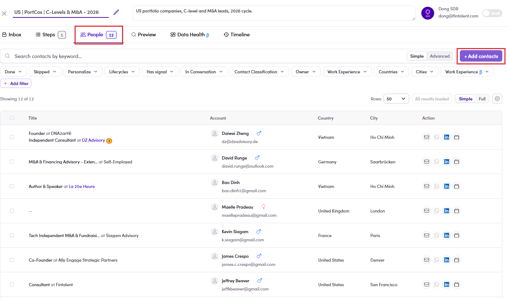
6.4.1: the People tab in the tab bar, and + Add contacts on the right. - You land on the Contacts page, and it arrives already
filtered. The button does not open a picker inside the campaign. It moves you to Contacts,
which is every contact across the lists you have been assigned, and on the way it switches on one
filter chip for you: Campaign : No.
That chip is the whole point of the screen. Everything you can see is somebody who is not in a campaign yet, because a contact belongs to one campaign at a time. The count at the top, next to the word Contacts, is counting only those people.
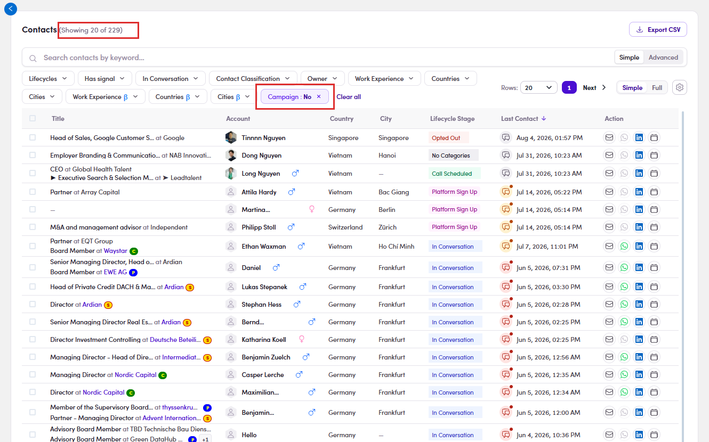
6.4.2: the Campaign : No chip is already on when you arrive, and the count at the top reflects it. Do not clear that chipClearing it, or clicking Clear all, puts back the people who cannot be added anyway. All you get is a longer list and a better chance of picking the wrong person.Add filters on top of it instead. That is how you narrow 229 contacts down to the group you actually want in this campaign: country, seniority, work experience, whatever the campaign is aimed at. The chip row stacks, so Campaign : No stays on while you filter. See Flow 8 · Using filters ↗.
Filters you set on your last visit to Contacts are still on. Read the whole chip row before you trust the count.
- Find your people and tick them. Same tools as Flow 2 · Find a target contact ↗. Tick the rows, or tick the header box to take the whole page, then click Add to campaign on the action bar.
- The drawer: pick the campaign, then pick who actually gets mailed.
It opens headed Add N contacts to campaign and splits in two.
Left: Choose campaign. Your campaigns, each showing owner, status and how many people it already holds, with a search box and a Status filter. There is an 👁 on each row to look at one before you commit. Tick exactly one.
Right: the people, sorted into four groups. A contact can hold several addresses and a campaign sends to one address per contact, so the drawer sorts them by how good that address is:
Group What is in it Ticked for you? Valid a verified address. These are the ones you want. Yes Missing + Invalid no address at all, or one that failed validation. No In campaign already in another campaign, so they cannot join this one. No Platform Signup only the address they signed up to the platform with. No The line along the bottom spells out what it left alone, for example Not ticked by default: 5 Missing + Invalid · 15 Platform Signup. Nothing stops you ticking those groups by hand; just know you are choosing to mail an address the system is not confident about.
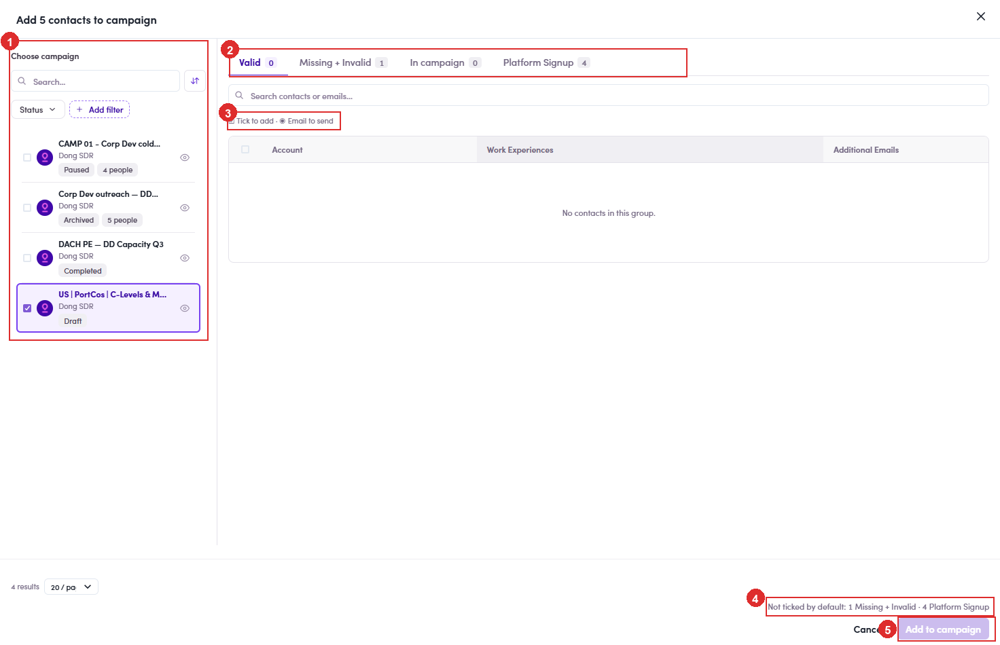
6.4.4: ① Choose campaign, tick one · ② the four groups · ③ the tick adds them, the dot picks which address · ④ what was left unticked · ⑤ Add to campaign. In campaign is usually empty, and that is the filter's doingBecause step 6.4.2 already filtered out everyone who is in a campaign, this group normally reads 0. It fills up when you clear that chip, or when you reach the contact list some other way. Either way the rule is the same: they cannot be added. To move one of them, use Move to other campaign from their current campaign instead (6.x.17 ↗). - Click Add to campaign. They appear on the People tab and
the campaign's People count on the list goes up to match.
The button stays greyed out until both halves are answeredYou need a campaign ticked on the left and at least one person ticked on the right. Miss either and the button simply does not respond, with no message telling you which half is missing. If it looks dead, check the left panel first: that is the half people forget.
Removing people
- Go to the People tab and tick the people you want out.
As soon as anything is ticked, an action bar appears above the table. It shows what you have selected on
the left, and what you can do with them on the right. The one you want is Remove from campaign.
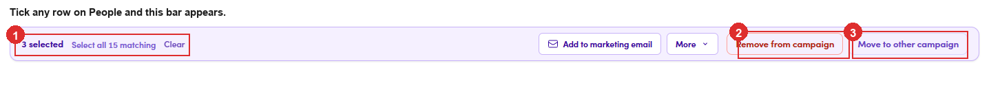
6.4.6: tick the rows on the People tab, then Remove from campaign. - Click it, and they are out straight away. Nothing asks you to
confirm and no message appears afterwards. The only sign it worked is the count: Showing 15 of 15
becomes Showing 12 of 12, and the number on the People tab follows.
One click, no undoIt removes everyone ticked, and there is no way back except adding them again. Read the count on the action bar before you click, above all after using Select all N matching, which reaches past the rows you can see.

6.5 · Preview, personalize & review
Before the campaign runs, review what every contact will actually get on the Preview tab, the campaign's review gate, exactly like a Marketing Email's.
- Open the Preview tab → click a contact on the left. The right pane loads that contact's header (name, email and title & company and quick-jump icons) with every step of the sequence below it as collapsible rows, Step 1 - Day 1, Step 2 - Day 2, …

6.5.1: ① pick a contact (left) · ② every step of the sequence for that contact (right). - Expand a step and read it. Each row opens into the exact email that contact will get, merge fields resolved (“Hi Long Nguyen,”, their real name, title, company). Read every step the way the prospect will.

6.5.2: an expanded step: the resolved email in a full editor. - Personalize a step for this one contact if it needs it. The expanded step is a full editor, so type your personal line straight in, then click Save (top-right). A ✨ Personalized icon appears on their row and the variant is tagged ✨ Personalized; everyone else keeps the standard copy. (Editing works while the campaign is Draft / Scheduled / Running, a Finished campaign's preview is read-only.)

6.5.3: type a personal line just for this contact (highlighted) → click Save. 
6.5.3: after Save: the contact's row gets the ✨ icon and the variant is tagged ✨ Personalized. - Mark the contact done, or skip. Don't want a step (or the whole sequence) to go to this contact? Each step row has a Skip button, and Skip All (top-right) skips every step, skipped contacts show under the Skipped filter (what Skip actually does → 6.x.13 ↗). When their steps are reviewed, click the green ✓ on their row → confirm “Done this contact?” → the row shows a (Done) tag. Made a mistake? The ↺ undo icon asks “Undone this contact?” and clears it. Track progress with the Personalize / Done / Skipped filters (top-left). Once a contact replies, each step also carries their reply-category chip (e.g. Not Interested).

6.5.4: the ✓ asks Done this contact? → the row gets the (Done) tag. 
6.5.4: the ↺ undoes it (Undone this contact?).
6.6 · Schedule & run

6.7 · The Email Queue
Once the campaign is running, the Email Queues tab holds every queued send. It uses the same three tabs as a Marketing Email: In Queue, Delivered and Cancel, with All holding the lot. The columns are Subject, Content, Status, Attachments, Sent Date and Created, and you can filter by Sources, Expected Run Date or Steps.

Heads-up: as with Marketing Emails, the SDR Email Queues list can be slow or show 0 / “Couldn't load” even when the campaign has already delivered. If it looks empty, refresh, or confirm via the campaign Inbox (6.8) and the contact's Conversations.
6.8 · Verify: Conversations & the campaign Inbox
Every campaign has its own Inbox tab, the replies it pulled back, categorized by lifecycle down the left (Prospect, Interested, Not Interested, Out Of Office, Bounced / Dropped, Open and Click…). It's your Flow 4 inbox ↗, scoped to this campaign. New replies also pop up under the 🔔 bell (top-right), the Campaign Notifications feed (6.x.14) ↗.

Each send is also written into that contact's Conversations with a status chip (In Queue → Delivered → Open → Bounce), exactly like a Marketing Email; see Flow 7 · 7.7 ↗.
6.8a · Find who bounced / dropped, and fix it
A bounce / drop means that contact never got the email. Check for them after every run: step by step:
- Spot it on the list. On Campaigns, read the Bounce/Dropped Rate column, anything above 0% (count in brackets) means failed sends inside.

6.8a.1: the Bounce/Dropped Rate column on the campaign list. - See exactly who. Open the campaign → Inbox tab → click the Bounced / Dropped category (left rail). The filter applies and everyone listed is a failed send.

6.8a.2: ① Inbox tab → ② Bounced / Dropped → ③ the filter applies → ④ everyone here failed. - Fix & re-reach. For each failed contact: open their profile and get the email address corrected (flag it to Admin / Ops if you can't edit it), then reach them another way: a 1:1 email (Flow 3) ↗ to a working address, or WhatsApp / LinkedIn (3.x.4) ↗. Once the address is fixed, Admin / Ops can re-add them to the next run.
6.9 · Then: bounces, drops & hot replies
- Replies: read & answer them via Flow 4 · View & answer replies ↗; set the lifecycle so the campaign stops chasing people who said no.
- Bounce / Dropped? that address failed: find who and fix it step by step in 6.8a ↗, then reach the person another way with a 1:1 email (Flow 3) ↗.
- Hot reply? book the meeting: the reply is the point of the whole sequence.
6.10 · Label the replies, and know which labels stop the sending
- Two different labels, and only one of them stops anything. This trips people up constantly:
Label Sits on Set by Category (the chip on a reply) a single reply, and on the recipient inside this campaign the system reads the message and guesses; you correct it by hand Lifecycle Stage the contact, across everything always you (Flow 4 ↗) - The twelve categories, and the three that matter. Read straight off the API: a recipient can hold any of 12, an individual reply any of 11 (the same list minus Unknown).
Group Categories Effect on sending Stops the sending Opted Out · Not Interested · Do Not Contact No further mail goes to this person. Three labels, that is the whole list. Reporting only Call Scheduled · Interested · Not Now · Out Of Office · Left The Company · Email Updated · No Categories · Not Responded · Unknown Sending continues. They describe what happened; they do not hold anything back. Where this comes from: the twelve / eleven values are read straight off the API. The three that block are named in the code as a constant,
MarketingEmailRecipientBlocklistEnforcementOptions = [OptedOut, NotInterested, DoNotContact], and the same three appear in Fintalent's own feature documentation. Not proven by a send test of my own; proving it would mean mailing a real contact.The three look exactly like the other nineNothing in the interface marks them out, same chip, same colour, same list. So the label that quietly keeps mailing someone who asked you to stop is one row away from the one that stops it. Before you label a negative reply, decide which of the two you mean: “not now, try later” is Not Now and keeps them in rotation; “stop emailing me” is Opted Out or Do Not Contact and takes them out. - Out Of Office is not a rejection. It is the most common auto-reply and it is reporting-only, so the person stays in the run. Which is right, they are just away. Do not upgrade it to Not Interested to clear it off your screen; that is a different meaning and it is permanent.
- Nothing reminds you. Categorising is entirely manual: no prompt, no badge, and no count of how many replies are still unlabelled. If you do not work the inbox deliberately, an opt-out can sit there unread while the next send goes out.
Practical habit: after every send, open the Inbox and clear it to zero before you do anything else. Filter the category rail to No Categories to find what nobody has touched.
There is also no bulk categorise: thirty auto-replies is thirty separate actions. Sort by the auto chip first so the identical ones are together.
- Where you do it. Open the Inbox tab of the campaign, pick the category rail on the left to filter, click a reply, set its category. The same reply also appears in your own Inbox (Flow 4), labelling in either place is the same record.
6.11 · When the campaign is finished
- The system decides “Finished”. You decide “done”. They are not the same moment, and the gap between them is where the work actually is.
What it means Finished (the status) every queued email has left. Progress shows a full bar and a green ✓, the queue has nothing in In Queue. This is about mail, not about outcomes. Done (your call) every reply has been read, answered and labelled; every bounce has been chased another way; every hot lead has been moved on. Nothing in the product marks this: you do. - The closing checklist. Run it before you stop looking at the campaign:
Check Where What you want to see Nothing still queued Email Queue → In Queue 0. Anything left will still go out. Delivered matches what you sent the row's Delivered vs the people you reviewed the same number. A gap means someone was skipped: find out who. Bounce / Dropped cleared the row's Bounce/Dropped Rate either 0, or every one of them chased another way (6.9 ↗). No unlabelled replies Inbox → category rail → No Categories empty. Opt-outs actually recorded the same rail anyone who asked to stop carries Opted Out or Do Not Contact, not a softer label. Hot replies moved on Lifecycle Stage on the contact Interested / Call Scheduled set, and the meeting booked (Flow 4b ↗). - Finished does not mean frozen. Replies keep arriving after the last email lands, often for weeks. The Inbox stays live, so keep checking it after the status has moved on. A blast that reads Finished on Monday can still produce a meeting on Friday.
- Read the rates once at the end, and read them honestly. A blank rate means nothing was sent. 0% means it went out and nobody opened or replied. That is a content result, not a delivery one, and it is the number worth raising before the next send. Reply Rate is the one that matters; Open Rate mostly tells you about the subject line.
6.x · Edge cases
- A/B variants. Under any step, + Add variant creates an alternative email (A, B, …) for that step, so you can test subject or copy. Each contact receives one of them (on the Preview the step reads “A random option will be sent”), so you can test subject / copy.

6.x.1: Step 1 with two variants A and B. The split is a weighting, not a coin toss. Each variant carries a percentage weight, and the weights on a step always add up to 100, checked across every step, 118 records, all summing to exactly 100. One variant is
100; two variants are50/50. So “random” means drawn against the weights, not even by accident.No control for the weight was found in the editorThe number exists on the record and is always an even split in the data, so whether it can be changed, and where, is unverified. Do not promise a client a 70/30 test until that is answered.Variants live inside a branch. A sidestep gets its own + Add variant per step, independent of the main sequence (6.x.2 ↗).
Which address it sends from. Every variant stores its own From address and signature, but the editor never shows either. Across 36 campaigns every campaign uses exactly one sender, the owner’s address, so a variant does not change who the email comes from. The risk sits on the owner: reassign the campaign and the sender changes with it, silently, because nothing on screen names the address in use.
- Sidestep: a conditional branch. A sidestep is an email
that fires automatically when a contact's reply lands in a chosen category, e.g. an
auto-response to an Out Of Office. Build one:
- Steps tab → + Create sidestep.
- Pick the trigger conditions: the chip control, top-left of the editor. It takes more than one. A new sidestep opens with Out Of Office already selected; each condition sits in a chip with an × to remove it. The list offers nine: Call Scheduled, Interested, Not Interested, Do Not Contact, Not Now, Opted Out, Out Of Office, Left The Company and No Categories.
- Write the email: same editor as any step (template / variables / snippets / attachments all work) → Create.
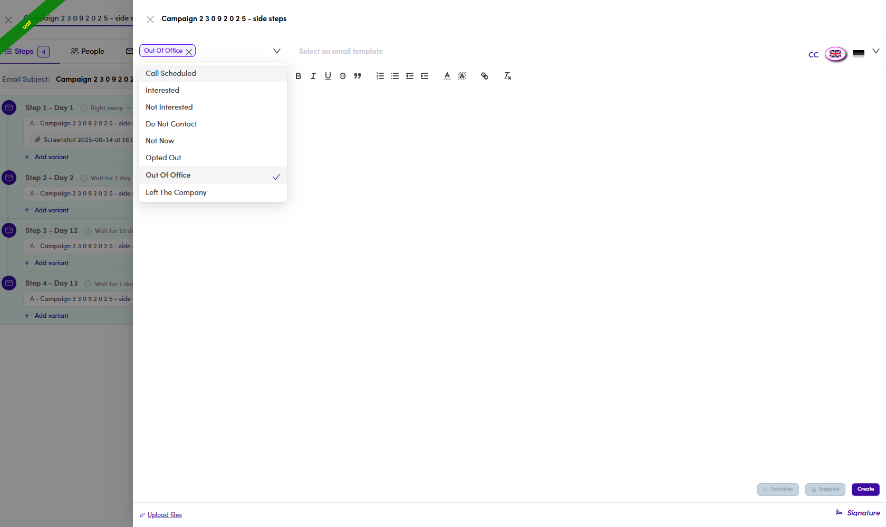
6.x.2: the condition control is a multi-select: Out Of Office ×is already a chip and the tick marks it in the list. Add as many conditions as should fire the same branch.What the Steps tab looks like afterwards. Main Step comes first, then one block per branch, each headed Side Step: ‹conditions›. Several branches can live side by side, and a branch is a sequence of its own, its own steps, its own day offsets.
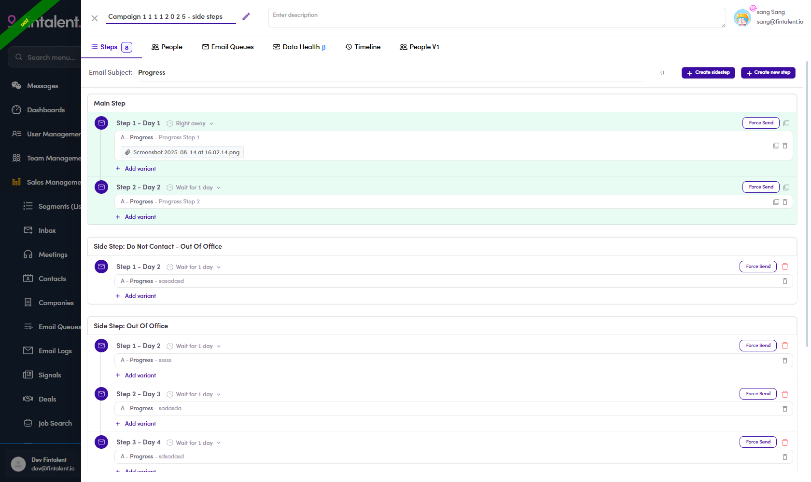
6.x.2: Campaign 1 1 1 1 2 0 2 5: Main Step (2 steps) plus four branches.Side Step: Out Of Officeruns three steps of its own on Day 2, Day 3 and Day 4.Main Step Step 1 – Day 1 Right away Step 2 – Day 2 Wait for 1 day Side Step: Do Not Contact - Out Of Office Step 1 – Day 2 Side Step: Out Of Office Step 1 – Day 2 Step 2 – Day 3 ◄ a branch can be a whole sequence Step 3 – Day 4 Side Step: Left The Company Step 1 – Day 2 Side Step: Not Now - Out Of Office Step 1 – Day 2
Two conditions in one header are joined by a hyphen,
Side Step: Do Not Contact - Out Of Officeis one branch that fires on either category, not two branches.The Steps badge counts every step in every branchThe campaign above reads Steps 8, two main steps plus six across the four branches. A badge higher than the main sequence is not a miscount; open the tab and count the branches.The same category can sit in two branchesAbove, Out Of Office appears in three of the four headers. Nothing warns about the overlap and nothing states which branch wins. Untested: do not build two branches on one category until this is settled.What is actually in use. Across the 21 sidestep records: Out Of Office 19, Not Now 3, Left The Company 2 and Do Not Contact 1. The other five offered conditions are unused, Out Of Office is what this feature is really for.
Three categories exist in the data model but are not offered in the dropdown:
Unknown,EmailUpdatedandNotResponded. The last would let a branch fire on silence rather than on a reply. Not available today. - Folders & owner, and editing your own. Campaigns are organised into folders (right rail, each with a count). A folder has an Owner: set on create (6.1.2); it decides whose group the campaign shows under. Use folders to keep campaigns per teammate / segment / region. Edit your own folder: hover it in the rail → the ⋮ menu → Edit/ View Details → the Update Folder drawer (Owner, Name and Description) → Update.

6.x.3: hover your folder → ⋮ → Edit/ View Details. 
6.x.3: the Update Folder drawer: change Name / Description → Update. - Enabled toggle. The Enabled column on the list turns a campaign's sending on / off without deleting it. Flipping it on (running) is an Admin / Ops action.
- Status tabs. Beyond Draft/Running: Scheduled (set to start later), Paused (running but temporarily stopped), Finished (sequence complete), Archive (put away, out of the active list).
- Assigned a ready campaign: skip “Add people”. Often you're handed a campaign Admin / Ops has already loaded with people, with instructions not to add more, just work those contacts. Then skip 6.4 · Add people entirely and go straight to the People tab and the sequence.
- Start from a saved Template. In the step editor, click Select an email template (top) → the list of saved templates opens → picking one prefills the whole step (subject + body). You build & manage the templates themselves in Flow 3.x.1 · Templates ↗.

6.x.7: Select an email template opens the saved-template list; picking one prefills the step. - Variables (merge fields): the right way to personalize at scale. Never type a name by hand ("Hi [Name]" stays literal). Put your cursor in the body → click Variables → pick a field, it inserts a token like
{{contact.firstName}}that fills in per contact at send time. The list covers First name, Last name, Full name, Phone number, Title, Location and Company name and more (searchable). For the Subject line, use the { } icon (top-right, next to CC).
6.x.8: Variables: pick a merge field; it fills in per contact when the step sends. - Insert a Snippet. Click Snippets (it enables once your cursor is in the body) → search & pick a saved reusable block. The picker has EN / DE tabs for each language. You build snippets in Flow 3.x.2 · Snippets ↗.

6.x.9: Snippets: drop in a saved block (EN / DE). - Attachments & Signature. Upload files (bottom-left of the editor) attaches files to the step; each attachment shows with an ✕ to remove. Signature (bottom-right) appends your signature (Flow 1.x.5). Both are visible in the editor screenshot at 6.2.2 (fields 12 & 13).
- Language versions (EN / DE). The flag toggle (top-right of the editor) switches between the English and German version of the step, write both if your list mixes languages; each contact gets the version matching their language.
- Force Update. When you edit a step later (after per-contact previews were generated), tick Force Update before Save to push the new copy onto those existing previews. Use with cautionIt overwrites existing content, per-contact personalization and saved versions on this step are replaced by the new template. Leave it unticked on a fresh step.
- Skip a step: what does it actually do? Skip = that email is NOT sent to that contact. On the Preview, Skip on a step row skips just that step for just that contact. The step is tagged Skipped immediately (no confirm dialog) and the campaign simply moves on to their next step. Skip All (top-right) skips every step, i.e. this contact gets nothing at all from the campaign. Changed your mind? Click Rollback Skip on the step to undo. Skipped contacts are the ones the Skipped filter (and the People tab's Skipped filter) surfaces.

6.x.13: after Skip: the step is tagged Skipped (it will not be sent to this contact); Rollback Skip undoes it. - Rename a campaign, or give it a description. Both
sit in the header of the campaign, and both are live text boxes rather than a form you open. Click
the name (or the ✎ beside it, which only moves the cursor there), type, then click away.
The description box sits next to it reading Enter description until you fill it in.
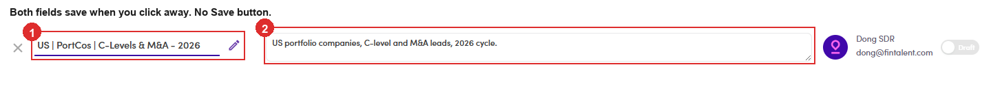
6.x.15: ① the name, always editable · ② the description. There is no Save button, and no message eitherThe change is written the moment the box loses focus. Nothing flashes to confirm it, so if you want to be sure, reload the page and read it back. Equally, a stray keystroke in the name field is already saved by the time you notice.The description is for you and your team; it is never sent to anyone.
- Edit a step you already created. On the Steps tab, click the
variant row under the step (the row marked A). The same editor opens with your subject and
body loaded, and two things change: the button now reads Save instead of Create, and a
Force Update control appears next to it.
Force Update decides whether the edit reaches previews that already exist. Leave it alone and your change applies from here on; tick it and it overwrites the per-contact copies already generated, including personalization someone typed by hand. Full warning at 6.x.12 ↗.
- Move to other campaign. The same action bar on the
People tab carries Move to other campaign next to Remove. It hands the people you ticked
to a different campaign in one action, instead of removing them here and adding them there.
Noted, not yet written up. The steps and what it does to their place in the sequence have not been walked through, so treat this as a pointer rather than an instruction.
- The 🔔 bell: Campaign Notifications. The bell (top-right, next to Create Folder) opens Campaign Notifications, a feed of every reply your campaigns pulled in: the campaign name, the reply-category chip, the contact, a snippet of the reply and how long ago. A purple dot = unread; See More loads older ones. Use it as your morning sweep: spot fresh replies without opening each campaign.

6.x.14: the bell opens Campaign Notifications: campaign + category chip + reply snippet.
SDR6† · Manage a campaign, audited
A decision-maker’s view of Flow 6 ↗, what breaks, how often, and what to fix first. The step-by-step instructions stay on the flow page.
Measured against live data · Sections 1–5
Manage a campaign, audited
Every campaign read through the API and through its own health snapshot, then compared against what the screen prints. Scope: the campaign list, the People and Preview tabs, Email Queue, and Data Health β.
- Measured
- 30 Jul 2026
- Access
- Read‑only
- Campaigns read
- 49 · 13 with a health snapshot
- Defects
- 8 · 3 quick wins
- Worst
- a blocker that double‑counts
The number that blocks the Start button is roughly double the truth. Data
Health counts a cross-campaign overlap once by contact id and again by email address, then adds
the two together, so the same person is counted twice. On
Corp Dev outreach — DD capacity (DACH) the issue reads 15
while its own evidence list holds 8 contact ids: 8 by id + 7 by email = 15.
9 of the 10 campaigns that carry this issue match the formula exactly. The only one that does not is the campaign where the email count is zero, nothing to double. Every SDR with an overlap is being blocked on an inflated figure.
Executive summary
Audience: Product / PM / CEO- Quick win 1, stop adding the two overlap counts together. The
snapshot already stores
duplicatedByContactIdandduplicatedByEmailseparately, and the issue's owncontactIdslist is the correct answer. Use the length of that list. Worth: unblocks campaigns that were never really blocked. Hours, not days. - Quick win 2: never print a percentage without checking the denominator.
24 of 49 campaigns: 48% have an empty email queue, and the Cancelled row
renders as
NaN%with no count beside it. Two of them are real campaigns with 585 and 511 people in them. - Quick win 3: make the People tab agree with itself. One campaign reports 21 contacts through the API, shows 18 to an admin and 17 to an SDR. The tier breakdown inside Data Health explains the 18: contacts with no health tier are dropped. Nothing explains the 17.
- Data Health contradicts itself on the same screen. The card says 0 — no overlap, the panel says “No cross-campaign overlap”, and the issue list says “In another campaign — 15”. A reader has no way to tell which one to believe.
- A permission error is drawn as a zero. The Email Queue endpoint returns 403 for an SDR and the screen renders an empty queue rather than an error. The reader concludes there is nothing to send.
- Two pages disagree about whether SDRs may see contacts. Contacts is hidden from the SDR menu, yet + Add contacts inside a campaign navigates straight to it, where it loads in full, filters, twenty rows, and an Export CSV button.
- The folder rail leaks other people's numbers. An SDR with three campaigns
still sees
tin's (22),Sang (8),Sponsors USA (8). Opening one shows nothing: the data is scoped, the counts are not. - Four campaigns have no health snapshot at all, so Data Health has nothing to show and no message explaining why.
- The tier breakdown does not always add up: 118 tiers against 122 contacts on one campaign, 15,219 against 15,221 on another. Small, but it is the same class of fault as the People tab.
- The register below scores 8 defects. Three are quick wins. The most valuable thing to fix is the overlap double-count, because it is the only one that stops work outright.
What the screen reads
Audience: engineeringWhere each number on the campaign screen comes from. The two that disagree with each other are marked.
| On screen | Source | Notes |
|---|---|---|
| People tab count | campaign targets joined to contact health | Disagrees with totalTargets. Contacts with no health
tier are dropped, 21 becomes 18, and 17 for an SDR |
| Cross-campaign card | stats.contact.crossCampaign.duplicatedByContactId |
counts people |
| “In another campaign” issue | dataHealth.issues[CROSS_IN_OTHER_CAMPAIGN].metadata.count |
Disagrees with the card. Equals
byContactId + byEmail: the same person twice |
| Health tiers | contactStats.countGroupByDataHealthTier |
Healthy · Degraded · Critical
· Unknown. Does not always sum to totalContacts |
| Queue percentages | emailQueueStatusStatistic |
Empty on 48% of campaigns → division by zero |
| Email Queue list | /email-queues |
403 for an SDR, rendered as an empty list |
| Status tab label | status |
Tab prints Finished, the API returns Completed |
The blocker banner counts issues of severity Critical. Since the
overlap issue is Critical and inflated, the banner it feeds is inflated too.
The overlap double-count, in full
Audience: engineering / ProductThe one defect worth reading end to end, because it is the only one that stops an SDR from working.
Corp Dev outreach — DD capacity (DACH)
stats.contact.crossCampaign.duplicatedByContactId = 8
stats.contact.crossCampaign.duplicatedByEmail = 7
dataHealth.issues[CROSS_IN_OTHER_CAMPAIGN]
.metadata.count = 15 ◄ 8 + 7
.metadata.contactIds = [ 8 ids ]
The same person is matched twice, once because their contact id appears in another campaign, once because their email address does. The evidence list carries the correct answer and is ignored by the count beside it.
| Campaign | by id | by email | issue says | ids listed | Formula holds |
|---|---|---|---|---|---|
| New Campaign test1 | 51 | 69 | 120 | 51 | yes |
| 20 - 08 - 2025 | 53 | 66 | 119 | 53 | yes |
| New Campaign 24/09 CLONE | 36 | 34 | 70 | 36 | yes |
| Long test 19/08 - 2 | 21 | 40 | 61 | 21 | yes |
| Tin’s 26 08 2025 | 11 | 13 | 24 | 11 | yes |
| Corp Dev outreach, DD capacity | 8 | 7 | 15 | 8 | yes |
| Campaign 0 5 0 9 2 0 2 5 - side steps | 5 | 5 | 10 | 5 | yes |
| T - 20250818 | 3 | 3 | 6 | 3 | yes |
| New Campaign 20/09 emailDomain | 1 | 1 | 2 | 1 | yes |
| addToCampaign2 | 2 | 0 | 2 | 2 | n/a — nothing to double |
9 of 10. The exception is the only campaign whose email count is
zero, which is what you would expect if the formula is byId + byEmail.
Defect register
Audience: Product / PM / CEOPriority = Impact − Effort. A quick win is Impact ≥ 4 with Effort ≤ 2.
| ID | Symptom | Consequence | I | E | P | Quick win |
|---|---|---|---|---|---|---|
| CMP-01 | The cross-campaign issue count adds the by-id and by-email matches together. | The blocker that gates Start reads roughly double. SDRs are stopped on campaigns that are not really in conflict. 9 of 10 affected. | 5 | 1 | 4 | Quick win |
| Fix | Report
metadata.contactIds.length, which the issue already carries, and keep the two
raw counts for diagnostics only. | |||||
| CMP-02 | Data Health prints NaN% when the email queue is empty. |
24 of 49 campaigns (48%), including two with 585 and 511 people. The Cancelled row loses its count as well as its percentage. | 4 | 1 | 3 | Quick win |
| Fix | Render — when the
denominator is zero, and keep the raw count visible. | |||||
| CMP-03 | The People tab drops contacts that have no health tier: 21 → 18 → 17. | An SDR works a shorter list than the campaign will actually send to, and nobody is told. Three numbers for one campaign, none of them labelled. | 4 | 2 | 2 | Quick win |
| Fix | Left-join the health table instead of
inner-joining it, and show untiered contacts as Unknown. Which is already
a tier the snapshot uses. | |||||
| CMP-04 | /email-queues returns 403 for an SDR and the UI draws an empty queue. |
The reader concludes nothing is queued. A permission problem is indistinguishable from an empty result. | 5 | 3 | 2 | : |
| Fix | Surface the status. Decide separately whether SDRs should have the page at all, see CMP-05, which resolves the opposite way. | |||||
| CMP-05 | Contacts is hidden from the SDR menu but fully reachable from inside a campaign, Export CSV included. | Either the menu is wrong or the page is. Right now the product answers both ways depending on the route taken. | 3 | 2 | 1 | : |
| CMP-06 | The Manage assignee drawer lists 38 accounts and their roles to an SDR. | Staff directory exposed to a role that has no need for it. | 3 | 2 | 1 | : |
| CMP-07 | The folder rail shows other owners' folders with live campaign counts. | An SDR learns how much work everyone else has. Opening a folder correctly shows nothing, so only the count leaks. | 2 | 1 | 1 | : |
| CMP-08 | Four campaigns have no health snapshot; the tab renders with nothing and no explanation. Tier counts also fail to sum on two campaigns. | A blank Data Health tab reads as “healthy” rather than “never computed”. | 2 | 2 | 0 | : |
Also seen, not scored: the status tab prints
Finished while the API returns Completed; the Steps tab writes
“Side Step” and Preview writes “Sidestep”; and
O removes a contact from the campaign with no confirmation, sitting next to
E on most keyboards.
Open questions
Audience: Product / engineeringShould the overlap check dedupe across the two match methods, or report them separately as “same person” and “same address”? They are not the same signal: a shared address across two contact records is itself a data problem.
CMP-01
Are SDRs meant to reach Contacts and Email Queue at all? The product currently answers “no” via the menu, “yes” via the campaign, and “403” via the API. One decision would settle CMP-04 and CMP-05 together.
CMP-04 · CMP-05
Why an SDR sees 17 where an admin sees 18. The untiered-contact theory accounts for 21 → 18 and nothing else.
CMP-03
Whether the four campaigns without a snapshot were never computed or failed. No message on screen distinguishes the two.
CMP-08
The permission findings (CMP-04, 05, 06, 07) were observed in an earlier pass under an SDR login and were not re-checked in this sweep, which ran as an admin.
Method
SDRFlow 7 · Manage a Marketing Email
7.1 · Create a Marketing Email
- Left menu → Marketing Emails → + Create Marketing Email (top-right).

7.1.1: the /marketing-emails page: ① open it from the left menu, ② then hit + Create Marketing Email (top-right). - Fill the header bar:
- Name: required. It is the title at the top-left (starts as "New Marketing Email"); click the ✎ pencil and type your own.
- Timezone: optional; defaults to (UTC+01:00) Europe. It decides the clock your sends run on.
- Description: optional free text (top-right); leave it blank if you don't need it.
- Click Next → you move to step ② Template.
- ⚠ Next already creates it. The marketing email is saved the moment you press Next. Before you have written a single line of the email. The address bar picks up an
?id=and the list count goes up straight away (measured: All 91 → 92, Draft 57 → 58).So closing the wizard at step ② does not cancel anything. It leaves a named, empty Draft behind. If you opened it by accident, go back to the list and delete it (A5.2 ↗); a Draft can still be deleted. This is worth knowing before you wonder why the Draft tab keeps growing.

7b · Create / edit a template
A sub-flow inside managing the ME. Still on the Templates tab, you build the actual email a ME sends, a step (= one email) with its subject, body, variables and attachments. A brand-new ME opens with no step yet, it says "Please add an email step to start viewing preview email". Click + Create new step. A step = one email. (The Preview tab is gated on people, not on steps. It appears once the ME has at least one recipient. See 7.2.4 ↗.)

The step editor opens: the core fields:
| Field / control | What it does |
|---|---|
| Subject | The email's subject line (top of the editor). You can drop variables in here too, via the { } icon (see 7.x.9). |
| Body + formatting toolbar | The message. Full rich text: H1/H2, font & size, B/I/U/S, quote, lists, indent, colour, link, clear-format. |
| Create / Save | Create saves a brand-new step; re-open a step and the button reads Save instead. The 🗑 bin on the step header deletes it. |
Everything else in the editor has its own edge case below, jump to it: saved Template (7.x.7) and Variables (7.x.9) and Snippets (7.x.8) and CC (7.x.10) and Upload files (7.x.12) and Signature (7.x.12) and Force Update (7.x.11).


7.2 · View your Marketing Emails
- Left menu → Marketing Emails shows every ME you can work on. They arrive two ways:
Where it came from You created it see 7.1 ↗. Admin / Ops created it and assigned you already set up, often with people already added. This is the usual case. - The tabs across the top filter by status, each with a count:
Tab What it means All every ME you can access. Draft created but never activated. Fully editable: where a ME sits while you build and review it. Running active and sending. Shows a Started on… chip. Admin flips it here from Draft (A5.7 ↗). Paused was Running, temporarily stopped: nothing goes out until resumed. Finished the run is complete; every queued email has gone. The five tabs account for every record, 57 + 11 + 19 + 4 = 91 in one snapshot. There is no Archived or Scheduled tab; see A5.x.1 ↗.

7.2.2: the status tabs and their counts. - Reading the numbers on a row. Every row carries the ME's whole health check:
Column What it actually counts Name the name, the From address it sends as, and the status chip. People who is in it right now. An old ME can read 0 if people were removed after it ran. Delivered emails, not people: one contact can receive several over time, so 1 person / 12 delivered is normal. Open Rate % opened, raw count in brackets. 100% (1) = the one mail delivered was opened. Reply Rate % that got a reply, total replies in brackets. The number that matters most. Bounce/Dropped Rate % that failed. Anything above 0 is a to-do: those people never got it; reach them via Flow 3 ↗. Progress empty grey bar + 0% while Draft; full purple bar + green ✓ once everything has gone. Last run when it last actually sent (, if never). The three rates stay blank on a Draft. Nothing has been sent, so there is nothing to measure. Blank is not zero.

7.2.3: the per-row metrics. - Inside a ME: the tabs. Open one and it splits:
Tab What it is for Inbox replies that came back on this ME, same read/answer flow as Flow 4 ↗. Template (count) the email step itself: the content that gets sent (7b ↗). People (count) the recipient list, with the ME-only Content Reviewed / Personalize filters (7.3 ↗). Preview the review gate: see and personalize each contact's real email, then mark reviewed (7.4 ↗). Email Queues (count) the queued emails (7.6 ↗). Timeline what happened and when. Two tabs are conditional: do not read their absence as a faultPreview only exists once the ME has at least one person; on an empty ME it is simply not rendered. Email Queues only exists once the ME is past Draft. A Draft ME has no queue tab at all, because it has no queue. Verified across three MEs: the Running one had Email Queues, the two Drafts did not.
7.3 · Add contacts to the ME
- Start from the marketing email, not from Contacts. Open the ME → People tab. An empty one says so plainly, and tells you the only way in:
“No people yet — Contacts added to this marketing email via the Contacts V2 bulk flow will appear here.”
7.3.1: ① + Add contacts, top right of the tab · ② the empty state naming the bulk flow. - + Add contacts does not open a picker. It takes you to Contacts. You land on the full Contacts list with a filter already applied: a chip reading Marketing Email: 1 excluded. That chip is doing real work: it hides everyone already in this ME, so whatever you tick next is genuinely new.
You have left the marketing emailThis is a normal Contacts page now. The full filter bar is yours: Lifecycles, Has signal, Countries, Work Experience, keyword search. Narrow the list here rather than ticking your way down 15,000 rows.
7.3.2: ① the Marketing Email: 1 excluded chip · ② the row count you are working against. - Tick the contacts you want. A selection bar appears with the count, Select all N matching for the whole filtered set, and Clear. Of the actions on the right, the one you want is Add to marketing email, the neighbours add to a list or a campaign instead, and Delete contacts sits two buttons away.
7.3.3: ① the count and Select all N matching · ② Add to marketing email. - The drawer is two panes, and both matter. It opens titled Add N contacts to marketing email.
Pane What it does Left: Select marketing email every ME you can reach, searchable and sortable. Each row shows name · owner · status chip · N recipients, so you can tell a Draft from something already sending before you pick it. Right: the contacts split into three buckets: Valid · Missing + Invalid · Platform Signup, each with its own count. They are not a quality ranking: which ones you tick depends on what the email is for. See below. Read the legend above the table: “☑ Tick to add and ◉ Email to send”. Two different controls: the checkbox decides whether the contact goes in, the radio beside each address decides which address gets used.
What each bucket actually means, and when to tick it:
Bucket What is in it Tick it? Valid The safe ground. The address is confirmed working, so a send has a high chance of landing rather than being dropped. Yes: pre-ticked for you. Missing + Invalid Needs a human look. The work address is missing or unusable, so the pick falls back to a personal one, unverified rather than proven bad. Most are reachable; nobody has checked. Your call. Tick individually if you are willing to risk a bounce on that name; leave it if you would rather not spend the sender reputation. Platform Signup People who already have a Fintalent account, talent or client. Nothing to do with whether the address works. Depends entirely on the campaign. See the rule below. Platform Signup is a business decision, not a data-quality oneAsk what the email is for:The email is aimed at… Platform Signup Why Talents Tick all of them These are your talents. Leaving them out means mailing everyone except the audience. Prospective clients Judgement call Having an account already suggests they may be a client. Whether that makes them a target or means you should leave them alone depends on the campaign. Decide deliberately, do not let the default decide for you. When a contact has more than one address, the system has already chosen one. It picks by priority: a valid address first, then one belonging to a sponsor company, and so on down. The chosen address carries the filled radio; any others sit under Additional Emails.
You can overrule it right here. Click the radio next to a different address and that is where the email goes. Worth a look whenever someone has a work address and a personal one. The automatic pick is a sensible default, not a decision about which inbox this particular message belongs in.
7.3.4: ① pick the ME (status and recipient count on every row) · ② the three buckets · ③ tick-to-add vs email-to-send · ④ the confirm button and the line above it. - Tab 1: Valid: everything here is already ticked. Rows are shaded and the header checkbox is on. The address being used sits in the Work Experiences column beside the company, the work address, right under the Sponsor chip. In one example, 52 of the 62 picked there and not one fell back to a personal address.
Whatever is listed under Additional Emails is an alternative. It is normal for those to be red. They are not the address being sent to, so a red alternative is not a problem to fix.
Remove N from selection, top right, unticks the whole tab in one click. Useful when you meant to send only to the other buckets.
The icons mean the same thing in all three tabs. Hover any of them; these are the tooltips:
Icon Tooltip What it means for you green tick Valid the address is confirmed working red triangle Invalid known bad. Sending here costs you sender reputation grey circle Not verified never checked. Not proven bad, just unknown blue arrow Replied from this email this person has written back from that address before green person Platform Signup they hold a Fintalent account 7.3.5: Valid. ① the three counts, adding up to your selection · ② header checkbox on, every row ticked · ③ Remove 62 from selection · ④ the address in use, on the work experience · ⑤ an alternative address · ⑥ an alternative that is Invalid. Harmless, it is not the one selected. - Tab 2: Missing + Invalid: nothing ticked, and the pick has fallen back. In one example, 17 of the 22 had no usable work address, so the radio landed on a personal one under Additional Emails while the Work Experiences column shows the job with no address against it. That is what the tab name means: the work address is missing or unusable, not that the person is unreachable.
The blue Replied from this email arrow is the best reason to tick one of these by hand. Someone who has already written back from an address is a far safer bet than the bucket label suggests.
⚠ One row had no address selected at allNot every row here has a pick. Tick a contact whose radio is empty and you add someone with nowhere to send, check the radio, not just the checkbox.7.3.6: Missing + Invalid. ① the tab · ② nothing ticked · ③ the pick fallen back to a personal address · ④ a row with no address picked at all · ⑤ Replied from this email. - Tab 3: Platform Signup: people who already hold a Fintalent account. Nothing is pre-ticked. All 16 rows picked a personal address; none had a work one. The marker is the green person icon at the end of the row, hover it and it reads Platform Signup.
This tab says nothing about address quality. An address in here can be green Valid and still sit outside the Valid tab, because holding an account is what put it here. Judge it on who the email is for, not on the data.
⚠ Skip this tab and you may miss the whole audienceIf the email is aimed at talents, these are your talents, leaving the tab unopened mails everyone except the people it was written for. Go back to the bucket table in 7.3.4 ↗ and decide deliberately.7.3.7: Platform Signup. ① the tab · ② the green Platform Signup marker · ③ a personal address, Not verified · ④ a work experience carrying no address · ⑤ the line that names both unticked buckets. The N results count and page numbers along the bottom belong to the marketing email list on the left, not to the contacts, 93 results was 93 MEs. The buckets are not paginated; each tab shows all of its rows.
- ⚠ Read the button before you click it. It will not add everyone you ticked. Confirm reads Add 2 of 6 contacts, and directly above it: Not ticked by default: 4 Missing + Invalid.
Only the Valid bucket is pre-ticked. Contacts with a missing or unusable address are carried into the drawer but left unticked on purpose, so selecting six people and adding two is the expected outcome, not a fault. Worked example: six selected →
Valid 2, Missing + Invalid 4 and Platform Signup 0→ buttonAdd 2 of 6 contacts.If you want the excluded ones anyway, open the Missing + Invalid tab and tick them yourself, but fix the address first, or they will bounce (7.7a ↗).
- Confirm, and read the toast. It names both the number and the email: “Added to marketing email — 2 contacts added to M&A Executive Briefing - Berlin, October 2026.” That is your receipt: the one moment the system tells you what actually went in.
7.3.9: ① the toast, bottom left over the sidebar. It names both numbers that matter: how many contacts went in and which marketing email they went into, and it clears on its own after a few seconds, so read it as it appears. A count lower than what you selected is the dialog holding back contacts with a missing or invalid email. - Check the People tab. Go back to the ME: the People tab badge should carry the new total. If it does not match what the toast said, something was dropped; re-run the add rather than assuming it landed.
7.3b · Remove contacts from the ME
- Open the ME → People tab and tick whoever should not receive it. The selection bar is the same one you used to add: the count, Select all N matching, Clear. The action you want is Remove contacts.
Removing takes them off this marketing email only. The contact record itself is untouched: this is not Delete contacts, which lives on the Contacts page and is a different thing entirely.
- You get told twice, in two places, and they do not say the same thing.
Where What it says Banner, above the table Removed 1 contact, with an Undo beside it. Stays until you dismiss it. Toast, bottom left Removed 1 contact from M&A Executive Briefing - Berlin, October 2026, the only one that names the email. Clears on its own. If you work several MEs at once, the toast is the one that tells you which list you just cut into.
7.3b.2: ① the banner and its Undo · ② the toast, the only place the email is named. - Undo really does put them back. Worked example: two recipients, removed one, People went 2 → 1; clicked Undo and it went back to 2 with the contact returned. Because the banner waits for you rather than fading, a wrong bulk remove is recoverable, as long as you notice before you navigate away.
🐛 After Undo the table lies until you reloadThe People badge corrects itself, but the list underneath keeps the post-removal total, it read People 2 and Showing 1 of 1 at the same time. Refresh before you trust the table, and count off the badge, not the footer.
- Once you leave the page, Undo is gone. There is no removal history and no bin to fish them out of, the only way back is to add them again from scratch (7.3 ↗). On a Select all N matching removal that is a real cost, so read the count in the bar before you confirm, not after.
7.4 · Preview, personalize & mark as reviewed
The Preview tab is the review gate. Nothing should go out unchecked.
- Open the Preview tab → click a contact on the left.

7.4.1: ① open the Preview tab · ② click a contact in the left list. - Read the contact header. Above the email you get the contact's name, email and title & company, plus three quick reads:
1. Company-type badge: the coloured letter next to the email:
Badge Means 
Sponsor company 
Corporate company P Portfolio company 
Email address is valid 2. Quick-jump icons: the little row under the name; each opens this contact elsewhere (full detail & screenshots → 7.x.4):
Icon Opens 
View Inbox: their Conversations. 
View Profile: their contact record. 
View Company: their company page. 
View on LinkedIn: their LinkedIn profile (new tab). 3. Row indicators: shown on each contact's row in the left list (full detail → 7.x.5):
Mark Means 
Personalized: you edited this contact's email and hit Save (7.4.4). (Reviewed) Content-reviewed: the “done” mark, after Mark as reviewed (7.4.5). 
7.4.2: a contact row + header: the company-type badge, green ✓ valid email, and the quick-jump icons. - Read the email they will actually get on the right. Merge fields are resolved here (e.g. "Hi Tin Nguyen," plus their real title & company).

7.4.3: the merge fields resolve to this contact's real data (First name: Tin · title · company); the body opens "Hi Tin Nguyen,". - Personalize if it needs it: the body is a full editor, so you can tweak this one contact's copy, then click Save. Work down the list.

7.4.4: typed a personal line just for this contact (highlighted) → Save; everyone else keeps the standard copy. - When the batch is done: select the contacts (All at the top selects everyone) → Bulk Actions → Mark as reviewed. That sets Content Reviewed on them.
Bulk Actions holds three items: Mark all as Reviewed, Mark all as Not Reviewed
and Mark all as Not Personalized.
Nothing is queued until this is doneThe send queue is built only for contacts marked reviewed. Worked example: an ME with 3 recipients was set Active and force-sent while 0 were reviewed, the Email Queues tab stayed empty and no error or warning appeared anywhere. Marking all 3 reviewed and force-sending again produced all 3 rows immediately. If the queue is empty after a force send, check this first.Personalizing is not reviewingWriting a personal version for a contact and clicking Save does not tick Content Reviewed. On the same walk one contact was personalized and the Run dialog still read 0 reviewed, with “3 of 3 recipients have not been reviewed”. The two flags are independent: come back and mark reviewed explicitly.

7.4.5: ① Select All · ② Bulk Actions · ③ Mark all as Reviewed (sets Content Reviewed).
7.5 · Force Send + Run the marketing email (Admin/Ops)
What you hand over: the ME name, that review is complete, and the number you expect to go out. What comes back: the ME switched to Active and the queue filled. Everything in 7.6 ↗ only exists after this step has happened.
Your review is what your Admin is waiting on. The confirm they get when they flip the ME on counts recipients, email steps and reviewed, and warns them that anyone unreviewed “will receive the default template as-is”. At 0 reviewed the queue is not built at all, silently. Their side, dialog by dialog, is A5.7.3 ↗.
Once your Admin has force-sent, your job is to check the queue:
- Open the marketing email detail.
- Go to the Email Queue tab.
- Check the count: the number of queued emails should match the number of contacts you marked as reviewed (7.4.5). If it doesn't, something's off; flag it, don't just carry on.
7.6 · The Email Queue: your control room
- Two ways in, and they are not the same view. The Email Queue tab inside a ME is already scoped to that ME. Sales Management → Email Queues in the left menu is the whole platform, it mixes three sources:
Source Where the email came from Email Marketing a marketing email, this flow. Campaign a campaign step (Flow 6 ↗). Task a one-off task email. The Campaign / Marketing Email column tells you which, with a chip for the source and a link to the campaign or ME by name. On the global page, read that column before you act on a row. It is easy to cancel a campaign email thinking it belongs to your ME.
- Three states, plus an All that holds them. Every row sits in exactly one of In Queue, Delivered and Cancel, and All is simply the three added together. Each carries a live count:
Tab What is in it All everything, whatever its state, the tab people forget exists. In Queue will be sent, has not gone yet. The only tab where the row actions do anything. Delivered already sent. Cancel pulled out of the queue: these will never be sent. When the In Queue rows actually go outYou do not send them one by one. Everything sitting in In Queue is released automatically at the end of the day, read in the timezone set on the ME when it was created, not your timezone, and not the contact’s. So “In Queue” means not sent yet, but it will be, and the clock that decides when belongs to the ME.Cancel is only reachable from In Queue. Once a row has moved to Delivered the email is gone and there is nothing left to stop, so anything you want pulled has to be pulled before that daily release.
Two worked examples. A large ME: All 20,168 and In Queue 1,013 and Delivered 18,742 and Cancel 413. And Talent Handbook Launch — Aug 2026: All 5,197 and In Queue 1,451 and Delivered 3,741 and Cancel 5, and 1,451 + 3,741 + 5 = 5,197 exactly, so the three do add up to All.
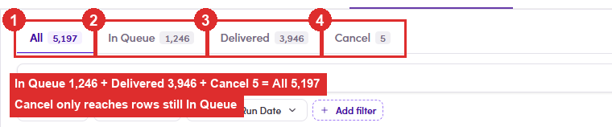
7.6.2: ① All 5,197 · ② In Queue 1,246 · ③ Delivered 3,946 · ④ Cancel 5, and 1,246 + 3,946 + 5 lands exactly on 5,197. 
7.6.2: ① the four tabs with their counts · ② the filter bar · ③ rows-per-page and the column settings gear. - Narrowing it down. Quick filters are Sources, Campaigns and Expected Run Date, plus Add filter to pin more. The search box has a Simple / Advanced toggle.
The date filter changes meaning with the tabOn Delivered you filter by sent date. On In Queue and Cancel there is no sent date yet, so you filter by queued date instead. Same-looking control, different question: worth knowing before you conclude a date range is empty.
- Read a row. Beyond Subject and Status: from and to under the subject, a Content preview of the actual body, Attachments, and three dates, Created, Expected Run, Expected Delivery, with Sent Date filled in once it has gone.
The recipient carries a small coloured dot: green when the contact has an email on file, grey when it does not.

7.6.4: scroll the table sideways for the rest: Status, Attachments, Sent Date, Created Date, Expected Run, Expected Delivery. - Act on one row: the ⋮ at the far right of an In Queue row:
Action What it does Set as Delivered send it now, without waiting for its slot. Cancel Email Queue pull it out: it will never be sent. Both ask first. The confirmation names the email by subject, so you can check you have the right row before committing. Exit backs out; Yes commits: red on Cancel, because that one cannot be undone from here.

7.6.5: the confirmation carries the subject of the email you are about to cancel. - Act on many rows. Tick the header checkbox and a bar appears: how many are selected, Select all N matching to take the whole filtered set rather than just this page, Clear, and a red Cancel N Email Queues.
Bulk cancel is the only bulk action. There is no bulk “send now”. Filter first, then select, then cancel: that is the fast way to stop a whole batch.

7.6.6: ① the count and Select all 1,013 matching · ② the red bulk cancel, naming how many rows it will take. - You can still edit the email while it waits. Click the row and it opens in an editor, subject at the top, the full body in a rich-text field, and Save. Whatever you save is what goes out.
This is a live email, not a draftIt is queued and will send on its own. Fix a typo here and it goes out corrected; leave the editor open and it still sends on schedule. If the email should not go at all, cancel it. Editing does not hold it back.

7.6.7: ① the body, fully editable · ② Save. - If the list looks empty or stale, do not panic. The SDR view of Email Queues can be slow or show 0 / “Couldn't load” for a while after a send, even when the mail has already gone. Refresh, or confirm the send in the contact's Conversations (7.7 ↗), that never lies.
- Before you walk away: anything still sitting in In Queue will go out. If someone should not receive it, cancel their row. Ignoring it is not the same as stopping it.
7.6b · Monitor the ME: the numbers decide what you do next
- Read the row, and hover anything you are unsure of. Each figure has a meaning and a tooltip, hover it and the detail behind the number appears. Together they are your overview of the send, and the figures you quote when somebody asks how it went.
Number What it is telling you People how many contacts the ME holds. Delivered how many actually went out, with (N In Queue) beside it, still waiting for the daily release. Open Rate opens measured against what was sent, not against the whole list. Bracketed figure is the raw count. Reply Rate the one that matters. A reply is a person, not a metric, go read it. Bounce / Dropped Rate addresses that refused it. Treat as a to-do list, not a statistic. 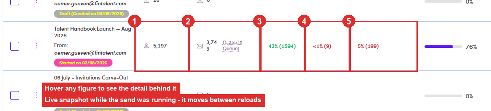
7.6b.1: one row, Talent Handbook Launch — Aug 2026: ① People 5,197 · ② Delivered 3,743 with (1,255 In Queue) still waiting · ③ Open Rate 43% (1594) · ④ Reply Rate <1% (9) · ⑤ Bounce/Dropped 5% (199). Caught mid-send: the figures move every time you reload. - Replies > 0 → open the Inbox tab and deal with them. Go to the ME’s own Inbox tab, read what each person actually wrote and what chip the system put on it, and decide whether it needs an answer. That is 7.7 ↗ and 7.8 ↗, and if one of them is asking for a call, Flow 4b ↗.
- Bounce / Dropped > 0 → find out who, then decide. Same Inbox tab, filter the lifecycle down to Bounce / Dropped so you are looking at names rather than a percentage. Then it is a judgement call per person: worth chasing a corrected address and sending again, or not worth it. If you do resend, it goes back through the normal send flow, see 7.7a ↗.
- 🐛 The delivered figure does not agree with itself. Four screens claim to tell you how many went out, and they give four different answers for the same ME:
Where you read it Talent Handbook Launch — Aug 2026 Inbox tab 3,733 Email Queue → Delivered 3,741 the figure behind the header % ( totalDelivered)3,738 the event log ( statusCount.delivered)2,040 Not a one-off. Frankfurt Event - June 2026: Inbox 359 vs Delivered 406. Frankfurt - Active/Passive Talents: Inbox 804 vs Delivered 816. The Inbox count comes out lower every time.
Which to trust: for “did it go out”, use Email Queue → Delivered. It is the only one that reconciles (In Queue + Delivered + Cancel = All, exactly, on all three). Use the Inbox count for reading conversations, not for reporting. And do not quote two of them in the same sentence.
The header percentage is
totalDelivered ÷ (totalDelivered + bounce + dropped), on Talent Handbook that is 3,738 ÷ 3,922 = 95% delivered and 5% bounced, which is what the header shows.
7.7 · Verify in the contact's Conversations
The moment your Admin force-sends, each email is written into that contact's conversation, even while it's still queued. To check:
People tab → open the contact → Conversations → find the thread with the marketing icon. Its chip tracks the whole life of the send:
| Chip | Means |
|---|---|
| In Queue | Queued, not sent yet. |
| Delivered | It went out. |
| Open | They opened it. |
| Click | They clicked a link in the email. |
| ⚠ Bounce / Dropped | It failed, that address didn't take it. |


When they reply, the thread also picks up the reply icon and a lifecycle chip per email (the system's read of the reply, see Flow 4.2 ↗).
7.7a · Find who bounced / dropped, and fix it
A bounce / drop means that contact never got the email. Check for them after every send: step by step:
- Spot it on the list. On Marketing Emails, read the Bounce/Dropped Rate column, anything above 0% (count in brackets) means failed sends inside.

7.7a.1: the Bounce/Dropped Rate column on the ME list. - See exactly who. Open the ME → Inbox tab → click the Bounced / Dropped category (left rail). The filter applies and everyone listed is a failed send.

7.7a.2: ① Inbox tab → ② Bounced / Dropped → ③ the filter applies → ④ everyone here failed. - Fix & re-reach. For each failed contact: get the email address corrected on their profile (flag it to Admin / Ops if you can't edit it), then reach them another way: a 1:1 email (Flow 3) ↗ to a working address, or WhatsApp / LinkedIn (3.x.4) ↗. Once fixed, Admin / Ops can include them in the next send.
7.9 · Label the replies, and know which labels stop the sending
Your part is narrower and more important: check the ones the system got wrong, and set the three that actually stop future sending. Read this straight after 7.7 ↗: the chips you are reading there are what this section explains.
- Two different labels, and only one of them stops anything. This trips people up constantly:
Label Sits on Set by Category (the chip on a reply) a single reply, and on the recipient inside this marketing email the system reads the message and guesses; you correct it by hand Lifecycle Stage the contact, across everything always you (Flow 4 ↗) - The twelve categories, and the three that matter. Read straight off the API: a recipient can hold any of 12, an individual reply any of 11 (the same list minus Unknown).
Group Categories Effect on sending Stops the sending Opted Out · Not Interested · Do Not Contact No further mail goes to this person. Three labels, that is the whole list. Reporting only Call Scheduled · Interested · Not Now · Out Of Office · Left The Company · Email Updated · No Categories · Not Responded · Unknown Sending continues. They describe what happened; they do not hold anything back. Where this comes from: the twelve / eleven values are read straight off the API. The three that block are named in the code as a constant,
MarketingEmailRecipientBlocklistEnforcementOptions = [OptedOut, NotInterested, DoNotContact], and the same three appear in Fintalent's own feature documentation. Not proven by a send test of my own; proving it would mean mailing a real contact.The three look exactly like the other nineNothing in the interface marks them out, same chip, same colour, same list. So the label that quietly keeps mailing someone who asked you to stop is one row away from the one that stops it. Before you label a negative reply, decide which of the two you mean: “not now, try later” is Not Now and keeps them in rotation; “stop emailing me” is Opted Out or Do Not Contact and takes them out. - Out Of Office is not a rejection. It is the most common auto-reply and it is reporting-only, so the person stays in the run. Which is right, they are just away. Do not upgrade it to Not Interested to clear it off your screen; that is a different meaning and it is permanent.
- Nothing reminds you. Categorising is entirely manual: no prompt, no badge, and no count of how many replies are still unlabelled. If you do not work the inbox deliberately, an opt-out can sit there unread while the next send goes out.
Practical habit: after every send, open the Inbox and clear it to zero before you do anything else. Filter the category rail to No Categories to find what nobody has touched.
There is also no bulk categorise: thirty auto-replies is thirty separate actions. Sort by the auto chip first so the identical ones are together.
- Where you do it. Open the Inbox tab of the marketing email, pick the category rail on the left to filter, click a reply, set its category. The same reply also appears in your own Inbox (Flow 4), labelling in either place is the same record.
7.8 · Then: replies, bounces & drops
- Watch the Inbox. Replies to this ME land in its own Inbox tab as well as your main one. Read and answer them the usual way, Flow 4 ↗.
- Treat any Bounce / Dropped as a to-do, not a statistic. That send failed, so the person never saw it. Find out who in 7.7a ↗, then reach them another way: a 1:1 email (Flow 3 ↗) or WhatsApp / LinkedIn (3.x.4 ↗).
- A rate of 0% is not the same as a blank one. Blank means nothing has been sent yet; 0% means mail went out and nobody opened or replied. That is a content problem, and it is worth saying so before the next send.
7.10 · When the marketing email is finished
The checklist below is still yours: it is what you work through before handing it back, not something you tick after somebody flips a status.
- The system decides “Finished”. You decide “done”. They are not the same moment, and the gap between them is where the work actually is.
What it means Finished (the status) every queued email has left. Progress shows a full bar and a green ✓, the queue has nothing in In Queue. This is about mail, not about outcomes. Done (your call) every reply has been read, answered and labelled; every bounce has been chased another way; every hot lead has been moved on. Nothing in the product marks this: you do. - The closing checklist. Run it before you stop looking at the marketing email:
Check Where What you want to see Nothing still queued Email Queue → In Queue 0. Anything left will still go out. Delivered matches what you sent the row's Delivered vs the people you reviewed the same number. A gap means someone was skipped: find out who. Bounce / Dropped cleared the row's Bounce/Dropped Rate either 0, or every one of them chased another way (7.8 ↗). No unlabelled replies Inbox → category rail → No Categories empty. Opt-outs actually recorded the same rail anyone who asked to stop carries Opted Out or Do Not Contact, not a softer label. Hot replies moved on Lifecycle Stage on the contact Interested / Call Scheduled set, and the meeting booked (Flow 4b ↗). - Finished does not mean frozen. Replies keep arriving after the last email lands, often for weeks. The Inbox stays live, so keep checking it after the status has moved on. A blast that reads Finished on Monday can still produce a meeting on Friday.
- Read the rates once at the end, and read them honestly. A blank rate means nothing was sent. 0% means it went out and nobody opened or replied. That is a content result, not a delivery one, and it is the number worth raising before the next send. Reply Rate is the one that matters; Open Rate mostly tells you about the subject line.
7.x · Edge cases
The People / Preview cases first (7.x.1–5), then the template-editor ones (7.x.6–12).
- Filter the People / Preview list. Both tabs carry the same filter bar as your lists, Lifecycles, Has signal, Contact Classification, Owner, Work Experience, Countries and Cities, plus two ME-only ones: Content Reviewed (checked yet?) and Personalize. Handy to review in batches, e.g. "show only the ones I haven't reviewed". Full reference: Flow 8 · Using filters ↗.

7.x.1: the same filter bar, plus the ME-only Content Reviewed + Personalize filters. - Un-mark: Not Reviewed / Not Personalized. The same Bulk Actions menu (7.4.5) also has Mark all as Not Reviewed (clears the Content-Reviewed flag, use it if you need to re-check a batch) and Mark all as Not Personalized (clears the personalize flag).
7.x.2: the Bulk Actions menu carries Mark all as Reviewed, Not Reviewed and Not Personalized. - Review a subset, not everyone. You don't have to Select All: tick just the contacts you want and mark those reviewed. This matters because only Content-Reviewed contacts go into the Email Queue when the ME is activated and force-sent: anyone not reviewed is skipped. So marking a subset reviewed is a deliberate way to send to only those people.

7.x.3: tick a subset; only those (once reviewed) enter the queue on force send. - Quick-jump icons: where each one takes you. The little row of icons under the contact's name (7.4.2) opens them elsewhere. Each icon and what it opens:
 View Inbox: the contact's Conversations: every email & call thread with them.
View Inbox: the contact's Conversations: every email & call thread with them. View Profile: their contact record: phone, location, LinkedIn, experience, work history.
View Profile: their contact record: phone, location, LinkedIn, experience, work history. View Company: their company page: industry, website, classifications, email domains.
View Company: their company page: industry, website, classifications, email domains. View on LinkedIn, opens their LinkedIn profile in a new tab (hover shows the URL).
View on LinkedIn, opens their LinkedIn profile in a new tab (hover shows the URL). - Row indicators: Personalized & Reviewed. Once you've acted on a contact, their left-list row tells you at a glance: ✨ Personalized appears after you edit that contact's email and click Save (7.4.4); the green (Reviewed) “done” tag appears after Mark as reviewed (7.4.5). Only reviewed contacts enter the Email Queue on force send. Anyone not reviewed is skipped.

7.x.5: the row shows ① (Reviewed) (the “done” tag) and ② ✨ Personalized once each is set. - Edit a template step. Same place, same form: Templates tab → click the step → change the subject / body / attachments → Save. The 🗑 bin on the step header deletes it. If per-contact previews were already generated, tick Force Update (7.x.11) so your edit reaches them.

7.x.6: click a step to open the full editor: subject, body, toolbar and all controls. - Start from a saved Template. Rather than writing from scratch, use Select an email template (top of the step editor) to prefill the whole step from a saved template. You build & manage those in Flow 3.x.1 · Templates ↗.

7.x.7: Select an email template (top of the editor) prefills the whole step. - Insert a Snippet. Click Snippets (bottom of the editor: it enables once your cursor is in the body) to drop in a saved reusable block. You build snippets in Flow 3.x.2 · Snippets ↗.

7.x.8: the Snippets button (enables once the cursor is in the body). - Variables (merge fields): the right way to personalize. Never type a name by hand like "Hi [Name]". That stays literal and won't personalize. Instead: put your cursor where you want it → click Variables → pick a field. The list covers First name, Last name, Full name, Phone number, Title, Location, Company name, LinkedIn, Sponsor and Board observer. It inserts a token like
{{contact.firstName}}that fills in per contact when it sends. You can also add variables to the Subject line, click the { } icon (next to CC, top-right).
7.x.9: ① click Variables (cursor in the body) · ② pick a merge field (don't type [Name]by hand) · the { } icon adds them to the Subject. - CC someone. Click CC (top-right of the editor) → an Add cc field appears → type who to copy on every send of this step.

7.x.10: ① click CC → ② an Add cc field opens to type the copied recipient. - Force Update. Tick this before Save to push your latest template edit onto everything already generated for this step. Its own tooltip: "Force Update will apply the latest version of this email template to the current step in the campaign flow within the Preview tab — including personalized emails, marked-as-done steps, and previously saved versions." Use with cautionIt overwrites existing content: any per-contact personalization, “reviewed” marks or saved versions on this step are replaced by the new template. Leave it unticked on a fresh step that has no previews yet.

7.x.11: the Force Update toggle (with its ⓘ tooltip), bottom of the editor. - Upload files & Signature. Upload files (bottom-left) attaches files to the email; each attachment shows with an ✕ to remove. A Signature button (bottom-right) appends your signature (Flow 1.x.5).

7.x.12: Upload files (bottom-left); each attachment shows with an ✕ to remove. - Assigned a ready ME: skip “Add people”. Often you're handed an ME Admin / Ops has already loaded with people, with instructions not to add more, just review & personalize those contacts. Then skip 7.3 · Add people and go straight to 7.4 · Preview.
- Personalizing drops the attachment. If you personalize a
contact’s email, that contact stops receiving the file. Everyone you did not
personalize still gets it. Worked example: one ME, one step, one attachment, three
recipients, only one personalized. The two template rows carried 1-1-log-in.md; the personalized
row’s Attachments column was empty. Same subject, same step, same created time. The personalization is the only difference.
You will not see it on screenPreview keeps showing the attachment for that contact, because Preview renders the file list from the template rather than from the contact’s own copy. It shows up only in the Attachments column of Email Queues, after the queue is built, so check that column before a send goes out whenever you have personalized anyone on an ME that carries a file. Removing a file deliberately is different: that is the ✕ beside the filename in Preview, and it affects only the contact you are looking at. Logged as ME-01.
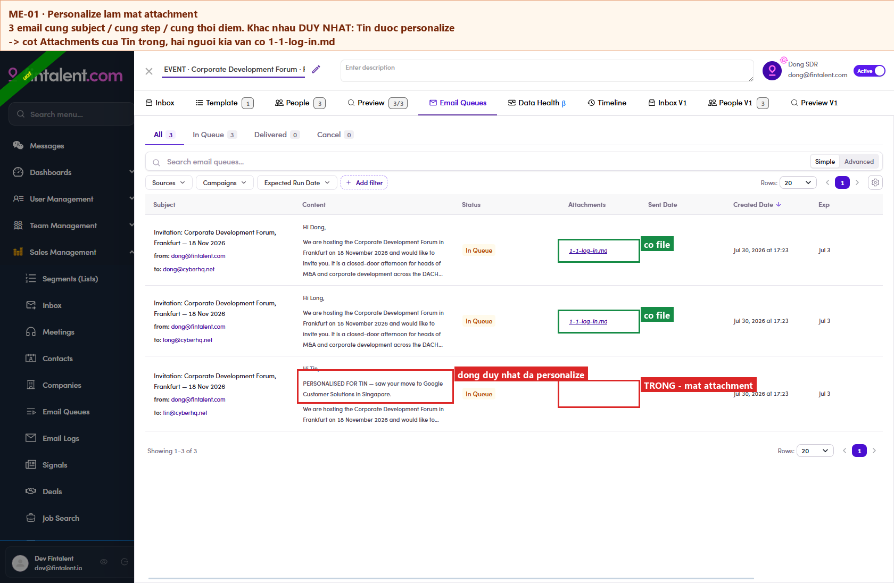
7.x.14: two rows carry the file, the personalized row does not. - The row-actions button can be unreachable. The two actions
themselves: Set as Delivered and Cancel Email Queue, are covered in
7.6.5. This is
only about not being able to reach them: the queue table scrolls sideways and the sticky column can sit
on top of the actions column. In one example the ⋮ at the end of the row could
not be clicked at all. The pointer landed on the cell covering it. Widen the window, or scroll
the table fully to one side, until the actions column clears the sticky cell.
Still openLogged as ME-02. When the menu was forced open and Set as Delivered chosen, nothing happened and no confirmation appeared, while 7.6.5 says both actions ask first. Whether that is the overlay or the action itself is not established; confirm by hand before relying on it.
SDR7† · Manage a Marketing Email, audited
A decision-maker’s view of Flow 7 ↗, what breaks, how often, and what to fix first. The step-by-step instructions stay on the flow page.
Measured against live data · Sections 1–5
Manage a Marketing Email, audited
All 93 marketing emails read through the API and compared against what the list and the detail header print. Scope: the ME list, People, Preview, Inbox and Email Queues.
- Measured
- 30 Jul 2026
- Access
- Read‑only
- Emails read
- 93 · 20 with an event log
- Defects
- 6 · 2 quick wins
- Worst
- every rate on the page
The rates on this page divide one unit by another. The numerator counts opens, one person opening three times counts three, and the denominator counts people. So the Open Rate can exceed 100%, and does: 173.5% on one live email, 132.1% on another.
Underneath it, “delivered” has two counters that do not agree on 13 of the 20 emails that have an event log. One reads 2,172 where the other reads 0; another reads 0 where the log reads 602. Nothing on the screen says which one you are looking at.
Executive summary
Audience: Product / PM / CEO- Quick win 1. Count opens per person before dividing. Today the numerator is an event count and the denominator is a headcount, so the result is not a rate at all. Fixing the denominator alone will not help: it can still print above 100%. Worth: every percentage on the page becomes meaningful.
- Quick win 2: reconcile the two delivered counters, or stop showing one of
them.
totalDelivereddrives the header and every rate;statusCount.deliveredcomes from the event log. 13 of 20 disagree, in both directions. - An email can report replies it never delivered. Five emails have
totalReplied > totalDelivered. The worst reads 34 replies against 0 delivered. The earlier explanation, one person replying twice, does not survive contact with the data. - The send queue can hold people the email does not list. Five emails have more queue rows than people, and the gaps are not off-by-one: +472, +253, +253. Those people receive the email while appearing nowhere in People or Preview.
- Three of the five worst gaps are named
test move …, which points at moving campaign targets leaving queue rows behind. Unverified: it needs one reproduction to confirm or drop. - Inbox and the list disagree about what a reply is. Inbox counts conversations, Reply Rate counts messages. Same label, two numbers, no explanation on screen.
- Pausing an email marks the whole outstanding queue
Cancel, 69 of 70 rows on the sample. That is correct behaviour, but combined with the rate bug it makes a paused email look like a failed one. - The guide itself was wrong here and has been corrected: it claimed “100% (1) = the one mail delivered was opened” when the screen actually shows 1%.
- The register below scores 6 defects. Two are quick wins, and both are arithmetic rather than architecture.
Where each number comes from
Audience: engineering| On screen | Source | Counts | Notes |
|---|---|---|---|
| Open Rate | statusCount.open ÷
totalTargets | events ÷ people | Mixed units. Prints above 100% on two live emails |
| Reply Rate | totalReplied ÷
totalTargets | messages ÷ people | Same problem. Inbox counts conversations instead |
| Delivered (header) | totalDelivered |
, | Disagrees with the event log on 13 of 20 |
| Delivered (event log) | statusCount.delivered | events | Not shown anywhere on the screen |
| People tab | totalTargets | people | Lower than the queue on 5 emails |
| Email Queues tab | emailQueueStatusStatistic | queue rows | Holds addresses that are in no other tab |
| Inbox count | reply threads | conversations | Same Interested label as Reply Rate, different number |
A worked example, [Prod] US-based Thanksgiving:
totalTargets 962, totalDelivered 0 and
statusCount = {delivered 602, open 1669, bounce 209, dropped 17} and
totalReplied 33. The header says nothing was delivered; the log says 602 were; the
Open Rate prints 173.5%.
The rate arithmetic
Audience: engineering / ProductWhy changing the denominator is not enough on its own.
Open Rate as built
statusCount.open ÷ totalTargets
= every open event every person added
→ one person opening 3 times moves the rate 3 steps
[Prod] US-based Thanksgiving 1669 opens ÷ 962 people = 173.5%
[Prod] M&A Workshop 185 opens ÷ 140 people = 132.1%
Fixing only the denominator
statusCount.open ÷ totalDelivered
→ still events ÷ people, still able to exceed 100%
What it needs
distinct openers ÷ people actually delivered to
| Marketing email | people | header delivered | log delivered | opens | replies |
|---|---|---|---|---|---|
| [Prod] US-based Thanksgiving | 962 | 0 | 602 | 1669 | 33 |
| [Prod] M&A Workshop & Networking | 140 | 0 | 166 | 185 | 34 |
| sang test | 0 | 2172 | 0 | 1 | , |
| New Marketing Thanks Giving | 0 | 117 | 7 | 2 | , |
| Marketing Email Bounced | 0 | 28 | 1 | 0 | , |
| EVENT · Berlin M&A Exec Briefing | 68 | 1 | 0 | 1 | 4 |
The Berlin email is the one the guide used as its worked example. One person was delivered to, opened it and replied, a 100% open rate by any sensible definition. The screen prints 1%.
Defect register
Audience: Product / PM / CEOPriority = Impact − Effort. A quick win is Impact ≥ 4 with Effort ≤ 2.
| ID | Symptom | Consequence | I | E | P | Quick win |
|---|---|---|---|---|---|---|
| ME-01 | Rates divide an event count by a headcount. | Open Rate prints 173.5% and 132.1% on live emails, and 1% where the truth is 100%. Every percentage on the page is affected. | 5 | 2 | 3 | Quick win |
| Fix | Count distinct openers, divide by people actually delivered to, and clamp nothing, if it still exceeds 100% the inputs are wrong and should say so. | |||||
| ME-02 | Two counters for “delivered” disagree on 13 of 20 emails that have an event log. | Header says 2,172 where the log says 0; says 0 where the log says 602. Nothing indicates which is shown. | 4 | 2 | 2 | Quick win |
| Fix | Pick one source. If
totalDelivered stays, backfill it from the event log and reconcile on write. | |||||
| ME-03 | totalReplied exceeds totalDelivered on 5 emails. |
One reads 34 replies against 0 delivered. Any funnel built on these two fields is unusable. | 4 | 2 | 2 | : |
| Fix | Falls out of ME-02. The replies are real, the delivered counter is not. | |||||
| ME-04 | The send queue holds people who are in neither People nor Preview. | 5 emails affected, gaps of +472, +253, +253, +2, +1. Those people are sent to while being invisible. | 5 | 4 | 1 | : |
| Fix | Find the orphans first, three
of the five are named test move …, so start by moving a campaign target
and watching the queue. | |||||
| ME-05 | Inbox counts conversations, Reply Rate counts messages, both labelled Interested. | The reader sees 1 in one place and 2 in another with no explanation. | 3 | 2 | 1 | : |
| ME-06 | Pausing marks the outstanding queue Cancel in bulk, 69 of 70
rows. |
Correct in itself, but undocumented, and together with ME-01 it makes a paused email look like a failed one. | 2 | 1 | 1 | : |
Open questions
Audience: Product / engineeringShould Reply Rate count people or messages? Both are defensible; the page currently shows one of each and calls them the same thing.
ME-05
Where is totalDelivered written, and why do two imported emails
carry 0 against hundreds of delivery events? The suspicion is that it only increments on the
newer send path.
ME-02
That moving campaign targets leaves queue rows behind. Three of the five affected emails
are named test move …, which is suggestive and not evidence.
ME-04
How much of this is skewed by test data. A large share of the records read here are seeded rather than real, so the shapes are trustworthy but the volumes are not.
Method
The Inbox V1 and People V1 tabs sit beside the current ones and
were not audited. If they are being retired they should come out of the guide.
Scope
SDRFlow 8 · Using filters
Filters live on three surfaces, and each page has its own set, so we walk them page by page. The tool itself works the same everywhere:
How every filter dropdown works: each value has a ✓ include, which keeps only those, and an ✕ exclude, which hides them. The Has / No … radios catch records with or without any value at all. The box at the top lets you search, type a custom value, or Paste a list, one per line. The exact wording changes a little from filter to filter. Several ✓ together = OR. All screenshots below are real SDR-login runs, watch the count before → after.
8.1 · On your list: the members bar (filters your contacts)
The bar over the table filters the people in your list. Which filters show depends on the table view (the Simple / Full toggle, top-right of the table):
- Simple view (default) → Lifecycles and Has signal.
- Full view → a fuller bar: Lifecycles, Campaign, Work Experience, Years of Experience, Countries and Cities (Has signal drops off; Work Experience here is the same power filter as in the Inbox, see 8.3).
Bonus: the keyword search has its own Simple / Advanced toggle (top-right of the search box). Advanced lets you -exclude a word, wrap "quotes" for an exact match, drag terms to group them, and switch AND / OR to join them.
Lifecycles: by stage (both views)
"I want to find contacts whose lifecycle is Prospect." → open Lifecycles → click the green ✓ on Prospect. ✓ include keeps only that stage; ✕ exclude hides it; several ✓ = OR; the Has / No lifecycle radios and Paste list are here too. Add ✕ Opted Out and ✕ Not Interested to also drop the dead ones.

Has signal: people with fresh news (Simple view)
"I want to find contacts who personally have a signal." → open Has signal → tick Yes / No. Keeps people who have a ⚡ news / 💼 job signal, shown in the Signals column, the warmest people to reach out to. (This one lives on the Simple-view bar; switch to Full for Campaign, Work Experience, Years of Experience, Countries and Cities instead.)

8.2 · On your list: the company rail (filters the firms)
Expand the rail (» on the left). Its bar filters companies, not people, pick a firm and its people show in the table. It carries Lifecycle and Has signal (+ 🔍 search).
Has signal: firms with news
"I want to find companies that have a fresh signal." → on the rail, open Has signal → Yes. These are the best firms to open a conversation with; click one to see its people.

8.3 · In the Inbox (filters your reply queue)
The Inbox bar carries the fullest set, combine them to zero in (e.g. only DACH sponsors who replied). Same ✓ / ✕ tool everywhere:
| Filter | "I want to find…" & how to use |
|---|---|
| Lifecycles | "…replies from contacts at a given stage." → ✓ / ✕ per stage (as in 8.1) |
| Contact Classification | "…replies from a given contact type." → Talent · Client · Other (✓ / ✕; Has / No; Paste list) |
| Owner | "…only replies on contacts I own." → pick yourself |
| Work Experience | "…people by their career facts (firm type, title, location…)." → see the panel below |
| Countries · Cities | "…contacts in a geography (DACH, UK…)." → pick the location |
| + Add filter | Customize Quick Filters. The six above are pinned by default; open this to search the full catalog and pin / unpin any (Reset to defaults) |
Pin more via + Add filter. Beyond the six defaults, the catalog lets you pin:
| Extra filter | "I want to find…" |
|---|---|
| Has signal | "…replies from people who have a fresh ⚡ news / 💼 job signal." |
| New signal since follow-up | "…contacts I've already emailed who just got a new signal." A strong re-engagement trigger. They went quiet, but now there's fresh news to reach out about. |
| Talent · Bucket · Labels | "…by contact type, bucket, or label." |


Work Experience: the power filter
"I want to find people who work at a Sponsor firm as a Managing Director." This filters people by their career, not just the contact record. The top toggle Match any (OR) / Match all (AND) decides whether a person must meet one or all of:
- Company type: Sponsor, Corporate and Portfolio (✓ include / ✕ exclude), used in the demo above.
- Email validity: Valid, Invalid, Validating and None.
- Currently / Past: the role is ongoing or historical.
- Position: job title (e.g. "Managing Director").
- Company: a specific firm; or Has / No linked company, plus + Filter by linked company (its city, country, bucket and classification).
- Company Description: a keyword in the firm's description.
- Company country / city.
SDRFlow 9 · FAQ & edge-case index
| Symptom / question | Answer |
|---|---|
| I forgot my password / want to change it | No self-serve reset, contact the Admin (Flow 1.x.2). |
| Where do I change my name / signature? | Account card (bottom-left) → General Setting or Email Configuration (Flow 1.x.3–1.x.5). |
| Where do I land after logging in? | On Campaigns. Re-opening while signed in skips login (Flow 1.2, 1.x.1). |
| My Segments page is empty | No list assigned yet. Ask Ops (O5). |
| Can I edit a contact's phone / location / LinkedIn? | No: these are read-only for you; ask your Admin to update them. Experience is read-only (shown in yrs). |
| WhatsApp / LinkedIn icon is gray | No phone / LinkedIn URL on file. Nothing to click. |
| Subject box is empty when composing | Always type it yourself (Flow 3.1). |
| I can't edit the chips on messages | Correct, the system assigns them. You classify at contact level (Flow 3). |
| Orange "In Queue" tag on a message | Accepted, waiting in the send queue. Clears once sent. Don't re-send (Flow 4.x.4). |
| Gray contacts I don't recognize at the bottom of my list | You selected a company → the "held by teammates" block. Coordinate first (Flow 2.x.3). |
| Campaign / Marketing Email: what can I do? | Permissions still being confirmed: those flows (8, 9) aren't documented yet. |
| I can't find Contacts/Companies pages | By design, SDR has no Contacts/Companies; those are Ops tools (O3). Your lists and Inbox are the entry points. |
| (Ops) How do I get contacts to an SDR? | Create a list (O2) → add contacts (O3) → assign it to the SDR (O5). |